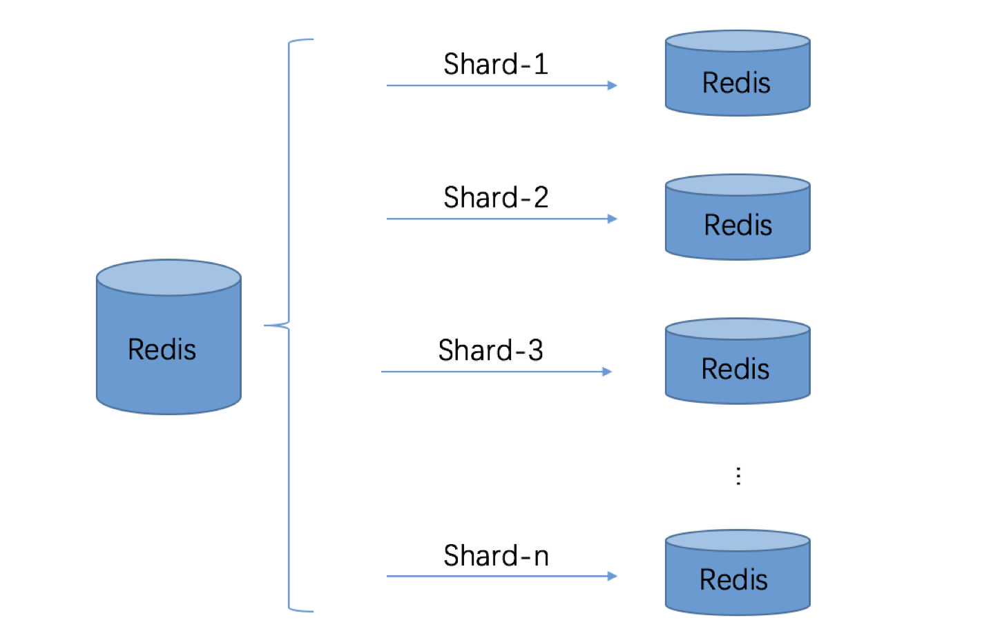
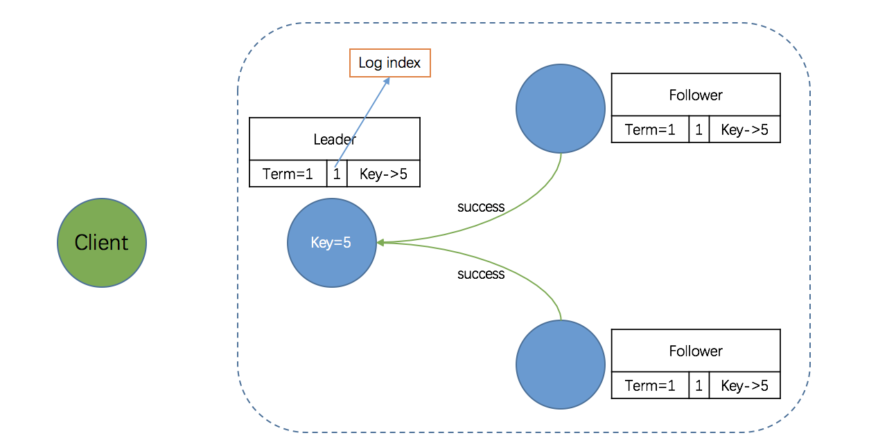
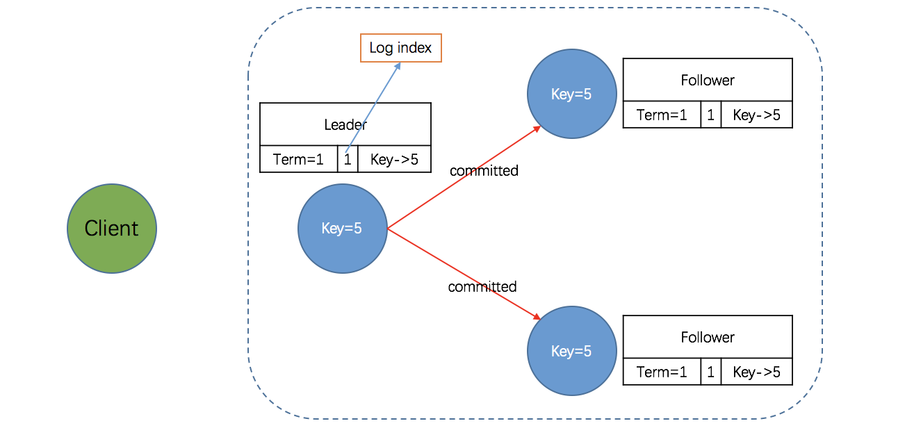
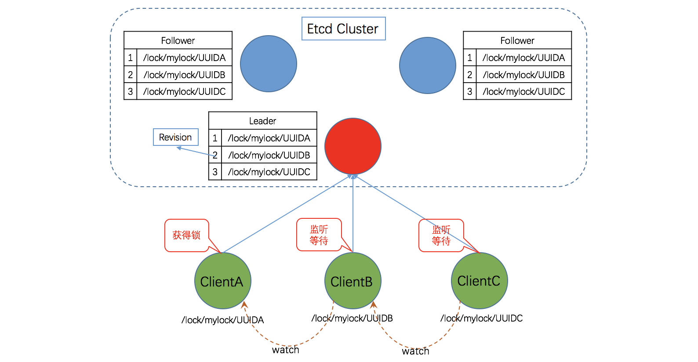
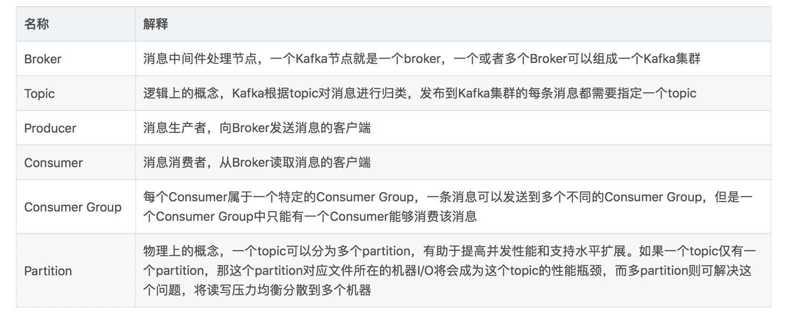
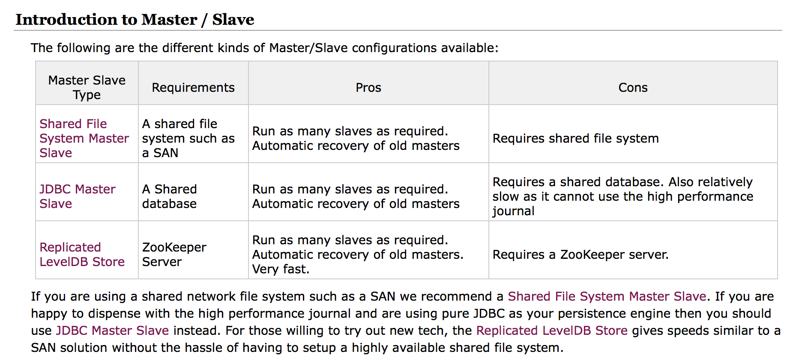
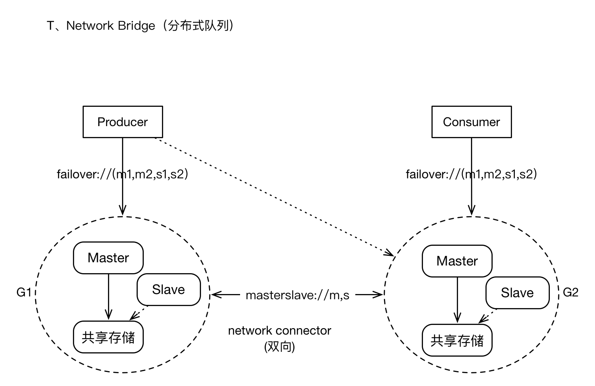
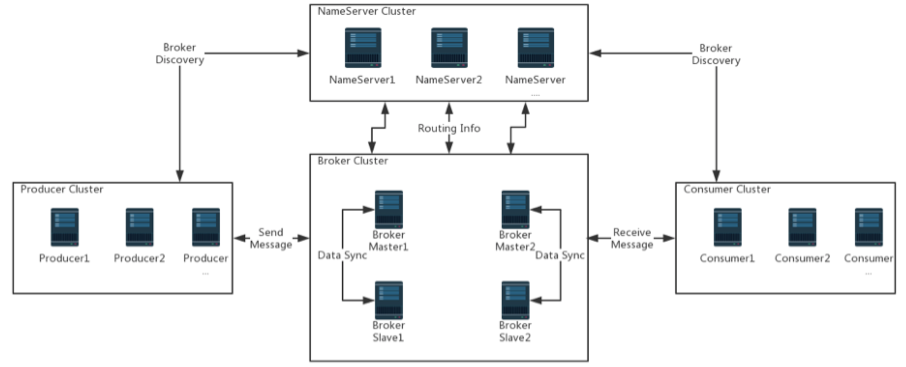
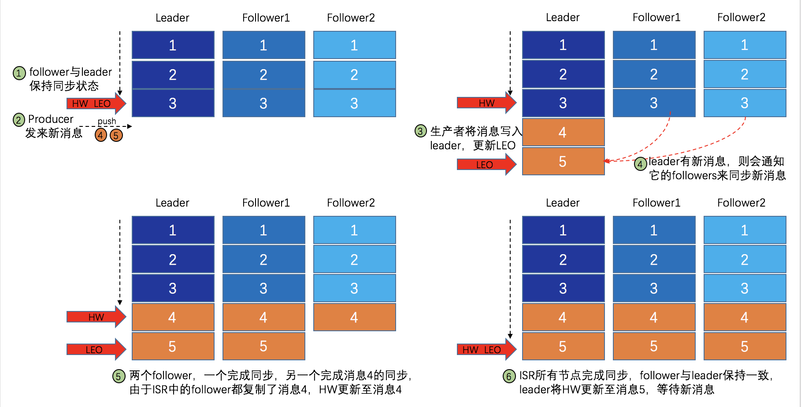

01 开篇词：从中间件开始学习分布式
专栏背景
谈及“分布式系统”，初学者的第一感觉多半是“高大上”和“深不可测”，犹如武林绝学——飞鸟投林、踏浪行波，行走江湖，即便没有见过，也应听过其名。
盛名之下无虚士，分布式系统凭借其高吞吐、高并发、低延迟和负载均衡的特点，迎合了互联网飞速发展背后的巨大承载量需求，民间和官方都有忠实粉丝为其著书立说，然而，大多倾向于理论，对于初学者有一定难度。鉴于此，我期望通过本专栏中的系列文章，用理论与实践结合的方式阐明分布式系统的原理、优势及面临的挑战，进而指导实践。
那么，如何将理论与实践结合呢？切入点的选取是关键，几经考量，我选择了一个最具“通用性”的角度——中间件（Middleware）。如果你不清楚什么是中间件，那你也应该听说过 Redis、Kafka、ZooKeeper、Etcd、RabbitMQ、Nginx 之一，它们都是常用的中间件，可实现缓存、消息队列、锁以及负载均衡等。中间件是基础软件的一大类，属于可复用软件的范畴，顾名思义，中间件处于操作系统软件与用户的应用软件的中间，因此，中间件具有很好的独立性，可作为一个独立的软件系统运转。
随着互联网的飞速发展，高吞吐、高并发、低延迟和负载均衡已成为普遍需求，为此，作为枢纽的中间件也从“集中式”发展为“分布式”——如基于 Redis 的分布式缓存、基于 Kafka 的分布式消息队列、基于 ZooKeeper 的分布式锁等等。青山遮不住，毕竟东流去，随着“云时代”的到来，作为通用软件的中间件再次华丽转身，阿里云、腾讯云、华为云都竞相推出了“云中间件服务”——如 TencentDB for Redis、消息队列 CMQ、云数据库 Redis 等等，几乎应有尽有。
从另一角度来看，作为一名 IT 行业的研发人员，从普通研发工程师到架构师的成长之路上，分布式中间件是绕不过去的。青丝弹指雪，刹那芳华，如果可以，何不从现在开始学习？
专栏框架
本专栏从分布式系统切入，首先介绍了集中式系统到分布式系统的演进，并对分布式系统的特性和常见问题进行了阐述。而后进入正题，依次介绍了三大分布式中间件：分布式缓存、分布式锁以及分布式消息队列。
本专栏分为四部分：
第一部分（第01课）：基础篇。
优秀的理论可以指导实践，为了使读者更好的理解分布式系统和中间件，本部分内容以简练的笔触介绍了集中式系统到分布式系统的演进，并对分布式系统的特性和相关理论进行了阐述。最后，从应用场景出发，引出了三大分布式中间件。
第二部分（第02-06课）：分布式缓存。
分布式缓存是应用范围最为广泛的中间件之一，因此最先介绍它。本部分内容首先对当前主流的分布式缓存方案进行了解读；随后浓墨重彩的阐述了 Redis-Cluster 的集群原理和基于 Redis 的分布式缓存实现，并列举了实际应用中 Redis 的典型异常、根因分析及解决方案；最后，结合源码分析了 Redis-Cluster 主节点故障场景下的调优策略。
第三部分（第07-10课）：分布式锁。
在分布式系统中，为保障不同进程争夺共享资源的安全性，需要分布式锁协助。实现分布式锁的方案很多，本部分内容首先对比分析当前主流的分布式锁方案，之后详细解读了基于 Redis 的分布式锁实现和基于 Etcd 的分布式锁实现；特别是 Etcd，作为后起之秀，在很多方面优于 ZooKeeper，但目前在网上几乎找不到完整的方案，鉴于此，本部分对其进行了详细解读。
第四部分（第11-13课）：分布式消息队列。
消息队列是分布式应用间交换信息的重要组件，可以解决应用解耦、异步消息、流量削锋等问题，是实现高性能、高可用、可伸缩和最终一致性架构中不可或缺的一环。本部分内容首先对当前主流的分布式消息队列方案进行了解读，之后深入浅出的阐述了基于 Kafka 的分布式消息队列实现和基于 RocketMQ 的分布式消息队列实现。
选择本专栏的理由
如果你正在看这段内容，我相信你对本专栏是感兴趣的，虽然我很期待你选择本专栏，但坦诚地讲，并没有十分具有说服力的理由，选择与否，主要还在于你对 “效率” 这个词的理解。只要你有足够的耐心和时间，本专栏中的部分知识在网上也能找到，当然，我并不推荐这种方式。对于分布式系统、中间件这类需要系统性学习的知识，网络搜索不仅费时费力，而且可信度存疑。
来自实践，服务实践
本专栏是我从事中间件研发的经验总结，来自实践，服务于实践。专栏主要包括分布式缓存、分布式锁、分布式消息队列三大部分内容，涉及 Redis、Etcd、Kafka、RocketMQ 等众多主流开源软件的使用方案。不仅提供关键源代码供读者快速实践，而且阐明其中原理并给出踩坑案例和调优分析，致力于授读者以渔。
理论加持，事半功倍
在 “多、快、好、省，跑步前进……”的“实用主义”熏陶下，理论二字，很多时候是令人反感的，似乎成了虚无、不切实际、缺乏实践意义的代名词。但凡事不可一概而论，事实证明，成功的实践背后常常有优秀的理论指导。
以 Redis 为例，官方推出的 Redis Cluster 号称最大可支持1000个实例的集群，为什么不可以再多一点，比如2000个呢？又或者这样问：为什么 BAT 都没有采用 Redis Cluster？如果读者知道 Redis Cluster 所采用的分布式一致性协议及其原理，那么一定不难回答上面的问题。
在实践中，理论加持常常可以达到事半功倍的效果，因此，本专栏并不局限于方案的简单实现，而是在介绍方案的同时，对其背后的原理进行了深入浅出的论述。
方案对比，注重迁移
没有一种方案可以打遍全场，在中间件选型和方案设计的时候，需结合性能需求、开发成本、可扩展性、可维护性等进行综合评估。例如：基于 ZooKeeper 实现分布式锁的方案非常成熟，参考资料详实，但它并不一定适合你的应用场景，何不考虑一下 Etcd？等等，你是不是根本没有听说过 Etcd？
本专栏介绍了三大中间件：缓存、锁、消息队列，并对每一种中间件的主流实现方案进行了对比分析，以便读者举一反三，迁移应用。
02 走进分布式中间件（课前必读）
1. 白话分布式系统
关于“分布式系统”的定义，《分布式系统原理和范型》一书中是这样阐述的：“分布式系统是若干独立计算机的集合，这些计算机对于用户来说就像是单个相关系统”。
关于上述定义，直白点，可以这样理解：
- 首先，分布式系统相对来说比较强大，至少由数台计算机组成。以阿里云、腾讯云、华为云等服务商为例，他们的数据中心计算机规模都在万台以上；
- 其次，虽然分布式系统很强大，但是“深藏不露”，对用户来说，根本感觉不到计算机集群的存在，与单机无异。
更进一步，从进程角度看，两个程序分别运行在两台计算机上，它们相互协作完成同一个服务（或者功能），从理论上讲，这两个程序所组成的系统，就可以称作是“分布式系统”。当然，这个两个程序可以是不同的程序，也可以是相同的程序。如果是相同的程序，我们又可以称之为“集群”。
1.1 分布式系统——应需求而生
分布式系统出现之前，软件系统都是集中式的，俗称单机系统。在很长的一段时期，单机系统通过升级硬件就能满足不断增长的性能需求，然而，随着互联网的飞速发展，高吞吐、高并发、低延迟逐渐成为“刚需”，单凭硬件升级已无能为力，分布式系统 “应需求而生”。
集中式系统跟分布式系统是完全相反的两个概念。集中式系统就是把所有的程序、功能都集中到一台主机上，进而对外提供服务。从用户的角度来看，集中式系统与分布式系统并没有什么不同。比如，打开手机 App 浏览网页，用户看到的只不过是服务器返回数据的呈现，至于服务器是单机还是集群，用户无感知，也无须感知。
既然如此，为何分布式系统会被广泛应用呢？原因很简单：需求驱动。
退回到20年前，那时的互联网远不像今天这么普及，计算机还只是作为辅助工具，典型的应用场景如： 企业级信息管理（生产信息、财务信息等）、图书馆书籍管理和查询等，数据量不过几百 GB ，用户数量不过几千人，一台服务器（单机系统）足以支撑。
然而，随着互联网时代的到来，情形已经完全不同。以一年一度的“双十一”电商狂欢节为例，2017年天猫双11全球狂欢节开场5分22秒，支付峰值达25.6万笔／秒，刷新全球纪录；同时诞生的还有数据库处理峰值记录，4200万次／秒。如此巨大的数据处理量，单机系统恐怕只能掩面而泣了。
1.2 分布式系统——双刃剑
分布式系统是由一组通过网络进行通信、为了完成共同的任务而协调工作的计算机节点组成的系统。分布式系统的出现是为了用廉价的、普通的机器完成单个计算机无法完成的计算、存储任务。其本质是利用更多的机器，实现更强大的计算、存储能力。
说得直白点，就像开餐厅，每天供应50个人用餐，一个厨师，一个灶台就够了；倘若每天供应5000人用餐，恐怕请一个食神也搞不定吧，怎么办呢？安排100个普通厨师，100个灶台同时开火，将5000人的用餐压力分散到各个厨师，并使用员工守则对厨师进行管理。
通常，只有在单机系统完全无法满足需求的时候，我们才考虑分布式系统。因为，分布式系统提供的服务与单机系统本质是一样的，但分布式系统更为复杂，会引入很多单机系统没有的问题，为了解决这些问题又会引入更多的机制、协议，进而带来更多的问题。鉴于此，单机系统能够解决的问题，不要盲目采用分布式系统。这一点很好理解：管理一个厨师很容易，管理100个厨师问题就多了。
2. 分布式系统特性
2.1 内聚性和透明性
分布式系统是建立在网络之上的软件系统。继承软件的特性，分布式系统同样具有高度的内聚性和透明性。
内聚性是指每一个节点高度自治；透明性是指系统对用户来说都是透明的，用户无法感知系统是如何实现的。
在《Distributed Systems Principles and Paradigms》一书中，作者对分布式系统的定义为：“A distributed system is a collection of independent computers that appears to its users as a single coherent system”。
2.2 可扩展性
分布式系统的设计初衷就是利用集群多机的能力来处理单个计算机无法处理的任务，当任务增加的时候，分布式系统的处理能力需要随之增强，通常有两种方式：其一，优化系统的性能或者升级硬件(Scale Up，即垂直扩展)；其二，增加计算单元（如服务器等）以扩展系统的规模（Scale Out，即水平扩展）。
一般来说，垂直扩展更容易实现，不过成本更高，且垂直扩展存在单点失效的可能。而水平扩展通常成本更低，更加可靠，不过相对于垂直扩展而言更难实现。
那么，究竟选择哪种扩展方式呢？这就需要全盘考虑，实际应用中，需要分布式系统处理的任务规模往往是变化的，理想的情形是：当任务量增加的时候，系统的处理能力可随之增强（比如增加服务器的数量）；当任务量减少的时候，系统的处理能力可以减弱（比如减少服务器的数量），以避免资源浪费，这就是所谓的动态伸缩。显然，垂直扩展并不具备动态伸缩的能力，因此，分布式系统通常采用的是水平扩展方式，不仅可以实现动态伸缩，还可以松耦合、提升系统的容错能力。
2.3 可用性
其标准定义为，在要求的外部资源得到保证的前提下，系统在规定的条件下和规定的时刻或时间区间内处于可执行规定功能状态的能力。以下通过一个计算公式来直观的感受可用性：
Availability = MTBF / (MTBF + MTTR)*100%
其中，MTBF（Mean Time Between Failure）是指相邻两次故障之间的平均工作时间，MTTR（Mean Time To Repair）是指系统由故障状态转为工作状态所需修复时间的平均值。通常，用 N 个9来表征系统可用性，比如99.9%（3-nines Availability），99.999%（5-nines Availability）。
图片出自：CSDN 博客
2.4 可靠性
与可用性不同，可靠性是指在给定的时间间隔和给定条件下，系统能正确执行其功能的概率。可靠性的量化指标是周期内系统平均无故障运行时间，可用性的量化指标是周期内系统无故障运行的总时间。这种“官方定义”比较晦涩，下面举一个简单的例子。
A 系统每年因故障中断10次，每次恢复平均要30分钟；B 系统每年因故障中断2次，每次需5小时恢复。则 A 系统可用性比 B 系统高，但可靠性比 B 系统差。
评价可用性：A>B
A 系统=
(365*24-10*0.5)/10/((365*24-10*0.5)/10 + 0.5)*100% = 99.943%B 系统=
(365*24-2*5)/2/((365*24-2*5)/2 + 5)*100% = 99.886%评价可靠性：A < B
A 系统=
(365*24-10*0.5)/10 = 875.5B 系统=
(365*24-2*5)/2 = 4375
2.5 高性能
不管是单机系统还是分布式系统，性能都是关键指标。不同的系统对性能的衡量指标是不同的，最常见的：高并发，单位时间内处理的任务越多越好；低延迟：每个任务的平均时间越少越好。分布式系统的设计初衷便是利用更多的机器，实现更强大的计算、存储能力，即实现高性能。
2.6 一致性
分布式系统为了提高可用性和可靠性，一般会引入冗余（副本）。为了保证这些节点上的状态一致，分布式系统必须解决一致性问题。一致性有很多等级，一致性越强，对用户越友好，但会制约系统的可用性；一致性等级越低，用户就需要兼容数据不一致的情况，但系统的可用性、并发性会好很多。关于一致性，会在下文“CAP理论简介”小节中详细介绍。
3. 分布式系统常见问题
计算机系统看似强大，但在实际应用环境中，由于一些不可控（或者说很难控制）因素，使得计算机系统十分脆弱，特别是在分布式系统中，更为明显。本节将介绍两种常见的分布式系统问题。
3.1 网络并没有那么可靠
分布式系统中，节点间通过网络通信，而网络并没有那么可靠。常见的网络问题有：网络分区、延时、丢包、乱序等。
消息丢失
消息丢失是最常见的网络异常。对于常见的 IP 网络，网络层不保证数据报文的可靠传递，在发生网络拥塞、路由变动、设备异常等情况时，可能出现发送数据丢失的问题。
网络分区
举例说明，某分布式系统部署于两个机房，机房间使用内部独立光纤链路。由于机房间的光纤链路故障，两个机房间通信中断，在此期间，两个机房内的节点相互通信正常，随之形成两个分区，即原来的分布式系统因网络分区形成了两个系统。
消息乱序
消息乱序是指节点发送的网络消息有一定的概率不是按照发送时的顺序依次到达目的节点。
数据错误
网络上传输的数据有可能发生比特错误，从而造成数据错误。通常使用一定的校验码机制可以较为简单的检查出网络数据的错误，从而主动丢弃错误的数据。
分布式系统三态
由于网络异常的存在，分布式系统中请求结果存在“三态”的概念。在单机系统中，我们调用一个函数实现一个功能，则这个函数要么成功、要么失败，只要不发生宕机，其执行的结果是确定的。
然而在分布式系统中，如果某个节点向另一个节点发起 RPC 调用，即某个节点 A 向另一个节点 B 发送一个消息，节点 B 根据收到的消息内容完成某些操作，并将操作的结果通过另一个消息返回给节点 A，那么这个 RPC 执行的结果有三种状态：“成功”、“失败”、“超时（未知）”，称之为分布式系统的三态。
3.2 节点故障无法避免
虽然单个节点的故障概率较低，但节点数目达到一定规模后，整个系统出故障的概率就变高了。分布式系统需要保证故障发生时，系统仍然是可用的，这就需要监控节点的状态，在节点故障的情况下将该节点负责的计算、存储任务转移到其他节点。
总而言之，分布式系统面临的挑战来自不确定性，不确定计算机什么时候宕机、断电，不确定磁盘什么时候损坏，不确定每次网络通信要延迟多久，也不确定通信对端是否处理了发送的消息。而分布式系统的规模又放大了这种不确定性。
4. CAP理论简介
在分布式环境下设计和部署系统时，有三个核心的系统需求：Consistency（一致性），Availability（可用性）和 PartitionTolerance（分区容忍性），但三者无法在分布式系统中同时被满足，并且最多只能满足其中两个，该理论简称 为 CAP。
CAP 理论最早是2000年由 Eric Brewer 教授在 PODC 的研讨会上提出猜想，后来 Lynch 等人进行了证明。该理论被认为是分布式系统领域的重要理论之一， 有着广泛的知名度，很多工程师将其作为衡量系统设计的准则。
4.1 一致性（Consistency）
如果系统对一个写操作返回成功，那么之后的读请求都必须读到这个新数据；如果返回失败，那么所有读操作都不能读到这个数据，对调用者而言数据具有强一致性（Strong Consistency）（又叫原子性 Atomic、线性一致性 Linearizable Consistency)。
4.2 可用性（Availability）
用户的每个请求都能接受到一个响应，无论响应是成功或失败，即服务在任何时刻都是可用的，这就要求系统当中不应该有单点的存在（如果服务是单节点部署，一旦节点宕机，服务便不可用了)，通常可用性都是通过冗余的方式来实现的，关于可用性的评价方式，在上面“分布式系统特性”小节中已经详细介绍，在此不再赘述。
4.3 分区容忍性（PartitionTolerance）
关于分区容忍性，Brewer 给出的定义是：“No set of failures less than total network failure is allowed to cause the system to respond incorrectly”， 即除了整个网络出现故障外，其它的故障都不能导致整个系统无法正确响应。分区容忍比较抽象，在此特别说明一下。
分布式系统中，节点间通过网络进行通信，然而可能因为一些故障，导致有些节点之间不连通，整个网络就分成了几块区域。数据就散布在了这些不连通的区域中，从而形成了分区。
当一个数据项只在一个节点中保存时，如果分区出现，那和该节点不连通的部分将无法访问这个数据了（即单点故障问题），这时的分区是无法容忍的。提高分区容忍性的办法就是将一个数据项复制到多个节点上（副本思想），在出现分区后，这一数据项就可能分布到各个区里，容忍性就提高了。
然而，要把数据复制到多个节点，就会带来一致性的问题，就是多个节点上面的数据可能是不一致的。要保证一致，每次写操作都要等待全部节点写成功，而等待期间系统是不可用的，从而带来可用性的问题。总的来说，数据存在的节点越多（副本越多），分区容忍性越高，但同时需要复制、更新的数据就越多，一致性就越难保证。为了保证一致性，更新所有节点数据所需要的时间就越长，可用性就会降低。
4.4 CAP——鱼与熊掌不可兼得
根据 CAP 理论，在分布式系统中，CAP 三者不可能同时被满足，在设计分布式系统时，工程师必须做出取舍，一般认为，CAP 只能选择其二。
CA without P
放弃 P（分区容忍），以保证 C（强一致性）和 A（可用性）。其实分区容忍并不是能否放弃的问题，只能是阻止，即不允许分区出现，一种直接的策略就是所有服务部署在一台服务器上，退化为单机系统。
这里存在一个争议问题，即怎样才算“舍弃 P”？其含义并不明确。
在分布式系统中，分区是无法完全避免的，设计师即便舍弃分区容忍，就一定可以保证一致性和可用性吗？当分区出现的时候，还是需要在 C 和 A 之间做出选择：选择一致性则需等待分区恢复，在此期间牺牲可用性；选择可用性，则无法保证各个分区数据的一致性。
某种意义上，舍弃分区容忍是基于一种假设，即分区出现的概率很低，远低于其它系统性错误。基于不存在分区问题的假设，CA 之间仍然存在矛盾：为了保证服务的可用性，那就必须避免单节点故障问题，即服务需部署在多个节点上，即便其中一个节点故障而不能提供服务，其它节点也能替代它继续提供服务，从而保证可用性；但是，这些服务是分布在不同节点上的，为了保证一致性，节点之间必须进行同步，任何一个节点的更新都需要向其它节点同步，只有同步完成之后，才能继续提供服务，而同步期间，服务是不可用的，因此，即便没有分区，可用性和一致性也不可能在任何时刻都同时成立。
对于分布式系统，鉴于分区不可避免，通常不会考虑舍弃分区容忍，同时考虑到分区出现的概率极低，可以采取一些策略来平衡分区对一致性和可用性的影响，这对设计师来说是一个不小的挑战，在本课程的后续章节中，我会结合具体的应用实例进一步说明。
CP without A
放弃 A（可用性），一旦分区发生，部分节点之间失去联系，为了保证一致性，需要等待受影响的服务所在的节点数据一致（本质上就是等待分区恢复），而等待期间无法对外提供服务。如此，CP 也是可以保证的，很多传统的数据库分布式事务都属于这种模式。
AP wihtout C
放弃 C（一致性），保证高可用并允许分区。一旦分区发生，节点之间可能会失去联系，为了高可用，每个节点只能用本地数据提供服务，而这样会导致全局数据的不一致性。。
5. 分布式中间件——缓存
缓存是一种用于提高系统响应速度、改善系统运行性能的技术。对于一个服务，其性能瓶颈往往都在 DB，传统关系型存储尤甚。从磁盘中读取数据，IO 瓶颈是非常明显的，而缓存通常是基于内存的，比 DB 从磁盘读数据快两个数量级。
分布式缓存主要包含以上几大特性：
- 高性能：当传统数据库面临大规模数据访问时，磁盘 I/O 往往成为性能瓶颈，从而导致过高的响应延迟。分布式缓存将高速内存作为数据对象的存储介质，数据以 key/value 形式存储，理想情况下可以获得 DRAM 级的读写性能；
- 动态扩展性：支持弹性扩展，通过动态增加或减少节点应对变化的数据访问负载，提供可预测的性能与扩展性，同时，最大限度地提高资源利用率；
- 高可用性：包含数据可用性与服务可用性两方面。基于冗余机制实现高可用性，无单点失效问题，支持故障的自动发现，透明地实施故障切换，不会因服务器故障而导致缓存服务中断或数据丢失，动态扩展时自动均衡数据分区，同时保障缓存服务持续可用；
- 易用性：提供单一的数据与管理视图；API 接口简单且与拓扑结构无关；动态扩展或失效恢复时无需人工配置；自动选取备份节点；多数缓存系统提供了图形化的管理控制台，便于统一维护。
典型应用场景主要有：
- 页面缓存：用来缓存 Web 页面的内容片段，包括 HTML、CSS 和图片等，多应用于社交网站等；
- 应用对象缓存：缓存系统作为 ORM 框架的二级缓存对外提供服务，目的是减轻数据库的负载压力，加速应用访问；
- 状态缓存：缓存包括 Session 会话状态及应用横向扩展时的状态数据等，这类数据一般是难以恢复的，对可用性要求较高，多应用于高可用集群；
- 并行处理：通常涉及大量中间计算结果需要共享；
- 事件处理：分布式缓存提供了针对事件流的连续查询处理技术,满足实时性需求。
6. 分布式中间件——锁
在多线程并发场景下，为了保证共享资源在同一时刻只能被同一个线程操作，需要对共享资源进行互斥控制，即加锁。对单进程应用而言，部分编程语言内置的锁机制便足以保证并发安全，如 Java 语言可用 synchronized 和 Lock 来实现锁。然而，由于分布式系统多线程、多进程并且分布在不同节点，需要一种跨 JVM 的互斥机制来控制共享资源的访问，这就是分布式锁要解决的问题。
6.1 预备知识
原子性问题
所谓原子性，指的是一个操作不可中断，即在多线程并发的环境下，一个操作一旦开始，就会在同一个 CPU 时间片内执行完毕。如果同一个线程的多个操作在不同的 CPU 时间片上执行，由于中间出现停滞，后面的操作在执行时可能因某个共享数据被其它线程修改，而该修改并未同步到当前线程中，导致当前线程操作的数据与实际不符，这种由于执行不连贯导致的数据不一致问题被称作原子性问题。
可见性问题
可见性问题的出现与线程访问共享数据的方式有关。线程访问堆（方法区）中的变量时，先在栈中建立一个变量的副本，修改后再同步到堆中。如果一个线程刚建立副本，这时另一线程修改了变量，尚未同步到堆中，这时就会出现两个线程操作同一变量的同一种状态的现象，比如 i=9，变量 i 的初始值为9，每一个线程的操作都是减1。两个线程 A 与 B 同时访问变量，B 先执行 i-1，在将结果 i=8 同步到堆中前，A 线程也执行 i-1，这时 i=9 的状态就被执行两次，出现线程安全问题。
线程安全问题产生的原因在于一个线程对共享数据的修改不能立即为其它线程所见。
有序性问题
为了提高执行效率，CPU 会对那些没有依赖关系的指令重新排序，重新排序后的执行结果与顺序执行结果相同。例如，在源代码中：
int a=0;
int b=1;
CPU 在执行时可能先执行 int b=1;，接着执行 int a=0;，执行结果与顺序执行结果相同。 指令重排在单线程环境下是安全的，在多线程环境下就可能出现问题。比如下面这个例子。
线程 A：
String str = "hello world!";//指令1
boolean flag = false;//指令2
线程 B：
while(flag)
{
doSome();
}
str.toUpperCase();//指令3
如果线程 A 顺序执行，即执行指令1，再执行指令2，线程 B 的执行不会出现问题。指令重排后，假如线程 A 先执行指令2，这时 flag=false，切换到线程 B，终止循环，执行指令3，由于 str 对象尚未创建就会出现空指针异常。
6.2 锁机制
上一小节中的问题都是多线程并发场景中的常见问题，其根源在于：对共享资源的争夺。为了解决这类问题，Java 提供了很多策略，如 volatile 关键字，可以禁止指令重排，从而避免有序性的问题；对于原子性问题和可见性问题，在高并发场景下，为了保证共享资源在同一时刻只能被同一个线程执行，需要对公共资源进行互斥控制，即加锁。
Java 提供了两种内置的锁的实现：由 JVM 实现的 synchronized 和 JDK 提供的 Lock，对于单进程应用来说，使用 synchronized 或 Lock 来实现锁，足以保证并发安全。
6.3 synchronized 及 Lock 的实现原理
synchronized 本质上是通过锁来实现的。对于同一个代码块，为了实现多个线程在一个时刻只能有一个线程执行，需要在某个地方做个标记，每个线程都必须能看到它。当标记不存在时，某个线程可以设置该标记，其余后续线程发现已经有标记了，则等待拥有标记的线程结束同步代码块取消标记后，再去尝试设置标记。这个标记可以理解为锁。
不同地方实现锁的方式也不一样，只要能满足所有线程都能看得到标记即可。如 Java 中 synchronize 是在对象头设置标记；Lock 接口的实现类的基本思想是，用一个 volitile 修饰的 int 型变量，保证每个线程都能拥有对该 int 的可见性和原子修改。
6.4 分布式场景
从上面的分析可以看出，Java 提供的两种锁机制有效的前提是：同一个进程内有效。但是，随着业务发展，原单机部署的系统被演化成分布式系统后，由于分布式系统多线程、多进程并且分布在不同物理机上，这将使原单机部署情况下的并发控制锁策略失效。为了解决这个问题，就需要一种跨 JVM 的互斥机制来控制共享资源的访问，这就是分布式锁要解决的问题。
实现分布式锁需要依赖一个第三方系统，此系统需要满足高可用和较强的一致性，同时能应付高并发的请求。常见的分布式锁实现方式有三种：数据库、缓存、分布式协调系统。
7. 分布式中间件之消息队列
消息队列中间件是分布式系统中重要的组件，主要解决应用耦合、异步消息、流量削锋等问题。它可以实现高性能、高可用、可伸缩和最终一致性架构，是大型分布式系统不可缺少的中间件。
消息队列在电商系统、消息通讯、日志收集等应用中扮演着关键作用，以阿里为例，其研发的消息队列（MQ）服务于阿里集团超过11年，在历次天猫双十一活动中支撑了万亿级的数据洪峰，为大规模交易提供了有力保障。目前在生产环境中，使用较多的消息队列有 ActiveMQ、RabbitMQ、ZeroMQ、Kafka、MetaMQ，RocketMQ 等。
分布式消息队列的特点主要有：
- 速度快、高吞吐量、分布式、多分区；
- 支持动态扩展；
- 将数据持久化到硬盘以及副本防止数据丢失；
- 支持多消费者；
- 支持 Online（实时消费）和 Offline（离线消费，比如按天消费）的场景。
7.1 分布式消息队列的典型应用场景
异步处理
支持异步通信协议，消息的发送者将消息发送到消息队列后可以立即返回，不用等待接收者的响应。消息会被保存在队列中，直到被接收者取出。消息的发送与处理是完全异步的。下面通过一个例子来说明。
对于大多数应用，在用户注册后，都需要发注册邮件和注册短信。传统的做法有两种：
1. 串行方式：将注册信息写入数据库成功后，发送注册邮件，再发送注册短信。以上三个任务全部完成后，返回给客户端，如下图示:
2. 并行方式：将注册信息写入数据库成功后，发送注册邮件的同时，发送注册短信。以上三个任务完成后，返回给客户端。与串行的差别是，并行的方式可以提高处理的效率。
接下来，我们引入消息队列，来实现异步处理。
将注册信息写入数据库成功后，将消息写入消息队列，然后立即返回成功；此后，邮件系统和短信系统分别从消息队列中获取注册信息，再发送注册邮件和短信。很明显，借助消息队列的异步处理能力，将极大的提高响应速度。
应用解耦
以电商 IT 架构为例，在传统紧耦合订单场景里，客户在电商网站下订单，订单系统接收到请求后，立即调用库存系统接口，库存减一，如下图所示：
上述模式存在巨大风险：
- 假如库存系统无法访问（升级、业务变更、故障等），则订单减库存将失败，从而导致订单失败；
- 短时间内大量的请求，频繁查询库存，修改库存，库存系统负载极大。
我们引入消息队列，解除强耦合性，处理流程又会怎样呢？
订单系统中，用户下单后，订单系统完成持久化处理，将消息写入消息队列，返回用户订单下单成功，此时客户可以认为下单成功。消息队列提供异步的通信协议，消息的发送者将消息发送到消息队列后可以立即返回，不用等待接收者的响应。消息会被保存在队列中，直到被接收者取出。
库存系统中，从消息队列中获取下单信息，库存系统根据下单信息进行库存操作。
流量削锋
像双11秒杀、预约抢购等活动，通常会出现流量暴增，当外部请求超过系统处理能力时，如果系统没有做相应保护，可能因不堪重负而挂掉。
这时，我们可以引入消息队列，缓解短时间内高流量压力：
- 用户的秒杀请求，服务器接收后，首先写入消息队列，然后返回成功。假如消息队列长度超过最大数量，则直接抛弃用户请求或跳转到失败页面；
- 秒杀业务根据消息队列中的请求信息，再做后续处理（根据数据库实际的select、insert、update 能力处理注册、预约申请）。
消息通讯
消息通讯很好理解，以微信群聊为例：
- A 通过客户端发送消息到群里，服务端将消息写入消息队列；
- 消息队列，负责消息数据的接收，存储和转发；
- B 通过客户端查看群消息，订阅并消费消息队列中的信息。
8. 总结
本文首先介绍了单机系统到分布式系统的演进，并对分布式系统的特性和常见问题进行了阐述。而后进入正题，从 CAP 理论切入，介绍了三大分布式中间件：分布式缓存、分布式锁以及分布式消息队列。该文涉及到了很多理论知识，是学习本课程重要的基础知识，请大家好好理解。
参考文献与致谢
本文的一些图片和文字引用了一些博客和论文，尊重原创是每一个写作者应坚守的底线，在此，将本文引用过的文章一一列出，以表敬意：
- 什么是分布式系统，如何学习分布式系统
- 浅谈分布式缓存那些事儿
- 多线程并发常见问题
- 分布式缓存那些事儿
- 并发并行与分布式系统 CAP 理论中的 P 到底是个什么意思？
- CAP 理论基础（注解）
- 浅谈分布式缓存那些事儿
03 主流分布式缓存方案的解读及比较
分布式缓存一般被定义为一个数据集合，它将数据分布（或分区）于任意数目的集群节点上。集群中的一个具体节点负责缓存中的一部分数据，整体对外提供统一的访问接口。分布式缓存一般基于冗余备份机制实现数据高可用，又被称为内存数据网格（IMDG，In-Memory Data Grid）。在云平台飞速发展的今天，作为提升应用性能的重要手段，分布式缓存技术在工业界得到了越来越广泛的关注和研发投入 。本文将介绍三种分布式缓存开源软件：Redis、Memcached 及 Tair。
1. Redis
目前，在所有可实现分布式缓存的开源软件中，Redis 应用最为广泛，开源社区也最为活跃，开源客户端支持语言也最为丰富，因此，我首先介绍 Redis。
1.1 Redis 简介
关于 Redis
Redis 其实是一个缩写，全名为 Remote Dictionary Server。其作者是来自意大利西西里岛的 Salvatore Sanfilippo，现在居住在卡塔尼亚，目前供职于 Pivotal 公司。他用网名 antirez 发表了大量博客，感兴趣的读者可以去逛逛（地址是 antirez.com），当然也可以去 Follow 他的 Github，地址是：http://github.com/antirez。从2010年3月15日起，Redis 的开发工作由 VMware 主持。2013年5月，Redis 得到 Pivotal 的赞助。
Redis 使用 ANSI C 语言编写，最新版本（4.0.10）代码规模7.6万行。与我们熟知的关系型数据库 Oracle、Microsoft SQLServer、MySQL 不同，Redis 属于 NoSQL 数据库（非关系数据库）。
Redis 可以做什么
Redis 是一个开源的，基于内存存储亦可持久化的 Key-Value 存储系统，可用作数据库、高速缓存、锁和消息队列。它支持字符串、哈希表、列表、集合、有序集合、位图、HyperLogLogs 等数据类型。内置复制、Lua 脚本、老化逐出、事务以及不同级别磁盘持久化功能，同时，Redis还支持Sentinel和Cluster(从3.0开始)等高可用集群方案。
作为缓存的常见业务场景有：
- 缓存热点数据，减轻数据库负载；
- 基于 List 结构显示最新的项目列表；
- 基于 Sorted Set 来做排行榜，取 Top N；
- 基于 Set 来做 uniq 操作，如页面访问者排重；
- 基于 Hset 做单 Key 下多属性的项目，例如商品的基本信息、库存、价格等设置成多属性。
1.2 Redis 特点
与其它 Key-Value 缓存产品相比，Redis 有以下特点：
- Redis 支持数据的持久化（包括 AOF 和 RDB 两种模式），可以将内存中的数据保存在磁盘中，重启的时候可以再次加载进行使用，性能与可靠性兼顾；
- Redis 不是仅仅支持简单的 Key-Value 类型的数据，还支持字符串、列表、集合、散列表、有序集合数据结构的存储，这一优势使 Redis 适用于更广泛的应用场景；
- Redis 支持数据的备份，即 Master-Slave 模式，Master 故障时，对应的 Slave 将通过选举升主，保障可用性；
- Redis 主进程是单线程工作，因此，Redis 的所有操作都是原子性的，即操作要么成功执行要么失败完全不执行。单个操作是原子性的。多个操作也支持事务，即原子性；
- Redis 性能优越，读的速度达110000次/s，写的速度达81000次/s；此外，Key 和 Value 的大小限制均为 512M，这阈值相当可观。
除了上述特点，Redis 还支持 Publish/Subscribe、通知、Key 老化逐出等特性。
Redis 支持多种数据类型
它支持字符串、哈希表、列表、集合、有序集合，位图，HyperLogLogs 等数据类型，每种数据类型对应不同的数据结构以支持不同的应用需求。
此外，Redis 底层实现采用了很多优秀的数据结构，使其具有优异的性能，例如 Redis 使用跳跃表作为有序集合键的底层实现之一，如果一个有序集合包含的元素数量比较多，又或者有序集合中元素的成员是比较长的字符串时，Redis 就会使用跳跃表作为有序集合键的底层实现。跳跃表以有序的方式在层次化的链表中保存元素，效率可与平衡树媲美——查找、删除、添加等操作都可以在对数期望（LogN）时间下完成。
Redis 主进程是单线程
Redis 主进程是单线程工作，因此，Redis 的所有操作都是原子性的，即操作要么成功执行，要么失败完全不执行。单个操作是原子性的，多个操作也支持事务，即原子性。
由于缓存操作都是内存操作，只有很少的计算，因此即便在单线程下，Redis 性能也很优秀。目前，大多数 CPU 都是多核的，为了提高多核 CPU 的利用率，通常在同一台机器上部署多个 Redis 实例（注意配置不同的端口），官方的推荐是一台机器部署8个实例。
Redis 持久化机制
Redis 支持数据的持久化（包括 AOF日志 和 RDB 快照两种模式），可以将内存中的数据保存在磁盘中，重启的时候可以再次加载进行使用，性能与可靠性兼顾。
需要注意的是，RDB 模式是定时的持久机制，发生宕机时可能会导致数据丢失，而 AOF 模式提供了 appednfsync 参数，通过设置 appednfsync 参数（设置为 always）可以最大限度保证数据安全，但也会降低效率。
Redis 高可用策略
Redis 支持数据的备份，即 Master-Slave 模式，Slave 可使用 RDB 和缓存的 AOF 命令进行同步和恢复，Master 故障时，对应的 Slave 将通过选举升主，保障可用性。
此外，Redis 还支持 Sentinel 和 Cluster（从3.0版本开始）等高可用集群方案。
Redis 数据淘汰策略
Redis 支持配置最大内存，当内存不够用时，会通过淘汰策略来回收内存，Redis 提供了丰富的淘汰策略，粒度粗细皆有，适用多种应用场景。
volatile-lru：从已设置过期时间的数据集中挑选最近最少使用的数据淘汰；volatile-ttl：从已设置过期时间的数据集中挑选将要过期的数据淘汰；volatile-random：从已设置过期时间的数据集中任意选择数据淘汰；allkeys-lru：从数据集中挑选最近最少使用的数据淘汰；allkeys-random：从数据集中任意选择数据淘汰；no-enviction：当内存使用达到阈值的时候，所有引起申请内存的命令会报错。
Redis 内存管理
Redis 使用 C 语言编写，但为了提高内存的管理效率，并没有直接使用 malloc/free 函数，Redis 默认选择 jemalloc 作为内存分配器，以减小内存碎片率。
jemalloc 在64位系统中，将内存空间划分为小、大、巨大三个范围。每个范围内又划分了许多小的内存块单位。当 Redis 存储数据时，会选择大小最合适的内存块进行存储。同时，Redis 为 Key-Value 存储定制了两种对象，其中 Key 采用 SDS（Simple Dynamic String)，Value 采用 redisObject，为内部编码和回收内存的高效实现奠定了基础。
Redis 的内存模型比较复杂，内容也较多，感兴趣的读者可以查阅《深入了解 Redis 的内存模型》博客做更深了解。
Redis 开源客户端
Redis 的开源客户端众多，几乎支持所有编程语言，如下图所示。其中常用的 Java 客户端有 Jedis、Lettuce 以及 Redission。
Redis 支持事务
Redis 提供了一些在一定程度上支持线程安全和事务的命令，例如 multi/exec、watch、inc 等。由于 Redis 服务器是单线程的，任何单一请求的服务器操作命令都是原子的，但跨客户端的操作并不保证原子性，所以对于同一个连接的多个操作序列也不保证事务。
1.3 Redis 高可用解决方案
Redis 有很多高可用的解决方案，本节只简单介绍其中三种。
方案1：Redis Cluster
从3.0版本开始，Redis 支持集群模式——Redis Cluster，可线性扩展到1000个节点。Redis-Cluster 采用无中心架构，每个节点都保存数据和整个集群状态，每个节点都和其它所有节点连接，客户端直连 Redis 服务，免去了 Proxy 代理的损耗。Redis Cluster 最小集群需要三个主节点，为了保障可用性，每个主节点至少挂一个从节点（当主节点故障后，对应的从节点可以代替它继续工作），三主三从的 Redis Cluster 架构如下图所示：
方案2：Twemproxy
Twemproxy 是一个使用 C 语言编写、以代理的方式实现的、轻量级的 Redis 代理服务器。它通过引入一个代理层，将应用程序后端的多台 Redis 实例进行统一管理，使应用程序只需要在 Twemproxy 上进行操作，而不用关心后面具体有多少个真实的 Redis 实例，从而实现了基于 Redis 的集群服务。当某个节点宕掉时，Twemproxy 可以自动将它从集群中剔除，而当它恢复服务时，Twemproxy 也会自动连接。由于是代理，Twemproxy 会有微小的性能损失。
Twemproxy 架构如下图所示：
方案3：Codis
Codis 是一个分布式 Redis 解决方案，对于上层的应用来说，连接到 Codis Proxy 和连接原生的 Redis Server 没有明显的区别（部分命令不支持）， 上层应用可以像使用单机的 Redis 一样使用，Codis 底层会处理请求的转发，不停机的数据迁移等工作。关于 Codis，在第03课中将详细介绍。
2. Memcached 介绍
没有比较就没有伤害，提到分布式缓存，工程师们通常都会将 Redis 与 Memcached 进行比较，那么，Memcached 到底怎么样呢？我们来看下。
2.1 Memcached简介
关于 Memcached
Memcached 始于2003年，是以 LiveJournal 旗下 Danga Interactive 公司的 Brad Fitzpatric 为首开发的一款开源软件。被广泛应用于提升动态 Web 应用性能，其用户包括 LiveJournal、Wikipedia、Flickr、Bebo、WordPress.com、Craigslist、Mixi、Facebook 等著名企业。其命名构成为 Mem+cached，Mem 代表内存，cache 意为缓存，Memcached，即基于内存的缓存。
Memcached 可以做什么
Memcached 是一种基于内存的 Key-Value 存储系统，单个 Value 最大 1MB，适用于存储小块的任意数据（字符串、对象）。
适用的业务场景有：
- 缓存动态网页，以及一些很小但被频繁访问的数据、文件；
- 缓存 Session 数据 、临时数据；
- 缓存计算结果和渲染后的网页模板。
2.2 Memcached 的特点
与其它 Key-Value 缓存产品相比，Memcached 有以下特点：
- 基于内存存储，速度快，对内存的要求高，CPU 要求低，不支持持久化，宕机或重启数据将全部丢失；
- 支持数据逐出机制，Memecache 在容量达到指定值后，将基于 LRU（Least Recently Used，最近最少被使用）算法自动删除不使用的缓存；
- 支持老化机制，可对存储的数据设置过期时间，但过期的数据采取惰性删除机制：不主动监控过期，而是在访问的时候查看 Key 的时间戳，判断是否过期，过期则返回空；
- 节点间相互独立，无集群模式；
- Memcached 采用 Slab Table 方式分配内存，可有效减少内存碎片，提升回收效率；
- 存储数据 Key 限制为250字节，Value 限制为 1MB，适用于小块数据的存储；
- Memcached 本身并不支持分布式，因此，一般在客户端通过一致性哈希这样的分布式算法来实现 Memcached 的分布式存储。此外，也可以通过第三方软件实现分布式；
Memcached 支持的数据类型
Memcache 只支持对键值对的存储，并不支持其它数据结构，复杂的数据结构需要应用程序自行处理。
Memcached 线程模型
Memcached 使用了多线程模式，开启 Memcached 服务器时使用 -t 参数可以指定要开启的线程数，但并不是线程数越多越好，一般设置为 CPU 核数，这样效率最高。此外，Memcached 使用了 NIO 模型以提升并发行能。
持久化机制
Memache 的设计理念就是一个单纯的缓存，因此并不提供持久机制，但可以通过第三方软件，如 MemcacheDB 来支持它的持久性。
客户端
许多语言都实现了连接 Memcached 的客户端，其中以 Perl、PHP 为主。仅仅 Memcached 网站上列出的就有：Perl、PHP、Python、Ruby、C#、C/C++、Lua 等等。
数据淘汰策略
Memecache 在容量达到指定值后，将基于 LRU（Least Recently Used，最近最少被使用）算法自动删除不使用的缓存。在某些情况下 LRU 机制也会带来麻烦，如将不期待的数据从内存中清除，这种情况下启动 Memcache，可以通过 M 参数禁止 LRU 算法。此外，Memecache 只支持单一的淘汰策略，粒度较大，须谨慎使用。
内存管理
与 Redis 内存管理类似，Memcached 也没有直接采用 malloc/free 管理内存，而是采用 Slab Allocation 机制管理内存。
其核心思想与 Redis 异曲同工。首先从操作系统申请一大块内存，并将其分割成各种尺寸的块 Chunk，并把尺寸相同的块分成组 Slab Class。其中，Chunk 是用来存储 Key-Value 数据的最小单位。当 Memcached 接收到客户端发送过来的数据时，首先会根据数据大小选择一个最合适的 Slab Class，并通过查询 Memcached 保存的该 Slab Class 内空闲 Chunk 的列表，就可以找到一个可用于存储数据的 Chunk。当一条数据过期或者丢弃时，该记录所占用的 Chunk 就可以回收，重新添加到空闲列表中。
从以上过程可以看出，Memcached 的内存管理制效率高，而且不会造成内存碎片，但它最大的缺点则是会造成空间浪费。每个 Chunk 都分配了特定长度的内存空间，所以变长数据无法充分利用这些空间。比如将64个字节的数据缓存到88个字节的 Chunk 中，剩余的24个字节就浪费掉了。
2.3 Memcache 高可用方案
Memcached 不支持真正意义上的集群模式，也不支持主从副本以防止单点故障。为了保障 Memcached 服务的高可用，需要借助第三方软件或者自己设计编程实现。常用的第三方软件有 Repcached、Memagent、 memcached-ha 等。
这里有个问题需要明确下，即 Memcached 在实现分布式群集部署时，Memcached 服务端之间是不能进行通讯的，也就是说服务端是伪分布式的，分布式将由客户端或者代理来实现。
方案1：一致性 Hash
Memcached 本身并不支持分布式，因此，可以在客户端通过一致性哈希这样的分布式算法来实现 Memcached 的分布式存储。
当客户端向 Memcached 集群发送数据时，首先通过一致性哈希算法计算出该条数据的目标节点，然后将数据直接发送到该节点上存储。当客户端查询数据时，同样要计算出查询数据所在的节点，之后直接向该节点发送查询请求以获取数据。
通过一致性哈希算法可以保证数据存放到不同的 Mamcached 上，分散了在单台机器上的风险，提高了可用性，但只能解决数据全部丢失的问题，部分数据仍可能丢失，比如当一台 Mamcached 所在节点宕机，它上面的数据还是会丢失。
方案2：Repcached
Repcached，全称 Replication Cached 高可用技术，简称复制缓冲区技术。Repcached 可用来实现 Memcached 的复制功能。它所构建的主从方案是一个单主单从方案，不支持多主多从。但是，主从两个节点可以互相读写，从而可以达到互相同步的效果。
假设主节点坏掉，从节点会很快侦测到连接断开，然后它会自动切换到监听状态（Listen）从而成为主节点，并等待新的从节点加入。
但原来挂掉的主节点恢复之后，只能作为从节点通过人工手动的方式重新启动。它并不能抢占成为新的主节点，除非新的主节点挂掉。这就意味着，基于 Repcached 实现的 Memcached 主从文案中，主节点并不具备抢占功能。
3. Tair 介绍
在分布式缓存领域，除了上面提到的 Redis 和 Memcached ，国内 IT 巨头阿里巴巴也推出了一套解决方案——Tair。Tair 是一个高性能、分布式、可扩展、高可靠的 Key-Value 结构存储系统。除了阿里集团，商用案例较少，社区活跃度较低，本节只作简要介绍。
3.1 Tair 简介
关于 Tair
Tair（全称 TaoBao Pair，Pair 即 Key-Value 键值对）是阿里巴巴集团旗下淘宝事业部开发的一个优秀的分布式高可用 Key-Value 存储引擎。Tair 首个版本于2010年6月推出，经过八年的发展，目前性能已经十分优秀，在淘宝、天猫、蚂蚁金服、菜鸟网络等产品中有着大规模的应用。
Tair 可以做什么
Tair 最新的开源版本实现了四种存储引擎：MDB、FDB、KDB 和 LDB，分别基于四种开源的 Key-Value 数据库：Memcached、Firebird、Kyoto Cabinet 和 LevelDB。其中 Firebird 是关系型存储数据库，Memcached、Kyoto Cabinet 和 LevelDB 是 NoSQL 数据库。
Tair分为持久化和非持久化两种使用方式。非持久化 Tair 可以用作分布式缓存；持久化 Tair 可类比数据库。Tair 之所以集成四种引擎，主要源于阿里众多的应用场景，比如：
- MDB 典型应用场景：用于缓存，降低对后端数据库的访问压力，比如淘宝中的商品都是缓存在 Tair 中；用于临时数据存储，部分数据丢失不会对业务产生较大影响，例如登录；
- LDB 典型应用场景：通用 Key-Value 存储、交易快照、安全风控等；存储黑白单数据，读 QPS 很高；计数器功能，更新非常频繁，且数据不可丢失；
- RDB 典型应用场景：复杂数据结构的缓存与存储，如播放列表，直播间，Top N 排名等。
注意：Tair 的开源版本与阿里内部使用的版本差别较大，比如，开源版本尚不支持 RDB 引擎，RDB 基于 Redis，阿里对其进行了深度优化。
3.2 Tair 特点
Tair 主要有以下几个特点：
- 高性能：在高吞吐下保证低延迟，阿里官方公布的数据显示：双11可达到每秒5亿次峰值的调用量，平均访问延迟在1毫秒以下；
- 高可用：支持自动 failover（故障倒换），确保节点发生故障时，系统能继续正常运行；
- 集成多种引擎，支持众多商用场景；
- 自动复制和迁移：为了增强数据的安全性，Tair 支持配置数据的备份数；
- 负载均衡：Tair 的分布采用的是一致性哈希算法，可保证数据分布的均衡性。
4. Redis VS Memecached
工程实践中，提升性能是一个永恒的话题，很多场景下，使用缓存往往是提升性能的必由之路。
对于一个具体的应用，究竟选择哪种缓存方案，通常需要考虑以下因素：
- 读/写速度；
- 内存分配、管理及回收机制，CPU 使用情况；
- 是否支持分布式存储；
- 可靠性；
- 可用性；
通过前面对 Redis 和 Memecached 的介绍，读者应该已经意识到这样一个事实：Memcached 提供的每项主要功能及其优势，都只是 Redis 功能和特性的子集。任何可以使用 Memcached 的地方都可以对等的使用 Redis。Memcached 提供的只是 Redis 拥有功能的冰山一角。
既然如此，还有必要对二者进行比较吗？在我看来是没有必要的，在可预见的未来一段时间里，Redis 仍会是比 Memcached 更优秀的缓存解决方案。考虑到有很多初学读者，在此，我将 从如下几个方面对 Redis 与 Memecached 进行比较。
4.1 读/写速度
Redis 和 Memecached 都是基于内存的 Key-Value 存储系统，因此都具有极高的读/写性能。不过有两个因素会影响性能：
- Redis 主进程是单线程的，而 Memecached 支持多线程；
- Redis 支持持久化，而 Memecached 不支持。在开启持久化功能的前提下，由于子进程 dump 数据，Redis 的性能会降低。
相同服务器环境下，测试表明（基于 Redis 3.0.7 和 Memecached 1.4.5 ）：Memcached 写性能高于 Redis，前者约9.8万条每秒，后者约7.6万条秒；Memcached 读性能也高于 Redis，前者约10.1万条每秒，后者约9.2万条秒；在高并发场景下，Memecached 的读/写性能亦具有优势。需要特别说明的是，Redis 经过优化，最新的版本性能已经大为改观，具体数据没有测试。
4.2 内存、CPU 使用情况
我们先看下两者的内存使用情况。使用简单的 Key-Value 存储，Memcached 的内存利用率更高，而如果 Redis 采用 Hash 结构进行 Key-Value 存储，由于其组合式的压缩，其内存利用率会高于 Memcached。
再看来两者对 CPU 的使用，在同样的条件下，Redis 的 CPU 占用率低于 Memcached。
4.3 分布式存储
Memcached 本身并不支持分布式，通常在客户端通过一致性哈希这样的分布式算法来实现 Memcached 的分布式存储。当客户端向 Memcached 集群发送数据时，首先会通过内置的分布式算法计算出该条数据的目标节点，然后数据会直接发送到该节点上存储。当客户端查询数据时，同样要计算出查询数据所在的节点，然后直接向该节点发送查询请求以获取数据。此外，也可以通过第三方软件实现分布式，如 Repcached、Memagent。
Redis 从3.0版本以后开始支持分布式存储功能。Redis Cluster 是一个实现了分布式且允许单点故障的 Redis 高级版本，它没有中心节点，具有线性可伸缩的功能。当然，Redis 同样也可以采用第三方软件实现分布式，如 Twemproxy、Codis。综合比较，Redis 对分布式的支持优于 Memcached。
4.4 可靠性
Memcached 完全基于内存存储，不支持持久化，宕机或重启数据将全部丢失。
Redis 支持数据的持久化（包括 AOF 和 RDB 两种模式），可以将内存中的数据保存在磁盘中，重启的时候可以再次加载进行使用，性能与可靠性兼顾。
综合比较，Redis 可靠性高于 Memcached。
4.5 可用性
Redis 支持主从节点复制配置，从节点可使用 RDB 和缓存 AOF 命令进行同步和恢复。Redis 还支持 Sentinel 和 Cluster（从3.0版本开始）等高可用集群方案。
Memecache 不支持高可用模型，需借助第三方软件。
综合比较，Redis 可用性高于 Memcached。
4.6 其它
Memcache 只支持对键值对的存储，并不支持其它数据结构，适用场景较少。
Redis 则支持多种数据结构，包括字符串、哈希表、列表、集合、有序集合，位图，HyperLogLogs 等数据类型；此外，Redis 还支持事务、Lua 脚本等，Redis 不仅可以作为缓存，还可以实现分布式锁、消息队列等。
如上所言，Memcached 提供功能只是 Redis 拥有功能的子集，综合评估，Redis 优于 Memcached。
5. 结语
本文分别介绍了三种主流的分布式缓存开源软件 Redis、Memcached 和 Tair，并解读了各自的优势和不足，使读者可以对分布式缓存方案的现状有一个整体的认识。
参考文献与致谢
本文的部分图片和文字引用了一些博客和论文，尊重原创是每一个写作者应坚守的底线，在此，将本文引用过的文章一一列出，以表敬意。
04 分布式一致性协议 Gossip 和 Redis 集群原理解析
Redis 是一个开源的、高性能的 Key-Value 数据库。基于 Redis 的分布式缓存已经有很多成功的商业应用，其中就包括阿里 ApsaraDB，阿里 Tair 中的 RDB 引擎，美团 MOS 以及腾讯云 CRS。本文我将着重介绍 Redis Cluster 原理、类 Codis 分布式方案以及分布式信息一致性协议 Gossip，以帮助大家深入理解 Redis。
1. Redis 单机模式
顾名思义，单机模式指 Redis 主节点以单个节点的形式存在，这个主节点可读可写，上面存储数据全集。在3.0版本之前，Redis 只能支持单机模式，出于可靠性考量，通常单机模式为“1主 N 备”的结构，如下所示：
需要说明的是，即便有很多个 Redis 主节点，只要这些主节点以单机模式存在，本质上仍为单机模式。单机模式比较简单，足以支撑一般应用场景，但单机模式具有固有的局限性：不支持自动故障转移，扩容能力极为有限（只能 Scale Up，垂直扩容），存在高并发瓶颈。
1.1 不支持自动故障转移
Redis 单机模式下，即便是“1主 N 备”结构，当主节点故障时，备节点也无法自动升主，即无法自动故障转移（Failover）。故障转移需要“哨兵”Sentinel 辅助，Sentinel 是 Redis 高可用的解决方案，由一个或者多个 Sentinel 实例组成的系统可以监视 Redis 主节点及其从节点，当检测到 Redis 主节点下线时，会根据特定的选举规则从该主节点对应的所有从节点中选举出一个“最优”的从节点升主，然后由升主的新主节点处理请求。具有 Sentinel 系统的单机模式示意图如下：
1.2 扩容能力极为有限
这一点应该很好理解，单机模式下，只有主节点能够写入数据，那么，最大数据容量就取决于主节点所在物理机的内存容量，而物理机的内存扩容（Scale Up）能力目前仍是极为有限的。
1.3 高并发瓶颈
Redis 使用单线程的 IO 复用模型，对于单纯的 IO 操作来说，单线程可以将速度优势发挥到最大，但 Redis 也提供了一些简单的计算功能，比如排序、聚合等，对于这些操作，单线程模型实际会严重影响整体吞吐量，CPU 计算过程中，整个 IO 调度都会被阻塞住。因此，单机模式下并发支持能力很容易陷入瓶颈。
2. Redis Cluster
单实例 Redis 虽然简单，但瓶颈明显。一是容量问题，在一些应用场景下，数据规模可达数十 G，甚至数百 G，而物理机的资源却是有限的，内存无法无限扩充；二是并发性能问题，Redis 号称单实例10万并发，但也仅仅是10万并发。鉴于单机模式的局限性，历时三年，Redis Cluster 应运而生。
2.1 Redis Cluster 特点
自3.0版本起，Redis 官方推出了一个原生的分布式方案—— Redis Cluster。它是一个分布式、容错的 Redis 实现。Redis Cluster中不存在中心节点或者代理节点，集群主要设计目标之一是实现线性可扩展性。
Redis Cluster 具有以下特点：
- 节点互通：所有的 Redis 节点彼此互联（PING-PONG机制），内部使用二进制协议优化传输速度和带宽；
- 去中心化：Redis Cluster 不存在中心节点，每个节点都记录有集群的状态信息，并且通过 Gossip 协议，使每个节点记录的信息实现最终一致性；
- 客户端直连：客户端与 Redis 节点直连，不需要中间 Proxy 层，客户端不需要连接集群所有节点，连接集群中任何一个可用节点即可；
- 数据分片：Redis Cluster 的键空间被分割为 16384 个 Slot，这些 Slot 被分别指派给主节点，当存储 Key-Value 时，根据 CRC16(key) Mod 16384的值，决定将一个 Key-Value 放到哪个 Slot 中；
- 多数派原则：对于集群中的任何一个节点，需要超过半数的节点检测到它失效（pFail），才会将其判定为失效（Fail）；
- 自动 Failover：当集群中某个主节点故障后（Fail），其它主节点会从故障主节点的从节点中选举一个“最佳”从节点升主，替代故障的主节点；
- 功能弱化：集群模式下，由于数据分布在多个节点，不支持单机模式下的集合操作，也不支持多数据库功能，集群只能使用默认的0号数据库；
- 集群规模：官方推荐的最大节点数量为 1000 个左右，这是因为当集群规模过大时，Gossip 协议的效率会显著下降，通信成本剧增。
2.2 Redis-Cluster 实现基础：分片
Redis 集群实现的基础是分片，即将数据集有机的分割为多个片，并将这些分片指派给多个 Redis 实例，每个实例只保存总数据集的一个子集。利用多台计算机内存和来支持更大的数据库，而避免受限于单机的内存容量；通过多核计算机集群，可有效扩展计算能力；通过多台计算机和网络适配器，允许我们扩展网络带宽。
基于“分片”的思想，Redis 提出了 Hash Slot。Redis Cluster 把所有的物理节点映射到预先分好的16384个 Slot 上，当需要在 Redis 集群中放置一个 Key-Value 时，根据 CRC16(key) Mod 16384的值，决定将一个 Key 放到哪个 Slot 中。

2.3 Redis Cluster 请求路由方式
客户端直连 Redis 服务，进行读写操作时，Key 对应的 Slot 可能并不在当前直连的节点上，经过“重定向”才能转发到正确的节点。如下图所示，我们直接登录 127.0.0.1:6379 客户端，进行 Set 操作，当 Key 对应的 Slot 不在当前节点时（如 key-test)，客户端会报错并返回正确节点的 IP 和端口。Set 成功则返回 OK。
以集群模式登录 127.0.0.1:6379 客户端（注意命令的差别：-c 表示集群模式)，则可以清楚的看到“重定向”的信息，并且客户端也发生了切换：“6379” -> “6381”。
以三节点为例，上述操作的路由查询流程示意图如下所示：
和普通的查询路由相比，Redis Cluster 借助客户端实现的请求路由是一种混合形式的查询路由，它并非从一个 Redis 节点到另外一个 Redis，而是借助客户端转发到正确的节点。
实际应用中，可以在客户端缓存 Slot 与 Redis 节点的映射关系，当接收到 MOVED 响应时修改缓存中的映射关系。如此，基于保存的映射关系，请求时会直接发送到正确的节点上，从而减少一次交互，提升效率。
目前，包括 Lettuce、Jedis、Redission 在内的许多 Redis Client，都已经实现了对 Redis Cluster 的支持，关于客户端的内容，将在第05课中详细介绍。
3. Redis Cluster 节点通信原理：Gossip 算法
在第02课中曾介绍，Redis 自3.0版本起，支持 Redis Cluster，真正意义上实现了分布式。在分布式系统中，节点间的通信十分重要，是构建集群的基石。那么 Redis Cluster 中，节点间是如何通信的呢？又是如何保障一致性、可用性的呢？欲知答案，必先了解 Gossip 算法。
3.1 Gossip 简介
Gossip 算法源自流行病学的研究，经过不断的发展演化，作为一种分布式一致性协议而得到广泛应用，如 Cassandra、Akka、Redis 都有用到。
Gossip 背景
Gossip 算法如其名，在办公室，只要一个人八卦一下，在有限的时间内所有的人都会知道该八卦的信息，这种方式也与病毒传播类似，因此 Gossip 有众多的别名，如“闲话算法”、“疫情传播算法”、“病毒感染算法”、“谣言传播算法”。但 Gossip 并不是一个新东西，之前的泛洪查找、路由算法都归属于这个范畴，不同的是 Gossip 给这类算法提供了明确的语义、具体实施方法及收敛性证明。
Gossip 特点
Gossip 算法又被称为反熵（Anti-Entropy），熵是物理学上的一个概念，代表杂乱无章，而反熵就是在杂乱无章中寻求一致，这充分说明了 Gossip 的特点：在一个有界网络中，每个节点都随机地与其它节点通信，经过一番杂乱无章的通信，最终所有节点的状态都会达成一致。每个节点可能知道所有其它节点，也可能仅知道几个邻居节点，只要这些节可以通过网络连通，最终它们的状态都是一致的。
要注意到的一点是，即使有的节点因宕机而重启，有新节点加入，但经过一段时间后，这些节点的状态也会与其他节点达成一致，也就是说，Gossip 天然具有分布式容错的优点。
Gossip 本质
Gossip 是一个带冗余的容错算法，更进一步，Gossip 是一个最终一致性算法。虽然无法保证在某个时刻所有节点状态一致，但可以保证在“最终”所有节点一致，“最终”是一个现实中存在，但理论上无法证明的时间点。
因为 Gossip 不要求节点知道所有其它节点，因此又具有去中心化的特点，节点之间完全对等，不需要任何的中心节点。实际上 Gossip 可以用于众多能接受“最终一致性”的领域：失败检测、路由同步、Pub/Sub、动态负载均衡。
但 Gossip 的缺点也很明显，冗余通信会对网路带宽、CUP 资源造成很大的负载，而这些负载又受限于通信频率，该频率又影响着算法收敛的速度，下文中，我将结合 Redis 源码详细解释。
3.2 Gossip 在 Redis Cluster 中的作用
在分布式系统中，需要提供维护节点元数据信息的机制，所谓元数据是指节点负责哪些数据、主从属性、是否出现故障等状态信息。常见的元数据维护方式分为集中式和无中心式。Redis Cluster 采用 Gossip 协议实现了无中心式。
Redis Cluster 中使用 Gossip 主要有两大作用：
- 去中心化，以实现分布式和弹性扩展；
- 失败检测，以实现高可用；
3.3 节点通信基础
Redis Cluster 中的每个 Redis 实例监听两个 TCP 端口，6379（默认）用于服务客户端查询，16379（默认服务端口+10000）用于集群内部通信。集群中节点通信方式如下：
- 每个节点在固定周期内通过特定规则选择几个节点发送 Ping 消息；
- 接收到 Ping 消息的节点用 Pong 消息作为响应。
集群中每个节点通过一定规则挑选要通信的节点，每个节点可能知道全部节点，也可能仅知道部分节点，只要这些节点彼此可以正常通信，最终它们会达到一致的状态。当节点故障、新节点加入、主从关系变化、槽信息变更等事件发生时，通过不断的 Ping/Pong 消息通信，经过一段时间后所有的节点都会知道集群全部节点的最新状态，从而达到集群状态同步的目的。
3.4 Gossip 消息种类
Gossip 协议的主要职责就是信息交换。信息交换的载体就是节点彼此发送的Gossip 消息，常用的 Gossip 消息可分为：Ping 消息、Pong 消息、Meet 消息、Fail 消息。
- Meet 消息：用于通知新节点加入。消息发送者通知接收者加入到当前集群，Meet 消息通信正常完成后，接收节点会加入到集群中并进行周期性的 Ping、Pong 消息交换；
- Ping 消息：集群内交换最频繁的消息，集群内每个节点每秒向多个其它节点发送 Ping 消息，用于检测节点是否在线和交换彼此状态信息。Ping 消息发送封装了自身节点和部分其它节点的状态数据；
- Pong 消息：当接收到 Ping、Meet 消息时，作为响应消息回复给发送方确认消息正常通信。Pong 消息内部封装了自身状态数据。节点也可以向集群内广播自身的 Pong 消息来通知整个集群对自身状态进行更新；
- Fail 消息：当节点判定集群内另一个节点下线时，会向集群内广播一个 Fail 消息，其他节点接收到 Fail 消息之后把对应节点更新为下线状态。
4. Redis Cluster 节点通信：成本与效率的权衡
由于集群内部需要频繁地进行节点信息交换，而 Ping/Pong 消息携带当前节点和部分其它节点的状态数据，势必会加重带宽和计算的负担。Redis 集群内节点通信采用固定频率（定时任务每秒执行10次），因此，节点每次选择需要通信的节点列表变得非常重要。通信节点选择过多虽然可以做到信息及时交换但成本过高。节点选择过少则会降低集群内所有节点彼此信息交换的频率，从而影响故障判定、新节点发现等需求的速度。因此 Redis 集群的 Gossip 协议需要兼顾信息交换实时性和成本开销。
4.1 节点间是如何交换信息的？
Redis 节点启动之后，会每间隔 100ms 执行一次集群的周期性函数 clusterCron()。在 Redis 源码 server.c 中可见：
/* Run the Redis Cluster cron. */
run_with_period(100) {
if (server.cluster_enabled) clusterCron();
}
而 clusterCron() 中又会调用 clusterSendPing() 函数，该函数用于将随机选择的节点的信息加入到 Ping 消息体中，然后发送出去。部分源码如下：
void clusterSendPing(clusterLink *link, int type) {
unsigned char *buf;
clusterMsg *hdr;
int gossipcount = 0; /* Number of gossip sections added so far. */
int wanted; /* Number of gossip sections we want to append if possible. */
int totlen; /* Total packet length. */
// freshnodes = 集群总节点数 - (2=当前节点+发送消息的目的节点)
// freshnodes 的值是ping消息体中可以携带节点信息的最大值
int freshnodes = dictSize(server.cluster->nodes)-2;
// wanted 的值是集群节点的十分之一向下取整，并且最小等于3
// wanted 表示ping消息体中期望携带的其它节点信息个数
wanted = floor(dictSize(server.cluster->nodes)/10);
if (wanted < 3) wanted = 3;
// 因此 wanted 最多等于 freshnodes。
if (wanted > freshnodes) wanted = freshnodes;
// 计算分配消息的最大空间
totlen = sizeof(clusterMsg)-sizeof(union clusterMsgData);
totlen += (sizeof(clusterMsgDataGossip)*wanted);
// 消息的总长最少为一个消息结构的大小
if (totlen < (int)sizeof(clusterMsg)) totlen = sizeof(clusterMsg);
// 分配空间
buf = zcalloc(totlen);
hdr = (clusterMsg*) buf;
// 设置发送PING命令的时间
if (link->node && type == CLUSTERMSG_TYPE_PING)
link->node->ping_sent = mstime();
// 构建消息的头部
clusterBuildMessageHdr(hdr,type);
int maxiterations = wanted*3;
// 循环体，构建消息内容
while(freshnodes > 0 && gossipcount < wanted && maxiterations--) {
// 随机选择一个集群节点
dictEntry *de = dictGetRandomKey(server.cluster->nodes);
clusterNode *this = dictGetVal(de);
clusterMsgDataGossip *gossip;
int j;
// 1. 跳过当前节点，不选myself节点，myself代表当前节点
if (this == myself) continue;
// 2. 偏爱选择处于下线状态或疑似下线状态的节点
if (maxiterations > wanted*2 &&
!(this->flags & (CLUSTER_NODE_PFAIL|CLUSTER_NODE_FAIL)))
continue;
// 以下节点不能作为被选中的节点：
/*
1. 处于握手状态的节点
2. 带有NOADDR标识的节点
3. 因为不处理任何槽而断开连接的节点
*/
if (this->flags & (CLUSTER_NODE_HANDSHAKE|CLUSTER_NODE_NOADDR) ||
(this->link == NULL && this->numslots == 0))
{
freshnodes--; /* Tecnically not correct, but saves CPU. */
continue;
}
}
//(中间部分代码省略.............)
// 发送消息
clusterSendMessage(link,buf,totlen);
zfree(buf);
}
根据上述代码，相信读者可以明确以下两点：
- 当前节点向另一个节点发送 Ping 消息时，携带的其它节点的消息数量至少为3，最大等于集群节点总数-2；
- 为 Ping 消息体中选择携带的其它节点的信息时，采用的是混合选择模式：随机选择+偏好性选择，这样不仅可以保证 Gossip 协议随机传播的原则，还可以尽量将当前节点掌握的其它节点的故障信息传播出去。
4.2 如何保证消息传播的效率？
前面已经提到，集群的周期性函数 clusterCron() 执行周期是 100ms，为了保证传播效率，每10个周期，也就是 1s，每个节点都会随机选择5个其它节点，并从中选择一个最久没有通信的节点发送 ing消息，源码如下：
当然，这样还是没法保证效率，毕竟5个节点是随机选出来的，其中最久没有通信的节点不一定是全局“最久”。因此，对哪些长时间没有“被” 随机到的节点进行特殊照顾：每个周期（100ms）内扫描一次本地节点列表，如果发现节点最近一次接受 Pong 消息的时间大于 cluster_node_timeout/2，则立刻发送 Ping 消息，防止该节点信息太长时间未更新。源码如下：
4.3 规模效应——无法忽略的成本问题
关键参数 cluster_node_timeout
从上面的分析可以看出，cluster_node_timeout 参数对消息发送的节点数量影响非常大。当带宽资源紧张时，可以适当调大这个参数，如从默认15秒改为30秒来降低带宽占用率。但是，过度调大 cluster_node_timeout 会影响消息交换的频率从而影响故障转移、槽信息更新、新节点发现的速度，因此需要根据业务容忍度和资源消耗进行平衡。同时整个集群消息总交换量也跟节点数成正比。
消息体与集群规模
每个 Ping 消息的数据量体现在消息头和消息体中，其中消息头空间占用相对固定。消息体会携带一定数量的其它节点信息用于信息交换，消息体携带数据量跟集群的节点数息息相关，更大的集群每次消息通信的成本也就更高，因此对于 Redis 集群来说并不是越大越好。
5. Redis Cluster 故障转移
上面已经介绍过单机模式的故障转移（主节点下线后，对应从节点升主并替代原主节点继续工作）过程，单机模式下故障转移需要 Sentinel 系统的辅助，与之不同，Redis 集群模式故障转移并不需要 Sentinel 系统辅助，而是通过集群内部主节点选举完成，是一个“自治”的系统。
Redis Cluster 的故障转移可划分为三大步骤：故障检测、从节点选举以及故障倒换，以下详细介绍。
5.1 故障检测
故障检测需要经历单节点视角检测、检测信息传播、下线判决三个步骤，下文将详细介绍。
单点视角检测
集群中的每个节点都会定期通过集群内部通信总线向集群中的其它节点发送 Ping 消息，用于检测对方是否在线。如果接收 Ping 消息的节点没有在规定的时间内向发送 Ping 消息的节点返回 Pong 消息，那么，发送 Ping 消息的节点就会将接收 Ping 消息的节点标注为疑似下线状态（Probable Fail，Pfail）。
检测信息传播
集群中的各个节点会通过相互发送消息的方式来交换自己掌握的集群中各个节点的状态信息，如在线、疑似下线（Pfail）、下线（Fail）。例如，当一个主节点 A 通过消息得知主节点 B 认为主节点 C 疑似下线时，主节点 A 会更新自己保存的集群状态信息，将从 B 获得的下线报告保存起来。
基于检测信息作下线判决
如果在一个集群里，超过半数的持有 Slot（槽）的主节点都将某个主节点 X 报告为疑似下线，那么，主节点 X 将被标记为下线（Fail），并广播出去，所有收到这条 Fail 消息的节点都会立即将主节点 X 标记为 Fail。至此，故障检测完成。
5.2 选举
主节点被标记为 Fail 后，对应的从节点会发起投票，竞争升主。历经从节点拉票、主节点投票、投票裁决等环节，最终完成选举。以下是详细过程。
从节点拉票
基于故障检测信息的传播，集群中所有正常节点都将感知到某个主节点下线的信息，当然也包括这个下线主节点的所有从节点。当从节点发现自己复制的主节点状态为已下线时，从节点就会向集群广播一条请求消息，请求所有收到这条消息并且具有投票权的主节点给自己投票。
拉票优先级
严格的讲，从节点在发现其主节点下线时，并非立即发起故障转移流程而进行“拉票”的，而是要等待一段时间，在未来的某个时间点才发起选举。这个时间点有如下计算表达式：
mstime() + 500ms + random()%500ms + rank*1000ms
其中，固定延时 500ms，是为了留出时间，使主节点下线的消息能传播到集群中其他节点，这样集群中的主节点才有可能投票；随机延时是为了避免两个从节点同时开始故障转移流程；rank 表示从节点的排名，排名是指当前从节点在下线主节点的所有从节点中的排名，排名主要是根据复制数据量来定，复制数据量越多，排名越靠前，因此，具有较多复制数据量的从节点可以更早发起故障转移流程，从而更可能成为新的主节点。
主节点投票
如果一个主节点具有投票权（负责处理 Slot 的主节点)，并且这个主节点尚未投票给其它从节点，那么这个主节点将向请求投票的从节点返回一条回应消息，表示支持该从节点升主。
根据投票结果决策
在一个具有 N 个主节点投票的集群中，理论上每个参与拉票的从节点都可以收到一定数量的主节点投票，但是，在同一轮选举中，只可能有一个从节点收到的票数大于 N/2 + 1，也只有这个从节点可以升级为主节点，并代替已下线的主节点继续工作。
选举失败
跟生活中的选举一样，选举可能失败——没有一个候选从节点获得超过半数的主节点投票。遇到这种情况，集群将会进入下一轮选举，直到选出新的主节点为止。
选举算法
选举新主节点的算法是基于 Raft 算法的 Leader Election 方法来实现的，本文就不展开了，在本课程后面介绍 ETCD 的章节中会详述 Raft 算法。
5.3 故障转移
选举完成后，获胜的从节点将发起故障转移（Failover），角色从 Slave 切换为 Master，并接管原来主节点的 Slots，详细过程如下。
身份切换
通过选举晋升的从节点会执行一系列的操作，清除曾经为从的信息，改头换面，成为新的主节点。
接管职权
新的主节点会通过轮询所有 Slot，撤销所有对已下线主节点的 Slot 指派，消除影响，并且将这些 Slot 全部指派给自己。
广而告之
升主了嘛，必须让圈子里面的都知道，新的主节点会向集群中广播一条 Pong 消息，将自己升主的信息通知到集群中所有节点。
履行义务
在其位谋其政，新的主节点开始处理自己所负责 Slot 对应的请求，至此，故障转移完成。
6. Redis Cluster 扩容
随着应用场景的升级，缓存可能需要扩容，扩容的方式有两种：垂直扩容（Scale Up）和水平扩容（Scale Out)。垂直扩容无需详述。实际应用场景中，采用水平扩容更多一些，根据是否增加主节点数量，水平扩容方式有两种。
方式1：主节点数量不变。
比如，当前有一台物理机 A，构建了一个包含3个 Redis 实例的集群；扩容时，我们新增一台物理机 B，拉起一个 Redis 实例并加入物理机 A 的集群；B 上 Redis 实例对 A 上的一个主节点进行复制，然后进行主备倒换；如此，Redis 集群还是3个主节点，只不过变成了 A2-B1 的结构，将一部分请求压力分担到了新增的节点上，同时物理容量上限也会增加，主要步骤如下：
- 将新增节点加入集群；
- 将新增节点设置为某个主节点的从节点，进而对其进行复制；
- 进行主备倒换，将新增的节点调整为主。
方式2：增加主节点数量。
不增加主节点数量的方式扩容比较简单，但是，从负载均衡的角度来看，并不是很好的选择。例如，如果主节点数量较少，那么单个节点所负责的 Slot 的数量必然较多，很容易出现大量 Key 的读写集中于少数节点的现象，而增加主节点的数量，可以更有效的分摊访问压力，充分利用资源。主要步骤如下：
- 将新增节点加入集群；
- 将集群中的部分 Slot 迁移至新增的节点。
7. 其它分布式 Redis 方案
作为 Redis 官方出品，Redis Cluster 有很多优点，但是，当集群规模超过百节点级别后，Gossip 协议的效率将会显著下降，通信成本越来越高。此外，Redis Cluster 模式下，16384个 Slot 中只要有任意一个 Slot 不可用，整个集群都将不可用，换言之，任何一个被指派 Slot 的主节点故障，在其恢复期间，集群都是不可用的。鉴于此，Redis Cluster 并不适合超大规模商用场景，国内 IT 巨头基本上采用的都是自研的集群方案，如阿里云 ApsaraDB for Redis/ApsaraCache，腾讯的 CRS。当然，Redis Cluster 也有很成功的商用案例，像亚马逊采用的就是 Redis Cluster。
注意，通常 Redis Cluster 的规模都控制在400个节点以内，以单节点支撑 8W QPS 计算，400个节点可支持
200*8=1600WQPS（每个主节点配置一个从节点），足以支撑绝大多数应用场景。此外，Redis Cluster 使用简单，无需深度定制便可实现商用，成本较低，因此，即便它不适合超大规模商用，仍然是一个非常优秀的集群方案。
7.1 预备知识
分片是 Redis 实现分布式架构的基础，主流的分片方式有：客户端分片和代理分片。欲理解 Redis 各个分布式方案，必先了解两种分片方式的原理。
基于客户端的分片
如下图所示，客户端与 Redis 节点直连，为了提高可用性，每个主节点挂一个从节点，故障倒换可由“哨兵”系统实现（其它方案也可实现）。客户端对任何一个主节点的读写操作本质上就是单机模式下的读写操作；对于一个 Key-Value，其读写节点完全由客户端决定。比如，采用 Hash 算法：
hash(key)%N = 目标节点编号， 其中 N 为 Redis 主节点的数量，哈希取余的方式会将不同的 Key 分发到不同的 Redis 主节点上。
但是，Hash 算法有很多缺陷：
- 不支持动态增加节点：当业务量增加，需要增加服务器节点后，上面的计算公式变为：
hash(key)%(N+1)，那么，对于同一个 Key-Value，增加节点前后，对应的 Redis 节点可能是完全不同的，可能导致大量之前存储的数据失效；为了解决这个问题，需要将所有数据重新计算 Hash 值，再写入 Redis 服务器。 - 不支持动态减少节点，原理同上。
鉴于 Hash 算法的不足，在实际应用中一般采用“一致性哈希”算法，在增删节点的时候，可以保证尽可能多的缓存数据不失效。关于一致性哈希算法，网上文章很多，读者可自行研读。
采用客户端分片具有逻辑简单，性能高的优点，但缺点也很明显，主要有业务逻辑与数据存储逻辑耦合，可运维性差；多业务各自使用 Redis，集群资源难以管理。
基于代理的分片
为了克服客户端分片业务逻辑与数据存储逻辑耦合的不足，可以通过 Proxy 将业务逻辑和存储逻辑隔离。客户端发送请求到一个代理，代理解析客户端的数据，将请求转发至正确的节点，然后将结果回复给客户端。这种架构还有一个优点就是可以把 Proxy 当成一个中间件，在这个中间件上可以做很多事情，比如可以把集群和主从的兼容性做到几乎一致，可以做无缝扩减容、安全策略等。
基于代理的分片已经有很多成熟的方案，如开源的 Codis，阿里云的 ApsaraDB for Redis/ApsaraCache，腾讯的 CRS 等。很多大企业也在采用 Proxy+Redis-Server 的架构。
基本原理如下图所示：
我们来了解下代理分片的缺点。没有完美的架构，由于使用了 Proxy，带宽和 CPU 基本都要加倍，对资源的消耗会大很多。
7.2 Codis 架构
Codis 是一个分布式 Redis 解决方案，对于上层的应用来说，连接到 Codis Proxy 和连接原生的 Redis Server 没有明显的区别 （参考6.1中的代理分片模式），客户端可以像使用单机 Redis 一样使用。
架构图如下：
Codis 简介
从 Codis 的官方架构图可以看出，Codis 主要由四部分组成：
- Codis Proxy（
codis-proxy）：是客户端连接的 Redis 代理服务，它本身实现了 Redis 协议，表现得和一个原生的 Redis 没什么区别 （就像 Twemproxy）。对于一个业务来说，可以部署多个 Codis Proxy，Codis Proxy 本身是无状态的。 - Codis Manager（
codis-config）：是 Codis 的管理工具，支持添加/删除 Redis 节点，添加/删除 Proxy 节点，发起数据迁移等操作。本身还自带了一个 HTTP Server，会启动一个 Dashboard，用户可以直接在浏览器上观察 Codis 集群的运行状态。 - Codis Redis（
codis-server）：是 Codis 项目维护的一个 Redis 分支，基于 2.8.13 开发，加入了对 Slot 的支持和原子的数据迁移指令。 Codis 上层的codis-proxy和codis-config只有和这个版本的 Redis 交互才能正常运行。 - ZooKeeper：Codis 依赖 ZooKeeper 来存放数据路由表和
codis-proxy节点的元信息，codis-config发起的命令都会通过 ZooKeeper 同步到各个存活的codis-proxy。
Codis 特点
Codis 出现在 Redis Cluster 之前，事实上，正是由于 Redis 官方推出 Redis Cluster 太晚，IT 巨头们又都是急性子，只好自力更生，搞大生产运动，才诞生了众多定制化或开源的分布式 Redis 方案。Codis 作为其中的代表，具有以下特点：
- 自动平衡；
- 使用非常简单；
- 图形化的面板和管理工具；
- 支持绝大多数 Redis 命令，完全兼容 Twemproxy；
- 支持 Redis 原生客户端；
- 安全而且透明的数据移植，可根据需要轻松添加和删除节点；
- 提供命令行接口，支持 RESTful APIs。
7.3 类 Codis 架构：Proxy + Redis-Server
在上面曾提到，实现 Redis 分布式的基础是分片。目前，主流的分片方案有三种，即 Redis Cluster、客户端分片、代理分片。除了官方推出的 Redis Cluster，大多数 IT 公司采用的都是基于代理的分片模式，即：Proxy + Redis-Server，这与 Codis 的原理类似，因此也称为“类 Codis”架构，其架构图如下：
该架构有以下特点：
- 分片算法：基于代理的分片原理，将物理节点映射到 Slot（Codis Slot 数为1024，其它方案一般为16384），对 Key-Value 进行读写操作时，采用一致性 Hash 算法或其它算法（如 Redis Cluster采用的 CRC16），计算 Key 对应的 Slot 编号，根据 Slot 编号转发到对应的物理节点；
- 分片实例之间相互独立，每组一个 Master 实例和多个 Slave，其本质就是“1主 N 从”的单机模式；
- 路由信息存放依赖第三方存储组件，如 ZooKeeper 或 Etcd；
- High Availability：Redis 单机模式不支持自动故障倒换，为了保证高可用，需要类似“哨兵系统”的 HA组件来支持高可用。
8. 总结
一个有追求研发者，对开源软件绝不能停留在“知道怎么用”的层面，知其然更要知其所以然，如是，才能举一反三。基于此，本文以极为浓重的笔墨详细解读了 Redis Cluster 的原理，读完本文，相信读者可以真正理解了为什么 Redis Cluster 不适合超大规模商用场景，以及为什么 IT 巨头都更倾向于使用 Proxy+Redis-Server 架构方案。
致谢与参考文献
本文的一些图片和文字引用了一些博客和论文，尊重原创是每一个写作者应坚守的底线，在此，将本文引用过的文章一一列出，以表敬意：
05 基于 Redis 的分布式缓存实现及加固策略
本文将从 Redis-Cluster 搭建切入，详解集群的创建原理和加固策略。之后，分析集群所存在的几种可靠性问题并给出解决方案，最后，介绍一个集群运维软件的实现方案。
1. Redis-Cluster 搭建
本节将介绍基于 Redis 和 Lettuce 搭建一个分布式缓存集群的方法。为了生动地呈现集群创建过程，我没有采用 Redis 集群管理工具 redis-trib，而是基于 Lettuce 编写 Java 代码实现集群的创建，相信，这将有利于读者更加深刻地理解 Redis 集群模式。
1.1 方案简述
Redis 集群模式至少需要三个主节点，作为举例，本文搭建一个3主3备的精简集群，麻雀虽小，五脏俱全。主备关系如下图所示，其中 M 代表 Master 节点，S 代表 Slave 节点，A-M 和 A-S 为一对主备节点。
按照上图所示的拓扑结构，如果节点 1 故障下线，那么节点 2 上的 A-S 将升主为 A-M，Redis 3 节点集群仍可用，如下图所示：
特别说明：事实上，Redis 集群节点间是两两互通的，如下图所示，上面作为示意图，进行了适当简化。
1.2 资源准备
首先，下载 Redis 包。前往 Redis 官网下载 Redis 资源包，本文采用的 Redis 版本为 4.0.8。
接着，将下载的 Redis 资源包 redis-4.0.8.tar.gz 放到自定义目录下，解压，编译便可生成 Redis 服务端和本地客户端 bin 文件 redis-server 和 redis-cli，具体操作命令如下：
tar xzf redis-4.0.8.tar.gz
cd redis-4.0.8
make
最后，编译完成，在 src 目录下可以看到生成的 bin 文件 redis-server 和 redis-cli。
1.3 集群配置
写作本文时，手头只有一台机器，无法搭建物理层面的 3 节点集群，限于条件，我在同一台机器上创建 6 个 Redis 实例，构建 3 主 3 备精简集群。
（1） 创建目录
根据端口号分别创建名为 6379、6380、6381、6382、6383、6384 的文件夹。
（2）修改配置文件
在解压文件夹 redis-4.0.8 中有一个 Redis 配置文件 redis.conf，其中一些默认的配置项需要修改（配置项较多，本文仅为举例，修改一些必要的配置）。以下仅以 6379 端口为例进行配置，6380、6381等端口配置操作类似。将修改后的配置文件分别放入 6379~6384 文件夹中。
（3）创建必要启停脚本
逐一手动拉起 Redis 进程较为麻烦，在此，我们可以编写简单的启停脚本完成 redis-server 进程的启停（start.sh 和 stop.sh）。
（4）简单测试
至此，我们已经完成 Redis 集群创建的前期准备工作，在创建集群之前，我们可以简单测试一下，redis-sever 进程是否可以正常拉起。运行 start.sh 脚本，查看 redis-server 进程如下：
登录其中一个 Redis 实例的客户端（以 6379 为例），查看集群状态：很明显，以节点 6379 的视角来看，集群处于 Fail 状态，clusterknownnodes:1 表示集群中只有一个节点。
2. 基于 Lettuce 创建 Redis 集群
关于创建 Redis 集群，官方提供了一个 Ruby 编写的运维软件
redis-trib.rb，使用简单的命令便可以完成创建集群、添加节点、负载均衡等操作。正因为简单，用户很难通过黑盒表现理解其中细节，鉴于此，本节将基于 Lettuce 编写创建 Redis 集群的代码，让读者对 Redis 集群创建有一个更深入的理解。
Redis 发展至今，其对应的开源客户端几乎涵盖所有语言，详情请见官网，本节采用 Java 语言开发的 Lettuce 作为 Redis 客户端。Lettuce 是一个可伸缩线程安全的 Redis 客户端，多个线程可以共享同一个 RedisConnection。它采用优秀 Netty NIO 框架来高效地管理多个连接。关于 Lettuce 的详情，后面章节中会详细介绍。
2.1 Redis 集群创建的步骤
（1）相互感知，初步形成集群。
在上文中，我们已经成功拉起了 6 个 redis-server 进程，每个进程视为一个节点，这些节点仍处于孤立状态，它们相互之间无法感知对方的存在，既然要创建集群，首先需要让这些孤立的节点相互感知，形成一个集群。
（2）分配 Slot 给期望的主节点。
形成集群之后，仍然无法提供服务，Redis 集群模式下，数据存储于 16384 个 Slot 中，我们需要将这些 Slot 指派给期望的主节点。何为期望呢？我们有 6 个节点，3 主 3 备，我们只能将 Slot 指派给 3 个主节点，至于哪些节点为主节点，我们可以自定义。
（3）设置从节点。
Slot 分配完成后，被分配 Slot 的节点将成为真正可用的主节点，剩下的没有分到 Slot 的节点，即便状态标志为 Master，实际上也不能提供服务。接下来，出于可靠性的考量，我们需要将这些没有被指派 Slot 的节点指定为可用主节点的从节点（Slave）。
经过上述三个步骤，一个精简的 3 主 3 备 Redis 集群就搭建完成了。
2.2 基于 Lettuce 创建集群代码
根据上述步骤，基于 Lettuce 创建集群的代码如下（仅供入门参考）：
import java.util.ArrayList;
import java.util.List;
import io.lettuce.core.RedisClient;
import io.lettuce.core.RedisCommandTimeoutException;
import io.lettuce.core.RedisConnectionException;
import io.lettuce.core.RedisException;
import io.lettuce.core.RedisURI;
import io.lettuce.core.api.StatefulRedisConnection;
public class CreateCluster
{
public static void main(String[] args) throws InterruptedException
{
createCluster();
}
private static void createCluster() throws InterruptedException
{
// 初始化集群节点列表，并指定主节点列表和从节点列表
List<ClusterNode> clusterNodeList = new ArrayList<ClusterNode>();
List<ClusterNode> masterNodeList = new ArrayList<ClusterNode>();
List<ClusterNode> slaveNodeList = new ArrayList<ClusterNode>();
String[] endpoints = {"127.0.0.1:6379","127.0.0.1:6380","127.0.0.1:6381"
,"127.0.0.1:6382","127.0.0.1:6383","127.0.0.1:6384"};
int index = 0;
for (String endpoint : endpoints)
{
String[] ipAndPort = endpoint.split(":");
ClusterNode node = new ClusterNode(ipAndPort[0], Integer.parseInt(ipAndPort[1]));
clusterNodeList.add(node);
// 将6379，6380，6381设置为主节点，其余为从节点
if (index < 3)
{
masterNodeList.add(node);
}
else
{
slaveNodeList.add(node);
}
index++;
}
// 分别与各个Redis节点建立通信连接
for (ClusterNode node : clusterNodeList)
{
RedisURI redisUri = RedisURI.Builder.redis(node.getHost(), node.getPort()).build();
RedisClient redisClient = RedisClient.create(redisUri);
try
{
StatefulRedisConnection<String, String> connection = redisClient.connect();
node.setConnection(connection);
} catch (RedisException e)
{
System.out.println("connection failed-->" + node.getHost() + ":" + node.getPort());
}
}
// 执行cluster meet命令是各个孤立的节点相互感知，初步形成集群。
// 只需以一个节点为基准，让所有节点与之meet即可
ClusterNode firstNode = null;
for (ClusterNode node : clusterNodeList)
{
if (firstNode == null)
{
firstNode = node;
}
else
{
try
{
node.getConnection().sync().clusterMeet(firstNode.getHost(), firstNode.getPort());
}
catch (RedisCommandTimeoutException | RedisConnectionException e)
{
System.out.println("meet failed-->" + node.getHost() + ":" + node.getPort());
}
}
}
// 为主节点指派slot,将16384个slot分成三份：5461，5461，5462
int[] slots = {0,5460,5461,10921,10922,16383};
index = 0;
for (ClusterNode node : masterNodeList)
{
node.setSlotsBegin(slots[index]);
index++;
node.setSlotsEnd(slots[index]);
index++;
}
// 通过与各个主节点的连接，执行addSlots命令为主节点指派slot
System.out.println("Start to set slots...");
for (ClusterNode node : masterNodeList)
{
try
{
node.getConnection().sync().clusterAddSlots(createSlots(node.getSlotsBegin(), node.getSlotsEnd()));
}
catch (RedisCommandTimeoutException | RedisConnectionException e)
{
System.out.println("add slots failed-->" + node.getHost() + ":" + node.getPort());
}
}
// 延时5s，等待slot指派完成
sleep(5000);
// 为已经指派slot的主节点设置从节点,6379,6380,6381分别对应6382，6383，6384
index = 0;
for (ClusterNode node : slaveNodeList)
{
try
{
node.getConnection().sync().clusterReplicate(masterNodeList.get(index).getMyId());
}
catch (RedisCommandTimeoutException | RedisConnectionException e)
{
System.out.println("replicate failed-->" + node.getHost() + ":" + node.getPort());
}
}
// 关闭连接,销毁客户端，释放资源
for (ClusterNode node : clusterNodeList)
{
node.getConnection().close();
node.getClient().shutdown();
}
}
public static int[] createSlots(int from, int to)
{
int[] result = new int[to - from + 1];
int counter = 0;
for (int i = from; i <= to; i++)
{
result[counter++] = i;
}
return result;
}
}
/*
* 定义集群节点描述类
*/
class ClusterNode
{
private String host;
private int port;
private int slotsBegin;
private int slotsEnd;
private String myId;
private String masterId;
private StatefulRedisConnection<String, String> connection;
private RedisClient redisClient;
public ClusterNode(String host, int port)
{
this.host = host;
this.port = port;
this.slotsBegin = 0;
this.slotsEnd = 0;
this.myId = null;
this.masterId = null;
}
public String getHost()
{
return host;
}
public int getPort()
{
return port;
}
public void setMaster(String masterId)
{
this.masterId = masterId;
}
public String getMaster()
{
return masterId;
}
public void setMyId(String myId)
{
this.myId = myId;
}
public String getMyId()
{
return myId;
}
public void setSlotsBegin(int first)
{
this.slotsBegin = first;
}
public void setSlotsEnd(int last)
{
this.slotsEnd = last;
}
public int getSlotsBegin()
{
return slotsBegin;
}
public int getSlotsEnd()
{
return slotsEnd;
}
public void setConnection(StatefulRedisConnection<String, String> connection)
{
this.connection = connection;
}
public void setClient(RedisClient client)
{
this.redisClient = client;
}
public StatefulRedisConnection<String, String> getConnection()
{
return connection;
}
public RedisClient getClient()
{
return redisClient;
}
}
运行上述代码创建集群，再次登录其中一个节点的客户端（以 6379 为例），通过命令：cluster nodes、cluster info 查看集群状态信息如下，集群已经处于可用状态。
2.3 测试验证
经过上述步骤，一个可用的 Redis 集群已经创建完毕，接下来，通过一段代码测试验证：
public static void main(String[] args)
{
List<ClusterNode> clusterNodeList = new ArrayList<ClusterNode>();
List<RedisURI> redisUriList = new ArrayList<RedisURI>();
String[] endpoints = {"127.0.0.1:6379","127.0.0.1:6380","127.0.0.1:6381"
,"127.0.0.1:6382","127.0.0.1:6383","127.0.0.1:6384"};
for (String endpoint : endpoints)
{
String[] ipAndPort = endpoint.split(":");
ClusterNode node = new ClusterNode(ipAndPort[0], Integer.parseInt(ipAndPort[1]));
clusterNodeList.add(node);
}
//创建RedisURI
for (ClusterNode node : clusterNodeList)
{
RedisURI redisUri = RedisURI.Builder.redis(node.getHost(), node.getPort()).build();
redisUriList.add(redisUri);
}
//创建Redis集群客户端，建立连接，执行set，get基本操作
RedisClusterClient redisClusterClient = RedisClusterClient.create(redisUriList);
StatefulRedisClusterConnection<String, String> conn = redisClusterClient.connect();
RedisAdvancedClusterCommands<String, String> cmd = null;
cmd = conn.sync();
System.out.println(cmd.set("key-test", "value-test"));
System.out.println(cmd.get("key-test"));
//关闭连接
cmd.close();
conn.close();
redisClusterClient.shutdown();
}
测试结果如下：
OK；
value-test
3. Redis SSL 双向认证通信实现
3.1 Redis 自带的鉴权访问模式
默认情况下，Redis 服务端是不允许远程访问的，打开其配置文件 redis.conf，可以看到如下配置：
根据说明，如果我们要远程访问，可以手动改变 protected-mode 配置，将 yes 状态置为 no 即可，也可在本地客服端 redis-cli，键入命令：config set protected-mode no。但是，这明显不是一个好的方法，去除保护机制，意味着严重安全风险。
鉴于此，我们可以采用鉴权机制，通过秘钥来鉴权访问，修改 redis.conf，添加 requirepass mypassword ，或者键入命令：config set requirepass password 设置鉴权密码。
设置密码后，Lettuce 客户端访问 redis-server 就需要鉴权，增加一行代码即可，以单机模式为例：
补充
除了通过密码鉴权访问，出于安全的考量，Redis 还提供了一些其它的策略：
- 禁止高危命令
修改 redis.conf 文件，添加如下配置，将高危原生命令重命名为自定义字符串：
rename-command FLUSHALL "user-defined"
rename-command CONFIG "user-defined"
rename-command EVAL "user-defined"
虽然禁止高危命令有助于安全，但本质上只是一种妥协，也许是对加密鉴权信心不足吧。
- 禁止外网访问
Redis 配置文件 redis.conf 默认绑定本机地址，即 Redis 服务只在当前主机可用，配置如下：
bind 127.0.0.1
这种方式，基本斩断了被远程攻击的可能性，但局限性更明显，Redis 基本退化成本地缓存了。
3.2 SSL 双向认证通信
通过上面的介绍，相信读者已经对 Redis 自带的加固策略有了一定了解。客观地讲，Redis 自带的安全策略很难满足对安全性要求普遍较高的商用场景，鉴于此，有必要优化。就 Client-Server 模式而言，成熟的安全策略有很多，本文仅介绍其一：SSL 双向认证通信。关于 SSL 双向认证通信的原理和具体实现方式，网上有大量的博文可供参考，并非本文重点，因此不做详细介绍。
总体流程
我们首先看下 SSL 双向认证通信的总体流程，如下图所示:
首先，Client 需要将 Server 的根证书 ca.crt 安装到自己的信任证书库中；同时，Server 也需要将根证书 ca.crt 安装到自己的信任证书库中。
接着，当 SSL 握手时，Server 先将服务器证书 server.p12 发给 Client，Client 收到后，到自己的信任证书库中进行验证，由于 server.p12 是根证书 CA 颁发的，所以验证必然通过。
然后，Client 将客户端证书 client.p12 发给 Server，同理， client.p12 是根证书 CA 颁发的，所以验证也将通过。
需要注意的是，从证书库中取证书需要提供密码，这个密码需保存到服务端和客户端的配置文件中。如果以明文形式保存，存在安全风险，因此，通常会对明文密码进行加密，配置文件中保存加密后的密文。然后，客户端和服务端对应的鉴权程序首先对密文解密获得证书库明文密码，再从证书库中取得证书。
实现方案
我们从服务端、客户端三个方面看下 SSL 双向认证通信的实现方案。
- 服务端
Redis 本身不支持 SSL 双向认证通信，因此，需要修改源码，且涉及修改较多，本文仅列出要点，具体实现层面代码不列。
config.c
SSL 双向认证通信涉及的 keyStore 和 trustStore 密码密文、路径等信息可由 Redis 的配置文件 redis.conf 提供，如此，我们需要修改加载配置文件的源码（config.c->loadServerConfigFromString(char *config)），部分修改如下：
redis.h
Redis 的客户端（redisClient）和服务端（redisServer）都需要适配，部分代码如下：
hiredis.h
修改创建连接的原函数：
anet.h
定义 SSL 通信涉及的一些函数（实现在 anet.c 中）：
- 客户端
Lettuce 支持 SSL 双向认证通信，需要增加一些代码，以单机模式为例：
// 获取trustStore的密码的密文
String trustPd = System.getProperty("redis_trustStore_password");
// 对密码的密文进行解密获得明文密码，解密算法很多，这里是自研代码
trustPd = CipherMgr.decrypt(trustPd);
// 获取keyStore的密码的密文
String keyPd = System.getProperty("redis_keyStore_password");
// 对密码的密文进行解密获得明文密码
keyPd = CipherMgr.decrypt(keyPd);
// 加密算法套件，此处client_cipher=TLS_RSA_WITH_AES_128_GCM_SHA256
List<String> cipherList = new ArrayList<String>();
cipherList.add(System.getProperty("client_cipher"));
// 构建SslOptions
SslOptions sslOptions = SslOptions.builder()
.truststore(new File(System.getProperty("redis_trustStore_location")),
trustPd)
.keystore(new File(System.getProperty("redis_keyStore_location")), keyPd)
.cipher(cipherList).build();
ClusterClientOptions option = (ClusterClientOptions) ClusterClientOptions.builder()
.sslOptions(sslOptions).build();
// 利用redis-server所绑定的IP和Port创建URI，
RedisURI redisURI = RedisURI.create("100.x.x.152", 6379);
// 创建集Redis集群模式客户端
RedisClient redisClient = RedisClient.create(redisURI);
// 为客户端设置SSL选项
redisClient.setOptions(option);
StatefulRedisConnection<String, String> connect = redisClient.connect();
RedisCommands<String, String> cmd = connect.sync();
// 执行基本的set、get操作
cmd.set("key", "value");
cmd.get("key");
4. Redis 集群可靠性问题
为了便于理解（同时也为了规避安全违规风险），我将原方案进行了适度简化，以 3 主 3 备 Redis 集群为例阐述方案（redis-cluster 模式最少需要三个主节点），如下图所示，其中 A-M 表示主节点 A，A-S 表示主节点 A 对应的从节点，以此类推。
4.1 可靠性问题一
Redis 集群并不是将 redis-server 进程启动便可自行建立的。在各个节点启动 redis-server 进程后，形成的只是 6 个“孤立”的 Redis 节点而已，它们相互不知道对方的存在，拓扑结构如下：
查看每个 Redis 节点的集群配置文件 cluster-config-file，你将看到类似以下内容：
2eca4324c9ee6ac49734e2c1b1f0ce9e74159796 192.168.1.3:6379 myself,master - 0 0 0 connected
vars currentEpoch 0 lastVoteEpoch 0
很明显，每个 Redis 节点都视自己为 Master 角色，其拓扑结构中也只有自己。为了建立集群，Redis 官方提供了一个基于 Ruby 语言的工具 redis-trib.rb，使用命令便可以创建集群。以 3 主 3 备集群为例，假设节点 IP 和 Port 分别为：
192.168.1.3:6379,192.168.1.3:6380,192.168.1.4:6379,192.168.1.4:6380,192.168.1.5:6379,192.168.1.5:6380
则建立集群的命令如下：
redis-trib.rb create --replicas 1 192.168.1.3:6379 192.168.1.3:6380 192.168.1.4:6379 192.168.1.4:6380 192.168.1.5:6379 192.168.1.5:6380
使用 redis-trib.rb 建立集群虽然便捷，不过，由于 Ruby 语言本身的一系列安全缺陷，有些时候并不是明智的选择。考虑到 Lettuce 提供了极为丰富的 Redis 高级功能，我们完全可以使用 Lettuce 来创建集群，这一点在上一节已经介绍过。
4.2 节点故障
三个物理节点，分别部署两个 redis-server，且交叉互为主备，这样做可以提高可靠性：如节点 1 宕机，主节点 A-M 对应的从节点 A-S 将发起投票，作为唯一的备节点，其必然升主成功，与 B-M、C-M 构成新的集群，继续提供服务，如下图所示：
4.3 故障节点恢复
接续上一节，如果宕机的节点 1 经过修复重新上线，根据 Redis 集群原理，节点 1 上的 A-M 将意识到自己已经被替代，将降级为备，形成的集群拓扑结构如下：
4.4 可靠性问题二
基于上述拓扑结构，如果节点 3 宕机，Redis 集群将只有一个主节点 C-M 存活，存活的主节点总数少于集群主节点总数的一半 （1<3/2+1），集群无法自愈，不能继续提供服务。
为了解决这个问题，我们可以设计一个常驻守护进程对 Redis 集群的状态进行监控，当出现主-备状态不合理的情况（如节点 1 重新上线后的拓扑结构），守护进程主动发起主备倒换（clusterFailover），将节点 1 上的 A-S 升为主，节点 3 上的 A-M 降为备，如此，集群拓扑结构恢复正常，并且能够支持单节点故障。
注： Lettuce 提供了主备倒换的方法，示例代码如下：
// slaveConn为Lettuce与从节点建立的连接
slaveConn.sync().clusterFailover(true)
4.5 可靠性问题三
接续 4.1 节，如果节点 1 故障后无法修复，为了保障可靠性，通常会用一个新的节点来替换掉故障的节点——所谓故障替换。拓扑结构如下：
新的节点上面部署两个 redis-server 进程，由于是新建节点，redis-server 进程对应的集群配置文件 cluster-config-file 中只包含自身的信息，并没有整个集群的信息，简言之，新建的节点上的两个 redis-server 进程是“孤立”的。
为了重新组成集群，我们需要两个步骤：
- 将新节点上的两个
redis-server纳入现有集群，通过clusterMeet()方法可以完成； - 为新加入集群的两个
redis-server设置主节点：节点 3 上的两个主 A-M 和 B-M 都没有对应的从节点，因此，可将新加入的两个redis-server分别设置为它们的从节点。
完成上述两个步骤后，Redis 集群的拓扑结构将演变成如下形态：
很明显，变成了问题一的形态，继续通过问题一的解决方案便可修复。
4.6 其它
上面仅介绍了几个较为常见的问题，在实际使用 Redis 的过程中可能遇到的问题远不止这些。在第 05 课中，我将介绍一些更为复杂的异常场景。
5. 基于 Lettuce 的 Redis 集群运维软件设计及实现
不同的应用场景，关注的问题、可能出现的异常不尽相同，上文中介绍的问题仅仅是一种商业应用场景中遇到的。为了解决上述问题，可基于 Lettuce 设计一个常驻守护进程，实现集群创建、添加节点、平衡主备节点分布、集群运行状态监测、故障自检及故障自愈等功能。
5.1 总体流程图
下面是精简后的流程图：
流程图中，ETCD 选主部分需要特别说明一下，ETCD 和 ZooKeeper 类似，可提供 Leader 选举功能。Redis 集群模式下，在各个 Redis 进程所在主机上均启动一个常驻守护进程，以提高可靠性，但是，为了避免冲突，只有被 ETCD 选举为 Leader 的节点上的常驻守护进程可以执行 “守护” 流程，其它主机上的守护进程呈 “休眠” 状态。关于 Leader 选举的实现，方式很多，本文仅以 ETCD 为例。
5.2 实现
集群状态检测
读者应该知道，Redis 集群中每个节点都保存有集群所有节点的状态信息，虽然这些信息可能并不准确。通过状态信息，我们可以判断集群是否存在以及集群的运行状态，基于 Lettuce 提供的方法，简要代码如下：
上面代码只从一个节点的视角进行了检查，完整的代码将遍历所有节点，从所有节点的视角分别检查。
Redis 集群创建
大家可参考第二节“2. 基于 Lettuce 创建 Redis 集群”中的内容。
替换故障节点
（1）加入新节点
替换上来的新节点本质上是“孤立”的，需要先加入现有集群：通过集群命令 RedisAdvancedClusterCommands 对象调用 clusterMeet() 方法，便可实现：
（2）为新节点设置主备关系
首先需要明确，当前集群中哪些 Master 没有 Slave，然后，新节点通过 clusterReplicate() 方法成为对应 Master 的 Slave：
slaveConn.sync().clusterReplicate(masterNode);
平衡主备节点的分布
（1）状态检测
常驻守护进程通过遍历各个节点获取到的集群状态信息，可以确定某些 Host 上 Master 和 Slave 节点数量不平衡，比如，经过多次故障后，某个 Host 上的 Redis 节点角色全部变成了 Master，不仅影响性能，还会危及可靠性。这个环节的关键点是如何区分 Master 和 Slave，通常我们以是否被指派 Slot 为依据：
（2）平衡
如何平衡呢，在创建 Redis 集群的时候，开发者需要制定一个合理的集群拓扑结构（或者算法）来指导集群的创建，如本文介绍的 3 主 3 备模式。那么，在平衡的时候，同样可以依据制定的拓扑结构进行恢复。具体操作很简单：调用 Lettuce 提供的 clusterFailover() 方法即可。
参考文献与致谢：
本文的一些图片和文字引用了一些博客和论文，尊重原创是每一个写作者应坚守的底线，在此，将本文引用过的文章一一列出，以表敬意：
06 Redis 实际应用中的异常场景及其根因分析和解决方案
上一篇较为详细地介绍了基于 Redis 的分布式缓存实现方案，解决了 “怎么用” 的问题。但是，在实际应用中，异常场景时有出现，作为一名攻城狮，仅仅“会用”是不够的，还需要能够定位、解决实际应用中出现的异常问题。
本文将介绍一组 Redis 实际应用中遇到的异常场景，如 Redis 进程无法拉起、故障倒换失败、Slot 指派失败等，并针对这些异常场景给出根因分析和可供参考的解决方案。
1. redis-server 启动报错
我们先看第一个异常场景，即 redis-server启动报错:
version 'GLIBC_2.14' not found
接下来解析它的根因及解决方案。
1.1 问题基本信息
假设有一项目，使用 Redis 集群作为分布式缓存，它只是整个项目中的一个模块。
Redis 集群部署环境为 Suse 12 Linux。
每一次迭代，项目组都会编译一个大包进行验证，在同一套部署环境中，Redis 集群部署“偶现”失败，部分节点上 redis-server 进程未能拉起，尝试用命令：./redis-server ./xxx/redis.conf 手动拉起 redis-server 进程，结果失败，报如下错误：
/lib64/libc.so.6: version `GLIBC_2.14' not found(required by /opt/…/redis-server)
1.2 表因分析
很明显，报错信息显示安装环境 Linux 系统中找不到 GLIBC_2.14 版本库，而 redsi-server 依赖 GLIBC_2.14，使用命令：
strings /lib64/libc.so.6 | grep GLIBC
查看安装环境 GLIBC 版本，如下所示：
install_ENV:/opt/xxx/redis/bin # strings /lib64/libc.so.6 | grep GLIBC
GLIBC_2.2.5
GLIBC_2.2.6
GLIBC_2.3
GLIBC_2.3.2
GLIBC_2.3.3
GLIBC_2.3.4
GLIBC_2.4
GLIBC_2.5
GLIBC_2.6
GLIBC_2.7
GLIBC_2.8
GLIBC_2.9
GLIBC_2.10
GLIBC_2.11
GLIBC_PRIVATE
可以看出，安装环境系统最高支持 GLIBC_2.11，低于需要的 2.14 版本。至此，可初步定性为：编译 redis-server 的编译机 GLIBC 版本（2.14）高于安装环境的 GLIBC 版本（2.11），即高版本编译，低版本安装，因不兼容而安装失败。
进一步分析，使用命令：
strings /lib/x86_64-linux-gnu/libc.so.6 | grep GLIBC
查看编译机（Ubuntu）的 GLIBC 版本：编译机 GLIBC 版本高达 2.18（为谨慎起见，查看 libc.so.6 的软连接，确认实际采用的 GLIBC 版本）：
compile_ENV: # strings /lib/x86_64-linux-gnu/libc.so.6 | grep GLIBC
GLIBC_2.2.5
GLIBC_2.2.6
GLIBC_2.3
GLIBC_2.3.2
GLIBC_2.3.3
GLIBC_2.3.4
GLIBC_2.4
GLIBC_2.5
GLIBC_2.6
GLIBC_2.7
GLIBC_2.8
GLIBC_2.9
GLIBC_2.10
GLIBC_2.11
GLIBC_2.12
GLIBC_2.13
GLIBC_2.14
GLIBC_2.15
GLIBC_2.16
GLIBC_2.17
GLIBC_2.18
GLIBC_PRIVATE
如果是 GLIBC 版本问题，编译机的版本远高于安装环境，上述问题不应该为“偶现”，应该“必现”，因此，GLIBC 版本不是导致上述问题的根因。
1.3 根因分析
在 redis-server 安装路径下输入命令：
objdump -T redis-server| fgrep GLIBC_2.14
查看 redis-server 依赖的 GLIBC_2.14 版本库的具体函数。如下所示，只有一个函数 memcpy，依赖版本为 GLIBC_2.14。
install_ENV:/opt/xxx/redis/bin # objdump -T redis-server| fgrep GLIBC_2.14
0000000000000000 DF *UND* 0000000000000000 GLIBC_2.14 memcpy
输入命令：
objdump -T /lib64/libc.so.6 | fgrep
memcpy
查看安装环境支持的 memcpy 版本。如下所示，安装环境支持的 memcpy 函数对应GLIBC_2.2.5 版本： 。
install_ENV:/opt/xxx/redis/bin # objdump -T /lib64/libc.so.6 | fgrep memcpy
000000000008c400 w DF .text 0000000000000009 GLIBC_2.2.5 wmemcpy
00000000000eef00 g DF .text 000000000000001b GLIBC_2.4 __wmemcpy_chk
0000000000084670 g DF .text 0000000000000465 GLIBC_2.2.5 memcpy
0000000000084660 g DF .text 0000000000000009 GLIBC_2.3.4 __memcpy_chk
输入命令：
objdump -T /lib/x86_64-linux-gnu/libc.so.6 | fgrep memcpy
查看编译机支持的 memcpy 版本：
compile_ENV:# objdump -T /lib/x86_64-linux-gnu/libc.so.6 | fgrep memcpy
00000000000alcc0 w DF .text 0000000000000009 GLIBC_2.2.5 wmemcpy
000000000010bdf0 g DF .text 000000000000001b GLIBC_2.4 __wmemcpy_chk
0000000000091620 g DF .text 0000000000000465 GLIBC_2.14 memcpy
000000000008c420 g DF .text 0000000000000465 (GLIBC_2.2.5) memcpy
0000000000108990 g DF .text 0000000000000009 GLIBC_2.3.4 __memcpy_chk
可见，编译机支持两种版本的 memcpy 函数（2.14和2.2.5）。至此，根因已清晰：
Redis 源码依赖 GLIBC 提供的 memcpy 函数，在分布式编译中概率性地采用
memcpy[GLIBC_2.2.5]和memcpy[GLIBC2.14]编译redis-server，而安装环境仅支持memcpy[GLIBC_2.2.5]，由此导致redis-server概率性安装失败。
1.4 解决方案
这里提供三种解决方案。
方案一，升级安装环境的 GLIBC 版本，这显然是非常不明智的，无异于削足适履。
方案二，统一编译环境和安装环境，消除版本差异，这种方案需要满足一个约束：安装环境版本可控。如果你卖的是产品，用户将你的产品部署到什么系统中，你可能没办法控制。如果是，该方案不可取；
方案三，也就是最佳方案。可在 Redis 源码中添加约束，显式指定所依赖的 memcpy 函数的 GLIBC 版本，需添加的约束代码如下：
__asm__(".symver memcpy,memcpy@GLIBC_2.2.5");
注意：只需在调用函数 memcpy 的源文件中加入此约束。
1.5 解决方案的验证
步骤1，编写一个简单的 C 测试程序：test.c，功能为将 src 中的字符串复制到字符数组 dest 中。代码如下：
#include<stdio.h>
#include<string.h>
int main()
{
char*src="Just for Testing";
char dest[20];
memcpy(dest,src,strlen(src));
d[strlen(src)]='\0';
printf("%s",dest);
getchar();
return 1;
}
步骤2，在同时具有 GLIBC_2.2.5 和 GLIBC2.14 版本 memcpy 的 Linux 系统上编译 test.c，执行命令：gcc -o test test.c，再运行 test 可执行文件，输出结果：Just for Testing。
步骤3，执行命令：objdump -T test| fgrep GLIBC_2.14 确认 test 依赖的 memcpy 函数的 GLIBC 版本，可发现 memcpy 采用的是 GLIBC_2.14 版本。
步骤4，在源码中对依赖的 memcpy 函数进行版本约束，使其按指定版本编译。添加约束代码：__asm__(".symver memcpy,memcpy@GLIBC_2.2.5");：
#include<stdio.h>
#include<string.h>
__asm__(".symver memcpy,memcpy@GLIBC_2.2.5");
int main()
{
char*src="Just for Testing";
char dest[20];
memcpy(dest,src,strlen(src));
d[strlen(src)]='\0';
printf("%s",dest);
getchar();
return 1;
}
步骤5，再次执行编译，运行，检测 memcpy 的版本，将会看到，test 依赖的 memcpy 的版本为 GLIBC_2.2.5，说明添加的版本约束生效。
2. OpenSSL 版本不兼容导致 Redis 进程拉起失败
2.1 问题基本信息
曾经遇到这样一个需求：出于安全考虑，在 Redis 中加入了证书机制，因此使用了 OpenSSL。正因为它的使用，在安装部署中遇到了 redis-server 进程无法拉起的问题。由于安装环境（Centos 6.2 系统）中 OpenSSL 版本低于编译环境，两者不兼容，导致 redis-server 启动失败。
2.2 初步定位
部署 Redis 集群失败，部分节点 redis-server 进程无法拉起，没有报错信息。尝试 GDB 调试，执行命令：gdb ./redis-server，报出如下错误内容：
/opt/xxx/redis-server: symbol lookup error: /opt/xxx/redis-server: undefined symbol: TLSv1_2_server_method
2.3 根因分析
根据报错内容，很明显，redis-server 运行中，有一个函数 TLSv1_2_server_method 找不到，那么，直观的思路便是查询 TLSv1_2_server_method，根据 IBM 的介绍，获悉此函数为 OpenSSL 库函数。
根据报错提示，猜测为 OpenSSL 版本问题，于是，分别查询安装环境和编译环境的 OpenSSL 版本：
查看安装环境OpenSSL版本：命令openssl version
Install-DEV:# openssl version OpenSSL
1.0.0-fips 29 Mar 2010
然后查看编译环境的OpenSSL版本：
Compile-DEV:# openssl version
OpenSSL 1.0.2h 3 May 2016
从查询结果可以看出，编译环境和安装环境的 OpenSSL 版本差距明显，到 OpenSSL 官网查询，确认 TLSv1_2_server_method 函数在 OpenSSL 1.0.1e 以后才出现，至此问题定位完成。结论是：编译机和执行机 OpenSSL 版本相差过大，不兼容。
2.4 解决方案
鉴于实际安装部署中，操作系统版本较多，常用的有 CentOS 7.1、CentOS 6.2、CentOs7.4；Red Hat 7.0、Red Hat 6.4；SuSE 11 SP4、SuSE 12 SP2 等，这些系统搭载的 OpenSSL 版本差别较大，可能存在不兼容的问题，因此，设计解决方案如下。
将对 OpenSSL 的依赖打入 redis-server 中，解除 redis-server 对操作系统的 OpenSSL 依赖。修改案例如下：
#1.自定义脚本，准备好 Redis 编译依赖的 OpenSSL，并放入 Redis 源#文件 include 和 lib
tar -zxvf ../openssl-1.0.2k.tar.gz
cd openssl-1.0.2k
./config -fPIC no-shared
make
cd ..
mkdir lib
cp openssl-1.0.2k/libcrypto.a ./lib
cp openssl-1.0.2k/libssl.a ./lib
mkdir include
cp openssl-1.0.2k/include/openssl/* ./include
#2.修改 Redis 原生 MakeFile 文件
else
# All the other OSes (notably Linux)
FINAL_LDFLAGS+= -rdynamic
FINAL_LIBS+= -pthread -lrt
#此行有新增内容
FINAL_LIBS+= -L../../lib -lssl -lcrypto
endif
endif
endif
#Include paths to dependencies
#此行有新增内容
FINAL_CFLAGS+= -I../deps/hiredis -I../deps/linenoise -I../deps/lua/src -I../../include
3．nodes-xxx.conf 错误导致 Redis 进程拉起失败
3.1 问题基本信息
集群模式下，假设有一个 Redis 节点宕机，由于 Redis 集群本身有可靠性机制，通过故障倒换，备节点升主，集群仍可以提供服务。然而，宕机的节点经过修复，一段时间后重新上电，却发现 redis-server 进程无法拉起，查看服务端日志，报错信息如下：
=== REDIS BUG REPORT START: Cut & paste starting from here ===
78114:M 02 Apr 21:59:54.538 # Redis 3.0.7.6 crashed by signal: 11
78114:M 02 Apr 21:59:54.538 # SIGSEGV caused by address: 0x200000004
78114:M 02 Apr 21:59:54.538 # Failed assertion: <no assertion failed> (<no file>:0)
78114:M 02 Apr 21:59:54.538 # --- STACK TRACE
/xxx/bin/redis-server(logStackTrace+0x44)[0x494074]
/lib64/libc.so.6(+0x3703a)[0x7fe90a86603a]
/usr/java/jre1.8.0_162/lib/amd64/server/libjvm.so(+0x92b3c2)[0x7fe90b8f23c2]
/usr/java/jre1.8.0_162/lib/amd64/server/libjvm.so(JVM_handle_linux_signal+0xb6)[0x7fe90b8f9196]
/usr/java/jre1.8.0_162/lib/amd64/server/libjvm.so(+0x928253)[0x7fe90b8ef253]
/lib64/libpthread.so.0(+0xf7c0)[0x7fe90abb57c0]
/lib64/libc.so.6(+0x3703a)[0x7fe90a86603a]
/xxx/bin/redis-server(clusterLoadConfig+0x117)[0x49d257]
/xxx/bin/redis-server(clusterInit+0xfd)[0x49d99d]
/opt/xxx/bin/redis-server(initServer+0x595)[0x464ec5]
/opt/xxxs/bin/redis-server(main+0x412)[0x465ef2]
/lib64/libc.so.6(__libc_start_main+0xe6)[0x7fe90a84dc36]
/opt/xxx/bin/redis-server[0x45a029]
78114:M 02 Apr 21:59:54.538 # --- INFO OUTPUT
3.2 问题根因
通过排查，我们发现问题根因在于宕机节点上的 Redis 集群配置文件 nodes-xxx.conf 存在异常，最后一行信息不完整。
正常的集群配置文件 nodes-xxx.conf 最后一行的形式是这样的：
vars currentEpoch 36 lastVoteEpoch 36
故障节点 nodes-xxx.conf 最后一行的形式却是这样的：
vars currentEpoch
Redis 集群一旦创建完成，每一个节点都会生成一个保存集群基本信息的配置文件（nodes-xxx.conf），当下线的节点重新上线时，会加载这个配置文件以恢复集群。这个过程中会调用一系列函数，如下所示：
main()->initServer()->clusterInit(void)->clusterLoadConfig(char *filename)
加载配置文件的函数 clusterLoadConfig(char *filename) 部分代码如下：
/* Split the line into arguments for processing. */
argv = sdssplitargs(line,&argc);
if (argv == NULL) goto fmterr;
/* Handle the special "vars" line. Don't pretend it is the last
* line even if it actually is when generated by Redis. */
if (strcasecmp(argv[0],"vars") == 0) {
for (j = 1; j < argc; j += 2) {
if (strcasecmp(argv[j],"currentEpoch") == 0) {
server.cluster->currentEpoch =
strtoull(argv[j+1],NULL,10);
} else if (strcasecmp(argv[j],"lastVoteEpoch") == 0) {
server.cluster->lastVoteEpoch =
strtoull(argv[j+1],NULL,10);
} else {
redisLog(REDIS_WARNING,
"Skipping unknown cluster config variable '%s'",
argv[j]);
}
}
sdsfreesplitres(argv,argc);
continue;
}
/* Regular config lines have at least eight fields */
if (argc < 8) goto fmterr;
很明显，在加载配置文件时，由于配置文件存在上述错误，经过分割，参数 argc=2（空格也计算在内），argv =["vars"，"currentEpoch"]，由于 currentEpoch 存在，将会执行 strtoull(argv[j+1],NULL,10)，即为：strtoull(argv[2],NULL,10)，而 argv[2] 事实上是不存在的，因此报错。
3.3 解决方案
修改源码，增加校验机制防止发生此类错误：对于一个宕机的节点，它的 currentEpoch 必然小于等于在线的节点，一旦宕机的节点重新上线，也会根据收到的其它节点的报文更新自己的 currentEpoch，因此，可以考虑为 currentEpoch 设置一个默认值，当 nodes-xxx.conf 出错时，可以采用默认值。另外，需要将这一行代码进行容错处理，这行代码会检验 nodes-xxx.conf 最后一行是否完整，不完整则报错。
/* Regular config lines have at least eight fields */
if (argc < 8) goto fmterr;
3.4 补充
Redis 集群配置文件 nodes-xxx.conf 如果出现错误，对应的节点宕机后无法自愈。除了上面介绍的报错案例，nodes-xxx.conf 的缺损情况不同，报错内容也有区别，比如，下面这种报错形式：
=== REDIS BUG REPORT START: Cut & paste starting from here ===
55251:M 02 Apr 19:38:35.892 # ------------------------------------------------
55251:M 02 Apr 19:38:35.892 # !!! Software Failure. Press left mouse button to continue
55251:M 02 Apr 19:38:35.892 # Guru Meditation: "Unknown flag in redis cluster config file" #cluster.c:208
55251:M 02 Apr 19:38:35.892 # (forcing SIGSEGV in order to print the stack trace)
55251:M 02 Apr 19:38:35.892 # ------------------------------------------------
55251:M 02 Apr 19:38:35.892 # Redis 3.0.7.6 crashed by signal: 11
55251:M 02 Apr 19:38:35.892 # SIGSEGV caused by address: 0xffffffffffffffff
55251:M 02 Apr 19:38:35.892 # Failed assertion: <no assertion failed> (<no file>:0)
55251:M 02 Apr 19:38:35.892 # --- STACK TRACE
/opt/xxx/bin/redis-server(logStackTrace+0x44)[0x494074]
/opt/xxx/bin/redis-server(_redisPanic+0x7e)[0x493b4e]
/usr/java/jre1.8.0_162/lib/amd64/server/libjvm.so(+0x92b3c2)[0x7fe450d0f3c2]
/usr/java/jre1.8.0_162/lib/amd64/server/libjvm.so(JVM_handle_linux_signal+0xb6)[0x7fe450d16196]
/usr/java/jre1.8.0_162/lib/amd64/server/libjvm.so(+0x928253)[0x7fe450d0c253]
/lib64/libpthread.so.0(+0xf7c0)[0x7fe44ffd27c0]
/opt/xxx/bin/redis-server(_redisPanic+0x7e)[0x493b4e]
/opt/xxx/bin/redis-server(clusterLoadConfig+0x70e)[0x49d84e]
/opt/xxx/bin/redis-server(clusterInit+0xfd)[0x49d99d]
/opt/xxx/bin/redis-server(initServer+0x595)[0x464ec5]
/opt/xxxbin/redis-server(main+0x412)[0x465ef2]
/lib64/libc.so.6(__libc_start_main+0xe6)[0x7fe44fc6ac36]
4. Redis 服务端 Slot 指派报错
如果 Redis 服务端 Slot 指派报如下错误：
ERR Slot XXX is already busy
该如何解决呢？
4.1 问题基本信息
报错出现场景一般有两种：
- 在一套创建过 Redis 集群的环境，未作彻底清理的情况下，使用
redis-trib工具再次创建集群； - Redis 集群模式下，删除了一个主节点的 Slot，再将这些 Slot 重新指派给其它的主节点。
上述两种场景引起报错的根因是一致的：清理信息不彻底，有残留，从而报错: ERR Slot XXX is already busy。
4.2 根因分析
查看 Redis 源码，找到报错相应的代码片段，如下：
// 如果这是 addslots 命令，并且槽已经有节点在负责，那么返回一个错误
if (!del && server.cluster->slots[slot])
{
addReplyErrorFormat(c,"Slot %d is already busy", slot);
zfree(slots);
return;
}
分析与解释
- 结合上述代码，在对目标节点进行 addslots 操作（指派 Slot ）时，目标节点会基于自己保存的集群状态信息（clusterState）检测这些 Slot 的标记位，进而判断这些 Slot 是否已经指派，如果已经指派则会报错。
- 结合故障场景，虽然已经删除了原主节点的 Slot，但是这个消息在集群内部的传递并不是实时的；而集群模式下，每一个节点都保存有整个集群的信息，虽然原主节点的 Slot 已经删除，但目标节点并没有及时感知到，当试图将 Slot 指派给目标节点时，就会报错。
4.3 解决方案
主要有以下两种解决方案：
- 借助
redis-cli登录各个节点，执行cluster flushall和cluster reset命令； - 如果有高级客户端（如 Lettuce、Jedis)，可直接通过高级客户端调用与方案 1 中功能类似的方法来解决该问题。
5. 防火墙、IP 限制导致 Redis 节点间出现单通
5.1 问题基本信息
Redis 集群模式，读写操作部分失败，大多数时候成功，登录 Redis 本地客户端，查看集群信息，显示集群运转正常。
5.2 根因分析
我们遵循如下排查过程，查看故障点到底在哪里：
- 针对缓存操作（读/写）部分失败的情况，对 Redis 集群 Master 节点逐一排查，发现有两个 Master 节点互相认为对方为 PFAIL 状态；
- 计算读写操作失败的 Key 对应的 Slot 编号，发现对应的 Slot 编号正好归属于步骤1中的两个 Master。
- 对两个疑似出现故障 Master 进行检测，发现两个 Master 节点相互无法 Ping 通，进一步通过 iptables 命令定位到两个节点防火墙对 IP 进行了限制，导致两个节点相互不可访问。
故障点找到了，那么，既然存在故障，为何集群状态显示正常，只有部分读写操作失败呢？有必要解释一下，为了便于阐明问题，我以 3 主 3 备集群为例。
在前面的章节中，已经介绍了 Redis 集群混合路由查询的原理，在此，直接引用原理示意图，客户端与主节点 A 直连，进行读写操作时，Key 对应的 Slot 可能并不在当前直连的节点上，经过“重定向”才能转发到正确的节点，如下图所示：
如果 A、C 节点之间通信被阻断，上述混合路由查询自然就不能成功了，如下图所示：
如上图所示，节点 1 与节点 3 互相不可访问，这种情况下，节点 1 和节点 3 相互认为对方下线，因此会将对方标记为 PFAIL 状态，但由于持有这一观点（认为节点 1、3 下线）的主节点数量少于主节点总数的一半，不会发起故障倒换，集群状态正常。
虽然集群显示状态正常，但存在潜在问题，比如节点 1 上的客户端进行读写操作的 Key 位于节点 3 主节点的 Slot 中，这时进行读写操作，由于互不可达，必然失败。读写操作的目标节点是由 Key 决定的，CRC16 算法计算出 Key 对应的 Slot 编号，根据 Slot 编号确定目标节点。同时，不同的 Key 对应的 Slot 不尽相同，从节点 1 的视角来看，那些匹配节点 2 所属 Slot 位的 Key，读写操作都可以正常进行，而匹配节点 3 所属 Slot 位的 Key 则会报错，这样就解释了为何只有部分读写操作失败。
5.3 解决方案
主要有以下两种解决方案：
- 采用第 02 课中介绍的 “基于代理分片” 或者 “客户端分片”，可以规避上述问题；
- Redis 仅作为缓存，数据库做持久化，当 Redis 不可用时，可向数据库进行读写操作，但这样有一个明显的缺点：故障场景下，数据库的压力较大。
6. Redis 集群内部通信异常，导致故障倒换失败
本节将介绍一种根因与异常场景 5 类似，但是故障现象迥异的异常场景。
6.1 问题基本信息
国内某电商巨头仓储项目出现现网问题（即线上问题），3 主 3 备 Redis 集群中有一个节点宕机（无法恢复），Redis 集群无法提供服务。
6.2 问题根因
我们遵循如下排查过程，查看故障点到底在哪里：
- 登录本地客户端（
redis-cli）查看集群状态信息（cluster info），显示只有两个主节点在线； - 查看故障节点对应的备节点日志信息，确认备节点升主失败的原因：未能获得超过半数主节点的投票；
- 怀疑是网络问题，查看丢包率检测日志，显示无丢包；
- 查看 Redis 对应端口监听状态，确认监听正常；
- 通过
telnet ip port命令检测节点间通信情况，发现其中一个主节点与备节点无法联通，进一步定位为交换机故障。
上述故障场景示意图如下：
故障主节点 A-M 的备节点 A-S 升主需要获得超过半数的主节点投票，故障场景下，存活的两个主节点中，C-M 与备节点 A-S 内部通信被阻断，导致备节点 A-S 只能获得 1 张票，没有超过集群规模的半数（3 节点集群，至少需要 2 张票），从而无法升主，进而导致故障主节点故障倒换失败，集群无法恢复。
6.3 解决方案及改进措施
本节所述故障场景，基于 3 主 3 备的架构，Redis 集群不具备自愈的硬性条件，没有解决方案。不过，如果扩大集群的规模，比如 5 主 5 备，出现同样故障则是可以自愈的。
07 Redis-Cluster 故障倒换调优原理分析
Redis-Cluster 是 Redis 官方推出的集群方案，其分布式一致性协议基于 Gossip 算法（第03课中已经详细介绍）。当 Redis-Cluster 出现主节点故障后，集群会经历故障检测、选举、故障倒换三大步骤，在此期间 Redis-Cluster 是不能提供服务的，鉴于此，优化这三个步骤的耗时，便是保障集群可用性、提升性能的关键点之一。
需要说明的是，优化耗时并没有普适性的方案，而是需要根据集群的规模和应用场景有针对性的优化，因此，犹如 JVM 的优化，掌握优化的原理才能“治本”，以不变应万变。
1. Redis-Cluster 故障检测原理及优化分析
Redis-Cluster 中出现主节点故障后，检测故障需要经历单节点视角检测、检测信息传播、下线判决三个步骤，下文将结合源码分析。
1.1 单点视角检测
在第 03 课中介绍过，集群中的每个节点都会定期通过集群内部通信总线向集群中的其它节点发送 PING 消息，用于检测对方是否在线。如果接收 PING 消息的节点没有在规定的时间内（cluster_node_timeout）向发送 PING 消息的节点返回 PONG 消息，那么，发送 PING 消息的节点就会将接收 PING 消息的节点标注为疑似下线状态（Probable Fail，PFAIL）。如下源码：
需要注意的是，判断 PFAIL 的依据也是参数 cluster_node_timeout。如果 cluster_node_timeout 设置过大，就会造成故障的主节点不能及时被检测到，集群恢复耗时增加，进而造成集群可用性降低。
1.2 检测信息传播
集群中的各个节点会通过相互发送消息的方式来交换自己掌握的集群中各个节点的状态信息，如在线、疑似下线（PFAIL）、下线（FAIL）。例如，当一个主节点 A 通过消息得知主节点 B 认为主节点 C 疑似下线时，主节点 A 会更新自己保存的集群状态信息，将从 B 获得的下线报告保存起来。
1.3 基于检测信息作下线判决
如果在一个集群里，超过半数的主节点都将某个节点 X 报告为疑似下线 (PFAIL)，那么，节点 X 将被标记为下线（FAIL），并广播出去。所有收到这条 FAIL 消息的节点都会立即将节点 X 标记为 FAIL。至此，故障检测完成。
下线判决相关的源码位于 cluster.c 的函数 void markNodeAsFailingIfNeeded(clusterNode *node) 中，如下所示：
通过源码可以清晰地看出，将一个节点标记为 FAIL 状态，需要满足两个条件：
- 有超过半数的主节点将 Node 标记为 PFAIL 状态；
- 当前节点也将 Node 标记为 PFAIL 状态。
所谓当前节点可以是集群中任意一个节点，由于 Redis-Cluster 是“无中心” 的，集群中任意正常节点都能执行函数 markNodeAsFailingIfNeeded，不过，由于 Gossip 协议的特点，总有先后顺序。如果确认 Node 已经进入了 FAIL 状态，那么当前节点还会向其它节点发送 FAIL 消息，让其它节点也将 Node 标记为 FAIL 。需要注意的是：
- 集群判断一个 Node 进入 FAIL 所需的条件是弱（Weak）的， 因为其它节点对 Node 的状态报告并不是实时的，而是有一段时间间隔（这段时间内 Node 的状态可能已经发生了改变）；
- 尽管当前节点会向其它节点发送 FAIL 消息，但因为网络分区（Network Partition）的问题，有一部分节点可能无法感知 Node 标记为 FAIL；
- 只要我们成功将 Node 标记为 FAIL，那么这个 FAIL 状态最终（Eventually）总会传播至整个集群的所有节点。
1.4 节点故障检测优化
通过上面的分析，很明显参数 cluster_node_timeout 对节点故障检测的优化至关重要。当集群规模较小时，为了加快节点故障检测和故障倒换的速度、保障可用性，可将 cluster_node_timeout 设置得小一点。
我曾经主导过一个项目，客户要求集群单节点故障条件下，恢复时间不得超过 10 s。考虑到 Redis-Cluster 只有6个节点，通信成本可以容忍，我将 cluster_node_timeout 设置为 3 s，经测试，集群单节点故障恢复时间缩短至 8 s，满足了客户需求。
2. Redis-Cluster 选举原理及优化分析
2.1 从节点拉票
基于故障检测信息的传播，集群中所有正常节点都将感知到某个主节点下线（Fail）的信息，当然也包括这个下线主节点的所有从节点。当从节点发现自己复制的主节点的状态为已下线时，从节点就会向集群广播一条请求消息，请求所有收到这条消息并且具有投票权的主节点给自己投票。
2.2 拉票优先级
严格得讲，从节点在发现其主节点下线时，并不是立即发起故障转移流程而进行“拉票”的，而是要等待一段时间，在未来的某个时间点才发起选举，这个时间点的计算有两种方式。
方式一
如下代码所示，在故障主节点的所有从节点中，计算当前节点（当然也是故障主节点的从节点）的排名，排名按照复制偏移量计算，偏移量最大的从节点与主节点信息差异也最小，排名也就等于 0，其余从节点排名依次递增。通过排名计算发起选举的等待时间，根据源码，排名等于 0 的从节点无需等待即可发起拉票，其它排位的从节点则须等待，等待时间计算方法如下：
(newRank - oldRank)*1000ms，
其中，newRank 和 oldRank 分别表示本次和上一次排名。
注意，如果当前系统时间小于需要等待的时刻，则返回，下一个周期再检查。
源码如下：
方式二
既然是拉票，就有可能因未能获得半数投票而失败，一轮选举失败后，需要等待一段时间（auth_retry_time）才能清理标志位，准备下一轮拉票。从节点拉票之前也需要等待，等待时间计算方法如下：
mstime() + 500ms + random()%500ms + rank*1000ms
其中，500 ms 为固定延时，主要为了留出时间，使主节点下线的消息能传播到集群中其它节点，这样集群中的主节点才有可能投票；random()%500ms 表示随机延时，为了避免两个从节点同时开始故障转移流程；rank 表示从节点的排名，排名是指当前从节点在下线主节点的所有从节点中的排名，排名主要是根据复制数据量来定，复制数据量越多，排名越靠前，因此，具有较多复制数据量的从节点可以更早发起故障转移流程，从而更可能成为新的主节点。
源码如下：
可优化点
上面提到的 auth_retry_time 是一个潜在的可优化点，也是一个必要的注意点，其计算方法如下源码所示：
从中可以看出，auth_retry_time 的取值为 4*cluster_node_timeout (cluster_node_timeout>1s)。如果一轮选举没有成功，再次发起投票需要等待 4*cluster_node_timeout，按照 cluster_node_timeout 默认值为 15 s 计算，再次发起投票需要等待至少一分钟，如果故障的主节点只有一个从节点，则难以保证高可用。
在实际应用中，每个主节点通常设置 1-2 个从节点，为了避免首轮选举失败后的长时间等待，可根据需要修改源码，将 auth_retry_time 的值适当减小，如 10 s 左右。
2.3 主节点投票
如果一个主节点具有投票权（负责处理 Slot 的主节点)，并且这个主节点尚未投票给其它从节点，那么这个主节点将向请求投票的从节点返回一条回应消息，表示支持该从节点升主。
2.4 根据投票结果决策
在一个具有 N 个主节点投票的集群中，理论上每个参与拉票的从节点都可以收到一定数量的主节点投票，但是，在同一轮选举中，只可能有一个从节点收到的票数大于 N/2 + 1，也只有这个从节点可以升级为主节点，并代替已下线的主节点继续工作。
2.5 选举失败
跟生活中的选举一样，选举可能失败——没有一个候选从节点获得超过半数的主节点投票。遇到这种情况，集群将会进入下一轮选举，直到选出新的主节点为止。
2.6 选举算法
选举新主节点的算法是基于 Raft 算法的 Leader Election 方法来实现的，关于 Raft 算法，在第07课中将有详细介绍，此处了解即可。
3. Redis-Cluster 的 Failover 原理
所有发起投票的从节点中，只有获得超过半数主节点投票的从节点有资格升级为主节点，并接管故障主节点所负责的 Slots，源码如下：
主要包括以下几个过程。
（1）身份切换
通过选举晋升的从节点会执行一系列的操作，清除曾经为从的信息，改头换面，成为新的主节点。
（2）接管职权
新的主节点会通过轮询所有 Slot，撤销所有对已下线主节点的 Slot 指派，消除影响，并且将这些 Slot 全部指派给自己。
（3）广而告之
升主了，必须让圈子里都知道，新的主节点会向集群中广播一条 PONG 消息，将自己升主的信息通知到集群中所有节点。
（4）履行义务
在其位谋其政，新的主节点开始处理自己所负责 Slot 对应的请求，至此，故障转移完成。
上述过程由 cluster.c 中的函数 void clusterFailoverReplaceYourMaster(void) 完成，源码如下所示：
4. 客户端的优化思路
Redis-Cluster 发生故障后，集群的拓扑结构一定会发生改变，如下图所示：
一个 3 主 3 从的集群，其中一台服务器因故障而宕机，从而导致该服务器上部署的两个 Redis 实例（一个 Master，一个 Slava）下线，集群的拓扑结构变成了 3 主 1 备。
4.1 客户端如何感知 Redis-Cluster 发生故障？
结合上面介绍的故障场景，思考这样一个问题：当 Redis-Cluster 发生故障，集群拓扑结构变化时，如果客户端没有及时感知到，继续试图对已经故障的节点进行“读写操作”，势必会出现异常，那么，如何应对这种场景呢？
Redis 的高级客户端很多，覆盖数十种编程语言，如常见的 Java 客户端 Jedis、Lettuce、Redisson。不同客户端针对上述问题的处理方式也不尽相同，一般有以下几种处理策略：
- 主动型
客户端发起一个定时任务，与 Redis-Cluster 保持 “心跳”，定时检测 Redis-Cluster 的拓扑结构和运行状态，一旦集群拓扑结构发生改变，迅速刷新客户端缓存的集群信息，从而使客户端保持对服务端（Redis-Cluster）认知的实时性。
- 被动型：
这是一种比较 “懒惰” 的策略，客户端不主动监测服务端的状态。当 Redis-Cluster 发生故障，集群拓扑结构变化后，客户端仍然按照之前缓存的集群信息进行 “读写操作” ，就必然出现异常，客户端捕获该异常，然后读取集群的状态信息并刷新自己缓存的集群信息。
需要说明的是，通常进行 “读写操作” 都有重试机制，不会因一次失败就判断为集群问题，而去刷新缓存的集群信息，因此，客户端这种被动的刷新策略往往会消耗较多的时间，时效性相较于主动监测要差。
- 基本型：
针对 Redis-Cluster 故障，很多开源客户端根本就没有应对措施，只是简单地将异常抛出，需要开发者自己去实现相应的处理策略。
补充：对于 Redis-Cluster 故障的场景，有些开源客户端的应对措施更为复杂：集群故障后，拓扑结构变化，客户端不仅无法主动感知，甚至客户端与服务端（Redis-Cluster）之间的连接也会变得不可用，而这种 “不可用” 背后往往伴随着超时策略和重试机制，经过它们的判别后，才会最终抛出异常。用户捕获该异常后，需要重建连接，而后关闭旧连接并释放旧连接占用的资源。
上面的描述中，超时策略和重试机制是最为耗时的一环，同时，这也是优化空间最大的一环。
4.2 Redis-Cluster 故障后，客户端耗时优化举例
基于 4.1 节的分析，相信读者已经可以构想出优化思路。在此，我将以 Redis 的高级 Java 客户端 Lettuce 为例，简单介绍一下客户端的耗时优化。
2017 年，国内某电商巨头的仓储系统出现故障（一台服务器宕机），管理页面登录超时（超过一分钟才登录完成），经过评估，判定为系统性能缺陷，需要优化。通过分解登录耗时，发现缓存访问耗时长达 28 秒，进一步排查确认宕机的服务器上部署有两个 Redis 节点，结合日志分析，发现 Redis-Cluster 故障后（两个 Redis 节点下线），客户端感知故障耗 20 秒，为症结所在。
为了优化耗时，我当时阅读了开源客户端 Lettuce 的源码,原来 Lettuce 的连接超时机制采用的超时时间为 10s，部分源码如下：
当 Redis-Cluster 故障后，客户端（Lettuce）感知到连接不可用后会分别与故障的 Redis 节点进行重试，而重试的超时时间为 10s，两个节点耗时 10*2 s = 20 s。
至此，优化就显得很简单了，比如，思路 1 缩短超时参数 DEFAULT_CONNECT_TIMEOUT，思路 2 中 客户端感知到连接不可用之后不进行重试，直接重建新连接，关闭旧连接。
5. 后记
本课的内容较为基础，重点在于向读者介绍一种 “优化” 思路，当遇到问题时，不要手足无措，而是分别从服务端、客户端以及它们之间的连接入手，分析其运作机制，寻找可优化点。此外，不要迷信开源软件，在真相大白前，所有代码都是“嫌疑人”。
08 基于 Redis 的分布式锁实现及其踩坑案例
分布式锁的实现，目前常用的方案有以下三类：
- 数据库乐观锁；
- 基于分布式缓存实现的锁服务，典型代表有 Redis 和基于 Redis 的 RedLock；
- 基于分布式一致性算法实现的锁服务，典型代表有 ZooKeeper、Chubby 和 ETCD。
基于 Redis 实现分布式锁，网上可以查到很多相关资料，我最初也借鉴了这些资料，但是，在分布式锁的实现和使用过程中意识到这些资料普遍存在问题，容易误导初学者，鉴于此，撰写了本文，希望为对分布式锁感兴趣的读者提供一篇切实可用的参考文档。
1. 分布式锁原理介绍
1.1 分布式锁基本约束条件
为了确保锁服务可用，通常，分布式锁需同时满足以下四个约束条件。
- 互斥性：在任意时刻，只有一个客户端能持有锁；
- 安全性：即不会形成死锁，当一个客户端在持有锁的期间崩溃而没有主动解锁的情况下，其持有的锁也能够被正确释放，并保证后续其它客户端能加锁；
- 可用性：就 Redis 而言，当提供锁服务的 Redis Master 节点发生宕机等不可恢复性故障时，Slave 节点能够升主并继续提供服务，支持客户端加锁和解锁；对基于分布式一致性算法实现的锁服务（如 ETCD）而言，当 Leader 节点宕机时，Follow 节点能够选举出新的 Leader 继续提供锁服务；
- 对称性：对于任意一个锁，其加锁和解锁必须是同一个客户端，即客户端 A 不能把客户端 B 加的锁给解了。
1.2 基于 Redis 实现分布式锁（以 Redis 单机模式为例）
基于 Redis 实现锁服务的思路比较简单。我们把锁数据存储在分布式环境中的一个节点，所有需要获取锁的调用方（客户端），都需访问该节点，如果锁数据（Key-Value 键值对）已经存在，则说明已经有其它客户端持有该锁，可等待其释放（Key-Value 被主动删除或者因过期而被动删除）再尝试获取锁；如果锁数据不存在，则写入锁数据（Key-Value），其中 Value 需要保证在足够长的一段时间内在所有客户端的所有获取锁的请求中都是唯一的，以便释放锁的时候进行校验；锁服务使用完毕之后，需要主动释放锁，即删除存储在 Redis 中的 Key-Value 键值对。其架构如下：
1.3 加解锁流程
根据 Redis 官方的文档，获取锁的操作流程如下。
**步骤1，向 Redis 节点发送命令，请求锁。**代码如下：
SET lock_name my_random_value NX PX 30000
下面解释下各参数的意义。
lock_name，即锁名称，这个名称应是公开的，在分布式环境中，对于某一确定的公共资源，所有争用方（客户端）都应该知道对应锁的名字。对于 Redis 而言，lock_name就是 Key-Value 中的 Key，具有唯一性。my_random_value是由客户端生成的一个随机字符串，它要保证在足够长的一段时间内，且在所有客户端的所有获取锁的请求中都是唯一的，用于唯一标识锁的持有者。- NX 表示只有当
lock_name(key)不存在的时候才能 SET 成功，从而保证只有一个客户端能获得锁，而其它客户端在锁被释放之前都无法获得锁。 - PX 30000 表示这个锁节点有一个 30 秒的自动过期时间（目的是为了防止持有锁的客户端故障后，无法主动释放锁而导致死锁，因此要求锁的持有者必须在过期时间之内执行完相关操作并释放锁）。
步骤2，如果步骤 1 的命令返回成功，则代表获取锁成功，否则获取锁失败。
对于一个拥有锁的客户端，释放锁流程如下。
（1）向 Redis 节点发送命令，获取锁对应的 Value，代码如下：
GET lock_name
（2）如果查询回来的 Value 和客户端自身的 my_random_value 一致，则可确认自己是锁的持有者，可以发起解锁操作，即主动删除对应的 Key，发送命令：
DEL lock_name
通过 Redis-cli 执行上述命令，显示如下：
100.X.X.X:6379> set lock_name my_random_value NX PX 30000
OK
100.X.X.X:6379> get lock_name
"my_random_value"
100.X.X.X:6379> del lock_name
(integer) 1
100.X.X.X:6379> get lock_name
(nil)
2. 基于 Redis 的分布式锁的安全性分析
2.1 预防死锁
我们看下面这个典型死锁场景。
一个客户端获取锁成功，但是在释放锁之前崩溃了，此时该客户端实际上已经失去了对公共资源的操作权，但却没有办法请求解锁（删除 Key-Value 键值对），那么，它就会一直持有这个锁，而其它客户端永远无法获得锁。
我们的解决方案是：在加锁时为锁设置过期时间，当过期时间到达，Redis 会自动删除对应的 Key-Value，从而避免死锁。需要注意的是，这个过期时间需要结合具体业务综合评估设置，以保证锁的持有者能够在过期时间之内执行完相关操作并释放锁。
2.2 设置锁自动过期时间以预防死锁存在的隐患
为了避免死锁，可利用 Redis 为锁数据（Key-Value）设置自动过期时间，虽然可以解决死锁的问题，但却存在隐患。
我们看下面这个典型场景。
- 客户端 A 获取锁成功；
- 客户端 A 在某个操作上阻塞了很长时间（对于 Java 而言，如发生 Full-GC）；
- 过期时间到，锁自动释放；
- 客户端 B 获取到了对应同一个资源的锁；
- 客户端 A 从阻塞中恢复过来，认为自己依旧持有锁，继续操作同一个资源，导致互斥性失效。
这时我们可采取的解决方案见下。
- 存在隐患的方案。第 5 步中，客户端 A 恢复后，可以比较下目前已经持有锁的时间，如果发现已经过期，则放弃对共享资源的操作即可避免互斥性失效的问题。但是，客户端 A 所在节点的时间和 Redis 节点的时间很可能不一致（比如客户端与 Redis 节点不在同一台服务器，而不同服务器时间通常不完全同步），因此，严格来讲，任何依赖两个节点时间比较结果的互斥性算法，都存在隐患。目前网上很多资料都采用了这种方案，鉴于其隐患，不推荐。
- 可取的方案。既然比较时间不可取，那么，还可以比较
my_random_value，即客户端 A 恢复后，在操作共享资源前应比较目前自身所持有锁的my_random_value与 Redis 中存储的my_random_value是否一致，如果不相同，说明已经不再持有锁，则放弃对共享资源的操作以避免互斥性失效的问题。
2.3 解锁操作的原子性
为了保证每次解锁操作都能正确进行，需要引入全局唯一变量 my_random_value。具体而言，解锁需要两步，先查询（GET）锁对应的 Value，与自己加锁时设置的 my_random_value 进行对比，如果相同，则可确认这把锁是自己加的，然后再发起解锁（DEL）。需要注意的是，GET 和 DEL 是两个操作，非原子性，那么解锁本身也会存在破坏互斥性的可能。
下面是典型场景。
- 客户端 A 获取锁成功；
- 客户端 A 访问共享资源；
- 客户端 A 为了释放锁，先执行 GET 操作获取锁对应的随机字符串的值；
- 客户端 A 判断随机字符串的值，与预期的值相等；
- 客户端 A 由于某个原因阻塞了很长时间；
- 过期时间到了，锁自动释放了；
- 客户端 B 获取到了对应同一个资源的锁；
- 客户端 A 从阻塞中恢复过来，执行 DEL 操纵，释放掉了客户端 B 持有的锁。
下面给出解决方案。
如何保障解锁操作的原子性呢？在实践中，我总结出两种方案。
1. 使用 Redis 事务功能，使用 Watch 命令监控锁对应的 Key，释放锁则采用事务功能（Multi 命令），如果持有的锁已经因过期而释放（或者过期释放后又被其它客户端持有），则 Key 对应的 Value 将改变，释放锁的事务将不会被执行，从而避免错误的释放锁，示例代码如下：
Jedis jedis = new Jedis("127.0.0.1", 6379);
// “自旋”，等待锁
String result = null;
while (true)
{
// 申请锁，只有当“lock_name”不存在时才能申请成功，返回“OK",锁的过期时间设置为5s
result = jedis.set("lock_name", "my_random_value", SET_IF_NOT_EXIST,
SET_WITH_EXPIRE_TIME, 5000);
if ("OK".equals(result))
{
break;
}
}
// 监控锁对应的 Key，如果其它的客户端对这个 Key 进行了更改，那么本次事务会被取消。
jedis.watch("lock_name");
// 成功获取锁，则操作公共资源，自定义流程
// to do something...
// 释放锁之前，校验是否持有锁
if (jedis.get("lock_name").equals("my_random_value"))
{
// 开启事务功能，
Transaction multi = jedis.multi();
// 模拟客户端阻塞10s，锁超时，自动清除
try
{
Thread.sleep(5000);
}
catch (InterruptedException e)
{
e.printStackTrace();
}
// 客户端恢复，继续释放锁
multi.del("lock_name");
// 执行事务（如果其它的客户端对这个Key进行了更改，那么本次事务会被取消,不会执行)
multi.exec();
}
// 释放资源
jedis.unwatch();
jedis.close();
2. Redis 支持 Lua 脚本并保证其原子性，使用 Lua 脚本实现锁校验与释放，并使用 Redis 的 eval 函数执行 Lua 脚本，代码如下：
Jedis jedis = new Jedis("127.0.0.1", 6379);
// “自旋”，等待锁
String result = null;
while (true)
{
// 申请锁，只有当“lock_name”不存在时才能申请成功，返回“OK"，锁的过期时间设置为 5s
result = jedis.set("lock_name", "my_random_value", SET_IF_NOT_EXIST,
SET_WITH_EXPIRE_TIME, 5000);
if ("OK".equals(result))
{
break;
}
}
// 成功获取锁，则操作公共资源，自定义流程
// to do something...
// Lua脚本，用于校验并释放锁
String script = "if redis.call('get', KEYS[1]) == ARGV[1] then return redis.call('del', KEYS[1]) else return 0 end";
try
{
// 模拟客户端阻塞10s，锁超时，自动清除
Thread.sleep(10000);
}
catch (InterruptedException e)
{
e.printStackTrace();
}
// 执行Lua脚本，校验并释放锁
jedis.eval(script, Collections.singletonList("lock_name"),
Collections.singletonList("my_random_value"));
jedis.close();
2.4 Redis 节点故障后，主备切换的数据一致性
考虑 Redis 节点宕机，如果长时间无法恢复，则导致锁服务长时间不可用。为了保证锁服务的可用性，通常的方案是给这个 Redis 节点挂一个 Slave（多个也可以），当 Master 节点不可用的时候，系统自动切到 Slave 上。但是由于 Redis 的主从复制（Replication）是异步的，这可能导致在宕机切换过程中丧失锁的安全性。
我们看下典型场景。
- 客户端 A 从 Master 获取了锁；
- Master 宕机了，存储锁的 Key 还没有来得及同步到 Slave 上；
- Slave 升级为 Master；
- 客户端 B 从新的 Master 获取到了对应同一个资源的锁；
- 客户端 A 和客户端 B 同时持有了同一个资源的锁，锁的安全性被打破。
解决方案有两个。
方案1，设想下，如果要避免上述情况，可以采用一个比较“土”的方法，即自认为持有锁的客户端在对敏感公共资源进行写操作前，先进行校验，确认自己是否确实持有锁，校验的方式前面已经介绍过——通过比较自己的 my_random_value 和 Redis 服务端中实际存储的 my_random_value。
显然，这里仍存在一个问题。如果校验完毕后，Master 数据尚未同步到 Slave 的情况下 Master 宕机，该如何是好？诚然，我们可以为 Redis 服务端设置较短的主从复置周期，以尽量避免上述情况出现，但是，隐患还是客观存在的。
方案2，针对该问题场景，Redis 的作者 Antirez 提出了 RedLock，其原理基于分布式一致性算法的核心理念：多数派思想。下面对 RedLock 做简要介绍。
2.5 RedLock 简要介绍
2.4 节介绍了基于单 Redis 节点的分布式锁在主从故障倒换（Failover）时会产生安全性问题。针对问题场景，Redis 的作者 Antirez 提出了 RedLock，它基于 N 个完全独立的 Redis 节点，其原理基于分布式一致性算法的核心理念：多数派思想，不过，RedLock 目前还不成熟，争议较大，本节仅作简要介绍。
运行 Redlock 算法的客户端依次执行以下步骤，来进行加锁的操作：
- 获取当前系统时间（毫秒数）。
- 按顺序依次向 N 个 Redis 节点执行获取锁的操作。这个获取操作跟前面基于单 Redis 节点获取锁的过程相同，包含随机字符串
my_random_value，也包含过期时间（比如 PX 30000，即锁的有效时间）。为了保证在某个 Redis 节点不可用的时候算法能够继续运行，这个获取锁的操作还有一个超时时间（Time Out），它要远小于锁的有效时间（几十毫秒量级）。客户端在向某个 Redis 节点获取锁失败以后，应该立即尝试下一个 Redis 节点。这里的失败，应该包含任何类型的失败，比如该 Redis 节点不可用。 - 计算获取锁的整个过程总共消耗了多长时间，计算方法是用当前时间减去第 1 步记录的时间。如果客户端从大多数 Redis 节点（
>=N/2+1）成功获取到了锁，并且获取锁总共消耗的时间没有超过锁的有效时间（Lock Validity Time），那么这时客户端才认为最终获取锁成功；否则，认为最终获取锁失败。 - 如果最终获取锁成功了，那么这个锁的有效时间应该重新计算，它等于最初的锁的有效时间减去第 3 步计算出来的获取锁消耗的时间。
- 如果最终获取锁失败了（可能由于获取到锁的 Redis 节点个数少于
N/2+1，或者整个获取锁的过程消耗的时间超过了锁的最初有效时间），那么客户端应该立即向所有 Redis 节点发起释放锁的操作（即前面介绍的 Redis Lua 脚本）。
**我们再来了解下解锁步骤。**上面描述的只是获取锁的过程，而释放锁的过程比较简单，即客户端向所有 Redis 节点发起释放锁的操作，不管这些节点在获取锁的时候成功与否。
该方法在理论上的可靠性如何呢？
N 个 Redis 节点中的大多数能正常工作，就能保证 Redlock 正常工作，因此理论上它的可用性更高。2.4 节中所描述的问题在 Redlock 中就不存在了，但如果有节点发生崩溃重启，还是会对锁的安全性有影响的。
它有哪些潜在问题呢，我们来看下面这个例子。
从加锁的过程，读者应该可以看出：RedLock 对系统时间是强依赖的，那么，一旦节点系统时间出现异常（Redis 节点不在同一台服务器上），问题便又来了，如下场景，假设一共有 5 个 Redis 节点：A、B、C、D、E。
- 客户端 1 成功锁住了 A、B、C，获取锁成功（但 D 和 E 没有锁住）。
- 节点 C 时间异常，导致 C 上的锁数据提前到期，而被释放。
- 客户端 2 此时尝试获取同一把锁：锁住了C、D、E，获取锁成功。
3. 加锁的正确方式及典型错误
3.1 客户端选择
这里，我选用了 Redis 开源客户端 Jedis，读者在运行示例代码前，需在对应的 Maven 工程的 Pom 文件中加入如下依赖：
<dependency>
<groupId>redis.clients</groupId>
<artifactId>jedis</artifactId>
<version>2.9.0</version>
</dependency>
Jedis 是一个优秀的基于 Java 语言的 Redis 客户端。但是，其不足也很明显，Jedis 在实现上是直接连接 Redis-Server，在多个线程间共享一个 Jedis 实例时是线程不安全的，如果想要在多线程场景下使用 Jedis，需要使用连接池，每个线程都使用自己的 Jedis 实例，当连接数量增多时，会消耗较多的物理资源。本文中使用 Jedis，采用的是连接池模式。如下代码：
JedisPoolConfig config = new JedisPoolConfig();
// 设置最大连接数
config.setMaxTotal(200);
// 设置最大空闲数
config.setMaxIdle(8);
// 设置最大等待时间
config.setMaxWaitMillis(1000 * 100);
// 在borrow一个jedis实例时，是否需要验证，若为true，则所有jedis实例均是可用的
config.setTestOnBorrow(true);
// 创建连接池
JedisPool jedisPool = new JedisPool(config, "127.0.0.1", 6379, 3000);
3.2 正确的加锁方式
基于第 2 节《基于 Redis 的分布式锁的安全性分析》，我们很容易写出以下加锁代码：
public class DistributedLock
{
private static final String LOCK_SUCCESS = "OK";
private static final String SET_IF_NOT_EXIST = "NX";
private static final String SET_WITH_EXPIRE_TIME = "PX";
/**
* 加锁
* @param jedisPool jedis 连接池
* @param lockName 锁名，对应被争用的公共资源
* @param myRandomValue 需保持全局唯一，以校验锁的持有者
* @param expireTime 过期时间。过期将自动删除（释放锁）
*/
public static void Lock(JedisPool jedisPool, String lockName, String myRandomValue,
int expireTime)
{
Jedis jedis = null;
try
{
jedis = jedisPool.getResource();
// "自旋"，等待锁
while (true)
{
String result = jedis.set(lockName, myRandomValue, SET_IF_NOT_EXIST,
SET_WITH_EXPIRE_TIME, expireTime);
if (LOCK_SUCCESS.equals(result))
{
return;
}
}
}
catch (Exception e)
{
throw e;
}
finally
{
if (null != jedis)
{
jedis.close();
}
}
}
}
加锁核心方法为：
jedis.set(String key, String value, String nxxx, String expx, int time)
接下来说明下各个参数的意义。
- key：Redis 是 Key-Value 型数据库，key 具有唯一性，因此，用 key 作为锁。
- value：即例子中的
my_random_value，在 2.2 节《设置锁自动过期时间以预防死锁存在的隐患》中，我分析了隐患场景并给出了解决方案。为了保障可靠性，在解锁时，仅仅依赖 Key 是不够的，为了避免错误得释放锁，释放前需要进行校验，即根据 Key 取出 Value，将其与自己加锁时设置的my_random_value进行对比，以便确认是否是自己持有的锁。my_random_value可以使用特定的随机算法生成，如UUID.randomUUID().toString()。 - nxxx：根据 Redis 文档，这个参数填 NX，意思是 SET IF NOT EXIST，即当 Key 不存在时方可进行 SET 操作；若 Key 已经存在，则不做任何操作；
- expx：这个参数传的是 PX，表示给 Key 设置过期时间，具体时间由参数 time 决定。
- time：与参数 expx 相呼应，代表 Key 的过期时间，单位为毫秒。
最后，我们做下小结。
通过上述说明，set(…) 方法可以满足加锁的安全性，执行 set(…) 方法有两种结果。
- 如果被争用的公共资源没有锁（即 Key 不存在），那么就进行加锁操作，并对锁设置个有效期，同时用具有特异性（一段时间内具有唯一性）Value 来标识加锁的客户端，以便解锁时进行校验。
- 如果被争用的公共资源已经被加锁（即 Key 存在），则不做任何操作，通常的做法是等待锁释放，采用不断轮询的方式来确定锁是否释放，这种方式也被称为“自旋”等待。此外，还可以设置一个超时时间，如果在超时时间内未能加锁成功则退出。
3.3 典型错误案例
分别使用 jedis.setnx() 和 jedis.expire() 组合实现加锁，代码如下：
public static void lock(JedisPool jedisPool, String lockName, String myRandomValue, int expireTime)
{
Jedis jedis = jedisPool.getResource();
// 如果锁不存在，则加锁
Long result = jedis.setnx(lockName, myRandomValue);
if (result == 1)
{
// 为锁设置过期时间，由于加锁和设置过期时间是两步完成的，非原子操作
jedis.expire(lockName, expireTime);
}
}
setnx() 方法的作用就是 SET IF NOT EXIST，expire() 方法就是给锁加一个过期时间。初看，似乎没有什么问题，但经不起推敲：加锁实际上使用了两条 Redis 命令，非原子性，如果程序在执行完 setnx() 之后突然崩溃，导致锁没有设置过期时间，那么将会造成死锁。
网上很多资料中采用的就是这种最初级的实现方式，读者切勿仿效。
4. 解锁代码
在 2.3 节《解锁操作的原子性》中，我曾分析了解锁操作可能出现的异常，并给出了两种解决方案，在此，我们再介绍下完整代码。
4.1 正确的解锁方式一
Redis 支持 Lua 脚本并保证其原子性，使用 Lua 脚本实现锁校验与释放，并使用 Redis 的 eval() 函数执行 Lua 脚本，代码如下：
public class DistributedLock
{
// 释放锁成功标志
private static final Long RELEASE_SUCCESS = 1L;
/**
* 释放锁
* @param jedisPool jedis连接池
* @param lockName 锁名，对应被争用的公共资源
* @param myRandomValue 需保持全局唯一，以校验锁的持有者
* @return 是否释放成功
*/
public static boolean unLock(JedisPool jedisPool, String lockName, String myRandomValue)
{
Jedis jedis = null;
// Lua脚本，用于校验并释放锁
String script = "if redis.call('get', KEYS[1]) == ARGV[1] then return redis.call('del', KEYS[1]) else return 0 end";
try
{
jedis = jedisPool.getResource();
Object result = jedis.eval(script, Collections.singletonList(lockName),
Collections.singletonList(myRandomValue));
// 注意:如果脚本顺利执行将返回1，如果执行脚本中，其它的客户端对这个lockName对应的值进行了更改，那么将返回0
if (RELEASE_SUCCESS.equals(result))
{
return true;
}
}
catch (Exception e)
{
throw e;
}
finally
{
if (null != jedis)
{
jedis.close();
}
}
return false;
}
}
从上面的示例代码可以看出，解锁操作只用了两行代码。
第一行使用了 Lua 脚本，其语义为通过 GET 命令访问参数 KEYS[1] 对应的锁，获得锁对应的 Value，并将其与参数 ARGV[1] 对比，如果相同则调用 DEL 命令删除 KEYS[1] 对应的键值对（即释放锁操作）。
// Lua脚本，用于校验并释放锁
String script = "if redis.call('get', KEYS[1]) == ARGV[1] then return redis.call('del', KEYS[1]) else return 0 end";
第二行通过 Redis 的 eval() 函数执行 Lua 脚本，其中入参 lockName 赋值给参数 KEYS[1]，myRandomValue 赋值给 ARGV[1]，eval() 函数将 Lua 脚本交给 Redis 服务端执行。
jedis.eval(script, Collections.singletonList(lockName), Collections.singletonList(myRandomValue));
根据 Redis 官网文档说明，通过 eval() 执行 Lua 代码时，Lua 代码将被当成一个命令去执行（可保证原子性），并且直到 eval 命令执行完成，Redis 才会执行其他命令。因此，通过 Lua 脚本结合 eval 函数，可以科学得实现解锁操作的原子性，避免误解锁。
4.2 正确的解锁方式二
使用 Redis 事务功能，通过 Watch 命令监控锁对应的 Key，释放锁则采用事务功能（Multi 命令），如果持有的锁已经因过期而释放（也可能释放后又被其它客户端持有），则 Key 对应的 Value 将改变，释放锁的事务将不会被执行，从而保证原子性，同时避免错误的释放锁，示例代码如下：
public class DistributedLock
{
private static final Long RELEASE_SUCCESS = 1L;
/**
* 释放锁
* @param jedisPool jedis连接池
* @param lockName 锁名，对应被争用的公共资源
* @param myRandomValue 需保持全局唯一，以校验锁的持有者
* @return 是否释放成功
*/
public static boolean unLockII(JedisPool jedisPool, String lockName, String myRandomValue)
{
Jedis jedis = null;
try
{
jedis = jedisPool.getResource();
// 监控锁对应的Key，如果其它的客户端对这个Key进行了更改，那么本次事务会被取消。
jedis.watch(lockName);
// 成功获取锁，则操作公共资源，自定义流程
// to do something...
// 校验是否持有锁
if (myRandomValue.equals(jedis.get(lockName)))
{
// 开启事务功能，
Transaction multi = jedis.multi();
// 释放锁
multi.del(lockName);
// 执行事务（如果其它的客户端对这个Key进行了更改，那么本次事务会被取消,不会执行)
// 如果正常执行，由于只有一个删除操作，返回的list将只有一个对象。
List<Object> result = multi.exec();
if (RELEASE_SUCCESS.equals(result.size()))
{
return true;
}
}
}
catch (Exception e)
{
throw e;
}
finally
{
if (null != jedis)
{
jedis.unwatch();
jedis.close();
}
}
return false;
}
}
这里稍微解释下。
参考百度百科，所谓事务，应该具有 4 个属性，即原子性、一致性、隔离性、持久性。这四个属性通常称为 ACID 特性。
- 原子性（Atomicity）：一个事务是一个不可分割的工作单位，事务中包括的诸操作要么都做，要么都不做。
- 一致性（Consistency）：事务必须使数据库从一个一致性状态变到另一个一致性状态。一致性与原子性是密切相关的。
- 隔离性（Isolation）：一个事务的执行不能被其他事务干扰。即一个事务内部的操作及使用的数据对并发的其他事务是隔离的，并发执行的各个事务之间不能互相干扰。
- 持久性（Durability）：持久性也称永久性（Permanence），指一个事务一旦提交，它对数据库中数据的改变就应该是永久性的。接下来的其他操作或故障不应该对其有任何影响。
Redis 支持事务功能，根据事务所具有特征，读者应该可以发现，我们解锁时最关心的所有问题，事务都可以解决。这也是我介绍事务功能解锁的原因。Redis 使用事务功能，通常采用的步骤如下。
步骤1，Watch 命令监控锁。
监控锁对应的 key(lockName)，事务开启后，如果其它的客户端对这个 Key 进行了更改，那么本次事务会被取消而不会执行 jedis.watch(lockName)。
步骤2，开启事务功能，代码如下：
jedis.multi()
步骤3，释放锁。
注意，事务开启后，释放锁的操作便是事务中的一个元素，隶属于该事务，代码如下：
multi.del(lockName);
步骤4，执行事务，代码如下：
multi.exec();
步骤5，释放资源，代码如下：
jedis.unwatch();
jedis.close();
4.3 典型解锁错误案例一
直接使用 jedis.del() 方法删除锁，而没有进行校验。在 2.3 节所述的异常场景下，这种不校验锁的拥有者而直接解锁的方式，会导致锁被错误的释放，从而破坏互斥性，如下面代码所示。
public static void unLock(JedisPool jedisPool, String lockName)
{
Jedis jedis = jedisPool.getResource();
jedis.del(lockName);
}
4.4 典型解锁错误案例二
如下解锁方式相较于上一种已经有了明显进步，在解锁之前进行了校验。但是问题并没有解决，整个解锁过程仍然是独立的两条命令，并非原子操作。代码如下：
public static void unLock1(JedisPool jedisPool, String lockName, String myRandomValue)
{
Jedis jedis = jedisPool.getResource();
// 判断加锁与解锁是不是同一个客户端
if (myRandomValue.equals(jedis.get(lockName)))
{
// 解锁，如果在此之前出现异常而使客户端阻塞，锁已经过期被自动释放，本客户端已经不再持有锁，则会误解锁
jedis.del(lockName);
}
}
致谢
本文引用了以下文档中的一些图片和文字，一一列出，以表敬意。
- 官方文档：Distributed locks with Redis
- 官方文档：EVAL command
09 分布式一致性算法 Raft 和 Etcd 原理解析
“工欲善其事，必先利其器。”懂得原理方能触类旁通，立于不败之地。本文首先详细解读了著名的分布式一致性算法 Raft，在此基础上，介绍了 Etcd 的架构和典型应用场景。本文内容是学习下一篇 “基于 Etcd 的分布式锁”的基础。
1. Raft 算法简介
1.1 Raft 背景
在分布式系统中，一致性算法至关重要。在所有一致性算法中，Paxos 最负盛名，它由莱斯利·兰伯特（Leslie Lamport）于 1990 年提出，是一种基于消息传递的一致性算法，被认为是类似算法中最有效的。
Paxos 算法虽然很有效，但复杂的原理使它实现起来非常困难，截止目前，实现 Paxos 算法的开源软件很少，比较出名的有 Chubby、LibPaxos。此外，Zookeeper 采用的 ZAB（Zookeeper Atomic Broadcast）协议也是基于 Paxos 算法实现的，不过 ZAB 对 Paxos 进行了很多改进与优化，两者的设计目标也存在差异——ZAB 协议主要用于构建一个高可用的分布式数据主备系统，而 Paxos 算法则是用于构建一个分布式的一致性状态机系统。
由于 Paxos 算法过于复杂、实现困难，极大地制约了其应用，而分布式系统领域又亟需一种高效而易于实现的分布式一致性算法，在此背景下，Raft 算法应运而生。
Raft 算法在斯坦福 Diego Ongaro 和 John Ousterhout 于 2013 年发表的《In Search of an Understandable Consensus Algorithm》中提出。相较于 Paxos，Raft 通过逻辑分离使其更容易理解和实现，目前，已经有十多种语言的 Raft 算法实现框架，较为出名的有 etcd、Consul 。
1.2 Raft 角色
根据官方文档解释，一个 Raft 集群包含若干节点，Raft 把这些节点分为三种状态：Leader、 Follower、Candidate，每种状态负责的任务也是不一样的。正常情况下，集群中的节点只存在 Leader 与 Follower 两种状态。
- Leader（领导者）：负责日志的同步管理，处理来自客户端的请求，与Follower保持heartBeat的联系；
- Follower（追随者）：响应 Leader 的日志同步请求，响应Candidate的邀票请求，以及把客户端请求到Follower的事务转发（重定向）给Leader；
- Candidate（候选者）：负责选举投票，集群刚启动或者Leader宕机时，状态为Follower的节点将转为Candidate并发起选举，选举胜出（获得超过半数节点的投票）后，从Candidate转为Leader状态。
1.3 Raft 三个子问题
通常，Raft 集群中只有一个 Leader，其它节点都是 Follower。Follower 都是被动的，不会发送任何请求，只是简单地响应来自 Leader 或者 Candidate 的请求。Leader 负责处理所有的客户端请求（如果一个客户端和 Follower 联系，那么 Follower 会把请求重定向给 Leader）。
为简化逻辑和实现，Raft 将一致性问题分解成了三个相对独立的子问题。
- 选举（Leader Election）：当 Leader 宕机或者集群初创时，一个新的 Leader 需要被选举出来；
- 日志复制（Log Replication）：Leader 接收来自客户端的请求并将其以日志条目的形式复制到集群中的其它节点，并且强制要求其它节点的日志和自己保持一致；
- 安全性（Safety）：如果有任何的服务器节点已经应用了一个确定的日志条目到它的状态机中，那么其它服务器节点不能在同一个日志索引位置应用一个不同的指令。
2. Raft 算法之 Leader Election 原理
根据 Raft 协议，一个应用 Raft 协议的集群在刚启动时，所有节点的状态都是 Follower。由于没有 Leader，Followers 无法与 Leader 保持心跳（Heart Beat），因此，Followers 会认为 Leader 已经下线，进而转为 Candidate 状态。然后，Candidate 将向集群中其它节点请求投票，同意自己升级为 Leader。如果 Candidate 收到超过半数节点的投票（N/2 + 1），它将获胜成为 Leader。
第一阶段：所有节点都是 Follower。
上面提到，一个应用 Raft 协议的集群在刚启动（或 Leader 宕机）时，所有节点的状态都是 Follower，初始 Term（任期）为 0。同时启动选举定时器，每个节点的选举定时器超时时间都在 100~500 毫秒之间且并不一致（避免同时发起选举）。
第二阶段：Follower 转为 Candidate 并发起投票。
没有 Leader，Followers 无法与 Leader 保持心跳（Heart Beat），节点启动后在一个选举定时器周期内未收到心跳和投票请求，则状态转为候选者 Candidate 状态，且 Term 自增，并向集群中所有节点发送投票请求并且重置选举定时器。
注意，由于每个节点的选举定时器超时时间都在 100-500 毫秒之间，且彼此不一样，以避免所有 Follower 同时转为 Candidate 并同时发起投票请求。换言之，最先转为 Candidate 并发起投票请求的节点将具有成为 Leader 的“先发优势”。
第三阶段：投票策略。
节点收到投票请求后会根据以下情况决定是否接受投票请求：
- 请求节点的 Term 大于自己的 Term，且自己尚未投票给其它节点，则接受请求，把票投给它；
- 请求节点的 Term 小于自己的 Term，且自己尚未投票，则拒绝请求，将票投给自己。
第四阶段：Candidate 转为 Leader。
一轮选举过后，正常情况下，会有一个 Candidate 收到超过半数节点（N/2 + 1）的投票，它将胜出并升级为 Leader。然后定时发送心跳给其它的节点，其它节点会转为 Follower 并与 Leader 保持同步，到此，本轮选举结束。
注意：有可能一轮选举中，没有 Candidate 收到超过半数节点投票，那么将进行下一轮选举。
3. Raft 算法之 Log Replication 原理
在一个 Raft 集群中，只有 Leader 节点能够处理客户端的请求（如果客户端的请求发到了 Follower，Follower 将会把请求重定向到 Leader），客户端的每一个请求都包含一条被复制状态机执行的指令。Leader 把这条指令作为一条新的日志条目（Entry）附加到日志中去，然后并行得将附加条目发送给 Followers，让它们复制这条日志条目。
当这条日志条目被 Followers 安全复制，Leader 会将这条日志条目应用到它的状态机中，然后把执行的结果返回给客户端。如果 Follower 崩溃或者运行缓慢，再或者网络丢包，Leader 会不断得重复尝试附加日志条目（尽管已经回复了客户端）直到所有的 Follower 都最终存储了所有的日志条目，确保强一致性。
第一阶段：客户端请求提交到 Leader。
如下图所示，Leader 收到客户端的请求，比如存储数据 5。Leader 在收到请求后，会将它作为日志条目（Entry）写入本地日志中。需要注意的是，此时该 Entry 的状态是未提交（Uncommitted），Leader 并不会更新本地数据，因此它是不可读的。
第二阶段：Leader 将 Entry 发送到其它 Follower
Leader 与 Floolwers 之间保持着心跳联系，随心跳 Leader 将追加的 Entry（AppendEntries）并行地发送给其它的 Follower，并让它们复制这条日志条目，这一过程称为复制（Replicate）。
有几点需要注意：
1. 为什么 Leader 向 Follower 发送的 Entry 是 AppendEntries 呢？
因为 Leader 与 Follower 的心跳是周期性的，而一个周期间 Leader 可能接收到多条客户端的请求，因此，随心跳向 Followers 发送的大概率是多个 Entry，即 AppendEntries。当然，在本例中，我们假设只有一条请求，自然也就是一个Entry了。
2. Leader 向 Followers 发送的不仅仅是追加的 Entry（AppendEntries）。
在发送追加日志条目的时候，Leader 会把新的日志条目紧接着之前条目的索引位置（prevLogIndex）， Leader 任期号（Term）也包含在其中。如果 Follower 在它的日志中找不到包含相同索引位置和任期号的条目，那么它就会拒绝接收新的日志条目，因为出现这种情况说明 Follower 和 Leader 不一致。
3. 如何解决 Leader 与 Follower 不一致的问题？
在正常情况下，Leader 和 Follower 的日志保持一致，所以追加日志的一致性检查从来不会失败。然而，Leader 和 Follower 一系列崩溃的情况会使它们的日志处于不一致状态。Follower可能会丢失一些在新的 Leader 中有的日志条目，它也可能拥有一些 Leader 没有的日志条目，或者两者都发生。丢失或者多出日志条目可能会持续多个任期。
要使 Follower 的日志与 Leader 恢复一致，Leader 必须找到最后两者达成一致的地方（说白了就是回溯，找到两者最近的一致点），然后删除从那个点之后的所有日志条目，发送自己的日志给 Follower。所有的这些操作都在进行附加日志的一致性检查时完成。
Leader 为每一个 Follower 维护一个 nextIndex，它表示下一个需要发送给 Follower 的日志条目的索引地址。当一个 Leader 刚获得权力的时候，它初始化所有的 nextIndex 值，为自己的最后一条日志的 index 加 1。如果一个 Follower 的日志和 Leader 不一致，那么在下一次附加日志时一致性检查就会失败。在被 Follower 拒绝之后，Leader 就会减小该 Follower 对应的 nextIndex 值并进行重试。最终 nextIndex 会在某个位置使得 Leader 和 Follower 的日志达成一致。当这种情况发生，附加日志就会成功，这时就会把 Follower 冲突的日志条目全部删除并且加上 Leader 的日志。一旦附加日志成功，那么 Follower 的日志就会和 Leader 保持一致，并且在接下来的任期继续保持一致。
第三阶段：Leader 等待 Followers 回应。
Followers 接收到 Leader 发来的复制请求后，有两种可能的回应：
- 写入本地日志中，返回 Success；
- 一致性检查失败，拒绝写入，返回 False，原因和解决办法上面已做了详细说明。
需要注意的是，此时该 Entry 的状态也是未提交（Uncommitted）。完成上述步骤后，Followers 会向 Leader 发出 Success 的回应，当 Leader 收到大多数 Followers 的回应后，会将第一阶段写入的 Entry 标记为提交状态（Committed），并把这条日志条目应用到它的状态机中。

第四阶段：Leader 回应客户端。
完成前三个阶段后，Leader会向客户端回应 OK，表示写操作成功。
第五阶段，Leader 通知 Followers Entry 已提交
Leader 回应客户端后，将随着下一个心跳通知 Followers，Followers 收到通知后也会将 Entry 标记为提交状态。至此，Raft 集群超过半数节点已经达到一致状态，可以确保强一致性。
需要注意的是，由于网络、性能、故障等各种原因导致“反应慢”、“不一致”等问题的节点，最终也会与 Leader 达成一致。

4. Raft 算法之安全性
前面描述了 Raft 算法是如何选举 Leader 和复制日志的。然而，到目前为止描述的机制并不能充分地保证每一个状态机会按照相同的顺序执行相同的指令。例如，一个 Follower 可能处于不可用状态，同时 Leader 已经提交了若干的日志条目；然后这个 Follower 恢复（尚未与 Leader 达成一致）而 Leader 故障；如果该 Follower 被选举为 Leader 并且覆盖这些日志条目，就会出现问题，即不同的状态机执行不同的指令序列。
鉴于此，在 Leader 选举的时候需增加一些限制来完善 Raft 算法。这些限制可保证任何的 Leader 对于给定的任期号（Term），都拥有之前任期的所有被提交的日志条目（所谓 Leader 的完整特性）。关于这一选举时的限制，下文将详细说明。
4.1 选举限制
在所有基于 Leader 机制的一致性算法中，Leader 都必须存储所有已经提交的日志条目。为了保障这一点，Raft 使用了一种简单而有效的方法，以保证所有之前的任期号中已经提交的日志条目在选举的时候都会出现在新的 Leader 中。换言之，日志条目的传送是单向的，只从 Leader 传给 Follower，并且 Leader 从不会覆盖自身本地日志中已经存在的条目。
Raft 使用投票的方式来阻止一个 Candidate 赢得选举，除非这个 Candidate 包含了所有已经提交的日志条目。Candidate 为了赢得选举必须联系集群中的大部分节点。这意味着每一个已经提交的日志条目肯定存在于至少一个服务器节点上。如果 Candidate 的日志至少和大多数的服务器节点一样新（这个新的定义会在下面讨论），那么它一定持有了所有已经提交的日志条目（多数派的思想）。投票请求的限制中请求中包含了 Candidate 的日志信息，然后投票人会拒绝那些日志没有自己新的投票请求。
Raft 通过比较两份日志中最后一条日志条目的索引值和任期号，确定谁的日志比较新。如果两份日志最后条目的任期号不同，那么任期号大的日志更加新。如果两份日志最后的条目任期号相同，那么日志比较长的那个就更加新。
4.2 提交之前任期内的日志条目
如同 4.1 节介绍的那样，Leader 知道一条当前任期内的日志记录是可以被提交的，只要它被复制到了大多数的 Follower 上（多数派的思想）。如果一个 Leader 在提交日志条目之前崩溃了，继任的 Leader 会继续尝试复制这条日志记录。然而，一个 Leader 并不能断定被保存到大多数 Follower 上的一个之前任期里的日志条目 就一定已经提交了。这很明显，从日志复制的过程可以看出。
鉴于上述情况，Raft 算法不会通过计算副本数目的方式去提交一个之前任期内的日志条目。只有 Leader 当前任期里的日志条目通过计算副本数目可以被提交；一旦当前任期的日志条目以这种方式被提交，那么由于日志匹配特性，之前的日志条目也都会被间接的提交。在某些情况下，Leader 可以安全地知道一个老的日志条目是否已经被提交（只需判断该条目是否存储到所有节点上），但是 Raft 为了简化问题使用了一种更加保守的方法。
当 Leader 复制之前任期里的日志时，Raft 会为所有日志保留原始的任期号，这在提交规则上产生了额外的复杂性。但是，这种策略更加容易辨别出日志，即使随着时间和日志的变化，日志仍维护着同一个任期编号。此外，该策略使得新 Leader 只需要发送较少日志条目。
5. Etcd 介绍
Etcd 是一个高可用、强一致的分布式键值（Key-Value）数据库，主要用途是共享配置和服务发现。其内部采用 Raft 算法作为分布式一致性协议，因此，Etcd 集群作为一个分布式系统“天然” 具有强一致性；而副本机制（一个 Leader，多个 Follower）又保证了其高可用性（点击进入 Etcd 官网）。
Etcd 命名的由来
在 Unix 系统中，/etc 目录用于存放系统管理和配置文件。分布式系统（Distributed System）第一个字母是“d”。两者看上去并没有直接联系，但它们加在一起就有点意思了：分布式的关键数据（系统管理和配置文件）存储系统，这便是 Etcd 命名的灵感之源。
5.1 Etcd 架构
Etcd 的架构图如下，从架构图中可以看出，Etcd 主要分为四个部分：HTTP Server、Store、Raft 以及 WAL。
- HTTP Server：用于处理客户端发送的 API 请求以及其它 Etcd 节点的同步与心跳信息请求。
- Store：用于处理 Etcd 支持的各类功能的事务，包括数据索引、节点状态变更、监控与反馈、事件处理与执行等等，是 Etcd 对用户提供的大多数 API 功能的具体实现。
- Raft：Raft 强一致性算法的具体实现，是 Etcd 的核心。
- WAL：Write Ahead Log（预写式日志），是 Etcd 的数据存储方式。除了在内存中存有所有数据的状态以及节点的索引，Etcd 还通过 WAL 进行持久化存储。WAL 中，所有的数据提交前都会事先记录日志。Snapshot 是为了防止数据过多而进行的状态快照。Entry 表示存储的具体日志内容。
通常，一个用户的请求发送过来，会经由 HTTP Server 转发给 Store 进行具体的事务处理；如果涉及到节点的修改，则交给 Raft 模块进行状态的变更、日志的记录，然后再同步给别的 Etcd 节点以确认数据提交；最后进行数据的提交，再次同步。
5.2 Etcd 的基本概念词
由于 Etcd 基于分布式一致性算法 Raft，其涉及的概念词与 Raft 保持一致，如下所示，通过前面 Raft 算法的介绍，相信读者已经可以大体勾勒出 Etcd 集群的运作机制。
- Raft：Etcd 的核心，保证分布式系统强一致性的算法。
- Node：一个 Raft 状态机实例。
- Member：一个 Etcd 实例，它管理着一个 Node，并且可以为客户端请求提供服务。
- Cluster：由多个 Member 构成可以协同工作的 Etcd 集群。
- Peer：对同一个 Etcd 集群中另外一个 Member 的称呼。
- Client：向 Etcd 集群发送 HTTP 请求的客户端。
- WAL：预写式日志，Etcd 用于持久化存储的日志格式。
- Snapshot：Etcd 防止 WAL 文件过多而设置的快照，存储 Etcd 数据状态。
- Leader：Raft 算法中通过竞选而产生的处理所有数据提交的节点。
- Follower：竞选失败的节点作为 Raft 中的从属节点，为算法提供强一致性保证。
- Candidate：当超过一定时间接收不到 Leader 的心跳时， Follower 转变为 Candidate 开始竞选。
- Term：某个节点成为 Leader 到下一次竞选期间，称为一个 Term（任期）。
- Index：数据项编号。Raft 中通过 Term 和 Index 来定位数据。
5.3 Etcd 能做什么
在分布式系统中，有一个最基本的需求，即如何保证分布式部署的多个节点之间的数据共享。如同团队协作，成员可以分头干活，但总是需要共享一些必须的信息，比如谁是 Leader、团队成员列表、关联任务之间的顺序协调等。所以分布式系统要么自己实现一个可靠的共享存储来同步信息，要么依赖一个可靠的共享存储服务，而 Etcd 就是这样一个服务。
Etcd 官方如此介绍：“A distributed, reliable key-value store for the most critical data of a distributed system.”简言之，它是一个可用于存储分布式系统关键数据的可靠的键值数据库。关于可靠性自不必多说，Raft 协议已经阐明，但事实上，Etcd 作为 Key-Value 型数据库还有其它特点，如 Watch 机制、租约机制、Revision 机制等，正是这些机制赋予了 Etcd 强大的能力。
- Lease 机制：即租约机制（TTL，Time To Live），Etcd 可以为存储的 Key-Value 对设置租约，当租约到期，Key-Value 将失效删除；同时也支持续约，通过客户端可以在租约到期之前续约，以避免 Key-Value 对过期失效；此外，还支持解约，一旦解约，与该租约绑定的 Key-Value 将失效删除；
- Prefix 机制：即前缀机制，也称目录机制，如两个 Key 命名如下：
key1=“/mykey/key1”，key2="/mykey/key2"，那么，可以通过前缀“/mykey”查询，返回包含两个 Key-Value 对的列表； - Watch 机制：即监听机制，Watch 机制支持监听某个固定的 Key，也支持监听一个范围（前缀机制），当被监听的 Key 或范围发生变化，客户端将收到通知；
- Revision 机制：每个 Key 带有一个 Revision 号，每进行一次事务便加一，因此它是全局唯一的，如初始值为 0，进行一次 Put 操作，Key 的 Revision 变为1，同样的操作，再进行一次，Revision 变为 2；换成 Key1 进行 Put 操作，Revision 将变为 3。这种机制有一个作用，即通过 Revision 的大小就可知道写操作的顺序，这对于实现公平锁，队列十分有益。
5.4 Etcd 主要应用场景
从 5.3 节的介绍可以看出，Etcd 的功能非常强大，其功能点或功能组合可以实现众多的需求，以下列举一些典型应用场景。
应用场景 1：服务发现
服务发现（Service Discovery）要解决的是分布式系统中最常见的问题之一，即在同一个分布式集群中的进程或服务如何才能找到对方并建立连接。服务发现的实现原理如下。
- 存在一个高可靠、高可用的中心配置节点：基于 Ralf 算法的 Etcd 天然支持，不必多解释。
- 服务提供方会持续的向配置节点注册服务：用户可以在 Etcd 中注册服务，并且对注册的服务配置租约，定时续约以达到维持服务的目的（一旦停止续约，对应的服务就会失效）。
- 服务的调用方会持续地读取中心配置节点的配置并修改本机配置，然后 Reload 服务：服务提供方在 Etcd 指定的目录（前缀机制支持）下注册服务，服务调用方在对应的目录下查询服务。通过 Watch 机制，服务调用方还可以监测服务的变化。
应用场景 2： 消息发布和订阅
在分布式系统中，组件间通信常用的方式是消息发布-订阅机制。具体而言，即配置一个配置共享中心，数据提供者在这个配置中心发布消息，而消息使用者则订阅它们关心的主题，一旦有关主题有消息发布，就会实时通知订阅者。通过这种方式可以实现分布式系统配置的集中式管理和实时动态更新。显然，通过 Watch 机制可以实现。
应用在启动时，主动从 Etcd 获取一次配置信息，同时，在 Etcd 节点上注册一个 Watcher 并等待，以后每次配置有更新，Etcd 都会实时通知订阅者，以此达到获取最新配置信息的目的。
应用场景 3： 分布式锁
前面已经提及，Etcd 支持 Revision 机制，那么对于同一个 Lock，即便有多个客户端争夺（本质上就是 put(lockName, value) 操作），Revision 机制可以保证它们的 Revision 编号有序且唯一，那么，客户端只要根据 Revision 的大小顺序就可以确定获得锁的先后顺序，从而很容易实现“公平锁”。
应用场景4： 集群监控与 Leader 竞选
- 集群监控：通过 Etcd 的 Watch 机制，当某个 Key 消失或变动时，Watcher 会第一时间发现并告知用户。节点可以为 Key 设置租约（TTL），比如每隔 30 s 向 Etcd 发送一次心跳续约，使代表该节点的 Key 保持存活，一旦节点故障，续约停止，对应的 Key 将失效删除。如此，通过 Watch 机制就可以第一时间检测到各节点的健康状态，以完成集群的监控要求。
- Leader 竞选：使用分布式锁，可以很好地实现 Leader 竞选（抢锁成功的成为 Leader）。Leader 应用的经典场景是在搜索系统中建立全量索引。如果每个机器分别进行索引建立，不仅耗时，而且不能保证索引的一致性。通过在 Etcd 实现的锁机制竞选 Leader，由 Leader 进行索引计算，再将计算结果分发到其它节点。
5.5 Etcd 的部署方法
Etcd 集群的部署比较简单，官方提供了详细的说明（点击查看），网上也有很多博客，因此，本文就不在赘述了。另外，Etcd 提供了 Windows 版本，对于只有 Windows 环境的读者，可以放心了（点击访问官方下载地址）。
10 基于 Etcd 的分布式锁实现原理及方案
Etcd 最新版本已经提供了支持分布式锁的基础接口（可见官网说明），但本文并不局限于此。
本文将介绍两条实现分布式锁的技术路线：
- 从分布式锁的原理出发，结合 Etcd 的特性，洞见分布式锁的实现细节；
- 基于 Etcd 提供的分布式锁基础接口进行封装，实现分布式锁。
两条路线差距甚远，建议读者先看路线 1，以便了解 Etcd 实现分布式锁的细节。
1. 为什么选择 Etcd
据官网介绍，Etcd 是一个分布式，可靠的 Key-Value 存储系统，主要用于存储分布式系统中的关键数据。初见之下，Etcd 与 NoSQL 数据库系统有几分相似，但作为数据库绝非 Etcd 所长，其读写性能远不如 MongoDB、Redis 等 Key-Value 存储系统。“让专业的人做专业的事！” Ectd 作为一个高可用的键值存储系统，有很多典型的应用场景，本文将介绍 Etcd 的优秀实践之一：分布式锁。
1.1 Etcd 优点
目前，可实现分布式锁的开源软件有很多，其中应用最广泛、大家最熟悉的应该就是 ZooKeeper，此外还有数据库、Redis、Chubby 等。但若从读写性能、可靠性、可用性、安全性和复杂度等方面综合考量，作为后起之秀的 Etcd 无疑是其中的 “佼佼者” 。它完全媲美业界“名宿”ZooKeeper，在有些方面，Etcd 甚至超越了 ZooKeeper，如 Etcd 采用的 Raft 协议就要比 ZooKeeper 采用的 Zab 协议简单、易理解。
Etcd 作为 CoreOS 开源项目，有以下的特点。
- 简单：使用 Go 语言编写，部署简单；支持 cURL 方式的用户 API （HTTP+JSON），使用简单；开源 Java 客户端使用简单；
- 安全：可选 SSL 证书认证；
- 快速：在保证强一致性的同时，读写性能优秀，详情可查看官方提供的 Benchmark 数据 ；
- 可靠：采用 Raft 算法实现分布式系统数据的高可用性和强一致性。
1.2 分布式锁的基本原理
分布式环境下，多台机器上多个进程对同一个共享资源（数据、文件等）进行操作，如果不做互斥，就有可能出现“余额扣成负数”，或者“商品超卖”的情况。为了解决这个问题，需要分布式锁服务。首先，来看一下分布式锁应该具备哪些条件。
- 互斥性：在任意时刻，对于同一个锁，只有一个客户端能持有，从而保证一个共享资源同一时间只能被一个客户端操作；
- 安全性：即不会形成死锁，当一个客户端在持有锁的期间崩溃而没有主动解锁的情况下，其持有的锁也能够被正确释放，并保证后续其它客户端能加锁；
- 可用性：当提供锁服务的节点发生宕机等不可恢复性故障时，“热备” 节点能够接替故障的节点继续提供服务，并保证自身持有的数据与故障节点一致。
- 对称性：对于任意一个锁，其加锁和解锁必须是同一个客户端，即客户端 A 不能把客户端 B 加的锁给解了。
1.3 Etcd 实现分布式锁的基础
Etcd 的高可用性、强一致性不必多说，前面章节中已经阐明，本节主要介绍 Etcd 支持的以下机制：Watch 机制、Lease 机制、Revision 机制和 Prefix 机制，正是这些机制赋予了 Etcd 实现分布式锁的能力。
- Lease 机制：即租约机制（TTL，Time To Live），Etcd 可以为存储的 Key-Value 对设置租约，当租约到期，Key-Value 将失效删除；同时也支持续约，通过客户端可以在租约到期之前续约，以避免 Key-Value 对过期失效。Lease 机制可以保证分布式锁的安全性，为锁对应的 Key 配置租约，即使锁的持有者因故障而不能主动释放锁，锁也会因租约到期而自动释放。
- Revision 机制：每个 Key 带有一个 Revision 号，每进行一次事务便加一，因此它是全局唯一的，如初始值为 0，进行一次
put(key, value)，Key 的 Revision 变为 1，同样的操作，再进行一次，Revision 变为 2；换成 key1 进行 put(key1, value) 操作，Revision 将变为 3；这种机制有一个作用：通过 Revision 的大小就可以知道写操作的顺序。在实现分布式锁时，多个客户端同时抢锁，根据 Revision 号大小依次获得锁，可以避免 “羊群效应” （也称“惊群效应”），实现公平锁。 - Prefix 机制：即前缀机制，也称目录机制，例如，一个名为
/mylock的锁，两个争抢它的客户端进行写操作，实际写入的 Key 分别为：key1="/mylock/UUID1",key2="/mylock/UUID2"，其中，UUID 表示全局唯一的 ID，确保两个 Key 的唯一性。很显然，写操作都会成功，但返回的 Revision 不一样，那么，如何判断谁获得了锁呢？通过前缀“/mylock” 查询，返回包含两个 Key-Value 对的 Key-Value 列表，同时也包含它们的 Revision，通过 Revision 大小，客户端可以判断自己是否获得锁，如果抢锁失败，则等待锁释放（对应的 Key 被删除或者租约过期），然后再判断自己是否可以获得锁。 - Watch 机制：即监听机制，Watch 机制支持监听某个固定的 Key，也支持监听一个范围（前缀机制），当被监听的 Key 或范围发生变化，客户端将收到通知；在实现分布式锁时，如果抢锁失败，可通过 Prefix 机制返回的 Key-Value 列表获得 Revision 比自己小且相差最小的 Key（称为 Pre-Key），对 Pre-Key 进行监听，因为只有它释放锁，自己才能获得锁，如果监听到 Pre-Key 的 DELETE 事件，则说明 Pre-Key 已经释放，自己已经持有锁。
2. Etcd Java 客户端 jetcd
jetcd 是 Etcd 的 Java 客户端，为 Etcd 的特性提供了丰富的接口，使用起来非常方便。不过，需要注意的是，jetcd 支持 Etcd V3 版本（Etcd 较早的版本是 V2），运行环境需 Java 1.8 及以上。
Git 地址：https://github.com/etcd-io/jetcd
2.1 jetcd 基本用法
首先创建一个 Maven 工程，导入 jetcd 依赖。目前，jetcd 最新的版本为：0.0.2
<dependency>
<groupId>io.etcd</groupId>
<artifactId>jetcd-core</artifactId>
<version>${jetcd-version}</version>
</dependency>
（1）Key-Value 客户端
Etcd 作为一个 Key-Value 存储系统，Key-Value 客户端是最基本的客户端，进行 Put、Get、Delete 操作。
// 创建客户端，本例中Etcd服务端为单机模式
Client client = Client.builder().endpoints("http://localhost:2379").build();
KV kvClient = client.getKVClient();
// 对String类型的Key-Value进行类型转换
ByteSequence key = ByteSequence.fromString("test_key");
ByteSequence value = ByteSequence.fromString("test_value");
// put操作，等待操作完成
kvClient.put(key, value).get();
// get操作，等待操作完成
CompletableFuture<GetResponse> getFuture = kvClient.get(key);
GetResponse response = getFuture.get();
// delete操作，等待操作完成
kvClient.delete(key).get();
（2）Lease 客户端
Lease 客户端，即租约客户端，用于创建租约、续约、解约，以及检索租约的详情，如租约绑定的键值等信息。
// 创建客户端，本例中Etcd服务端为单机模式
Client client = Client.builder().endpoints("http://localhost:2379").build();
// 创建Lease客户端
Lease leaseClient = client.getLeaseClient();
// 创建一个60s的租约，等待完成，超时设置阈值30s
Long leaseId = leaseClient.grant(60).get(30, TimeUnit.SECONDS).getID();
// 使指定的租约永久有效，即永久租约
leaseClient.keepAlive(leaseId);
// 续约一次
leaseClient.keepAliveOnce(leaseId);
// 解除租约，绑定该租约的键值将被删除
leaseClient.revoke(leaseId);
// 检索指定ID对应的租约的详细信息
LeaseTimeToLiveResponse lTRes = leaseClient.timeToLive(leaseId, LeaseOption.newBuilder().withAttachedKeys().build()).get();
（3）Watch 客户端
监听客户端，可为 Key 或者目录（前缀机制）创建 Watcher，Watcher 可以监听 Key 的事件（Put、Delete 等），如果事件发生，可以通知客户端，客户端采取某些措施。
// 创建客户端，本例中Etcd服务端为单机模式
Client client = Client.builder().endpoints("http://localhost:2379").build();
// 对String类型的Key进行类型转换
ByteSequence key = ByteSequence.fromString("test_key");
// 创建Watch客户端
Watch watchClient = client.getWatchClient();
// 为Key创建一个Watcher
Watcher watcher = watch.watch(key);
// 开始listen，如果监听的Key有事件(如删除、更新等)发生则返回
WatchResponse response = null;
try
{
response = watcher.listen();
}
catch (InterruptedException e)
{
System.out.println("Failed to listen key:"+e);
}
if(response != null)
{
List<WatchEvent> eventlist = res.getEvents();
// 解析eventlist，判断是否为自己关注的事件，作进一步操作
// To do something
}
（4）Cluster 客户端
为了保障高可用性，实际应用中 Etcd 应工作于集群模式下，集群节点数量为大于 3 的奇数，为了灵活的管理集群，jetcd 提供了集群管理客户端，支持获取集群成员列表、增加成员、删除成员等操作。
// 创建客户端，本例中Etcd服务端为单机模式
Client client = Client.builder().endpoints("http://localhost:2379").build();
// 创建Cluster客户端
Cluster clusterClient = client.getClusterClient();
// 获取集群成员列表
List<Member> list = clusterClient.listMember().get().getMembers();
// 向集群中添加成员
String tempAddr = "http://localhost:2389";
List<String> peerAddrs = new ArrayList<String>();
peerAddrs.add(tempAddr);
clusterClient.addMember(peerAddrs);
// 根据成员ID删除成员
long memberID = 8170086329776576179L;
clusterClient.removeMember(memberID);
// 更新
clusterClient.updateMember(memberID, peerAddrs);
（5）Maintenance 客户端
Etcd 本质上是一个 Key-Value 存储系统，在一系列的 Put、Get、Delete 及 Compact 操作后，集群节点可能出现键空间不足等告警，通过 Maintenance 客户端，可以进行告警查询、告警解除、整理压缩碎片等操作。
// 创建客户端，本例中Etcd服务端为单机模式
Client client = Client.builder().endpoints("http://localhost:2379").build();
// 创建一个Maintenance 客户端
Maintenance maintClient = client.getMaintenanceClient();
// 获取指定节点的状态,对res做进一步解析可得节点状态详情
StatusResponse res = maintClient.statusMember("http://localhost:2379").get();
// 对指定的节点进行碎片整理，在压缩键空间之后，后端数据库可能呈现内部碎片，需进行整理
// 整理碎片是一个“昂贵”的操作，应避免同时对多个节点进行整理
maintClient.defragmentMember("http://localhost:2379").get();
// 获取所有活跃状态的键空间告警
List<AlarmMember> alarmList = maintClient.listAlarms().get().getAlarms();
// 解除指定键空间的告警
maintClient.alarmDisarm(alarmList.get(0));
3. Etcd 实现分布式锁：路线一
通过前面章节的铺垫，对于如何用 Etcd 实现分布式锁，相信读者已经心中有数，理解了原理，实现反而是简单的。在此，我给出一个 Demo 供读者参考。
3.1 基于 Etcd 的分布式锁业务流程
下面描述了使用 Etcd 实现分布式锁的业务流程，假设对某个共享资源设置的锁名为：/lock/mylock。
步骤1：准备
客户端连接 Etcd，以 /lock/mylock 为前缀创建全局唯一的 Key，假设第一个客户端对应的 Key="/lock/mylock/UUID1"，第二个为 Key="/lock/mylock/UUID2"；客户端分别为自己的 Key 创建租约 Lease，租约的长度根据业务耗时确定，假设为 15s。
步骤2：创建定时任务作为租约的“心跳”
在一个客户端持有锁期间，其它客户端只能等待，为了避免等待期间租约失效，客户端需创建一个定时任务作为“心跳”进行续约。此外，如果持有锁期间客户端崩溃，心跳停止，Key 将因租约到期而被删除，从而锁释放，避免死锁。
步骤3：客户端将自己全局唯一的 Key 写入 Etcd
进行 Put 操作，将步骤 1 中创建的 Key 绑定租约写入 Etcd，根据 Etcd 的 Revision 机制，假设两个客户端 Put 操作返回的 Revision 分别为1、2，客户端需记录 Revision 用以接下来判断自己是否获得锁。
步骤4：客户端判断是否获得锁
客户端以前缀 /lock/mylock 读取 Key-Value 列表（Key-Value 中带有 Key 对应的 Revision），判断自己 Key 的 Revision 是否为当前列表中最小的，如果是则认为获得锁；否则监听列表中前一个 Revision 比自己小的 Key 的删除事件，一旦监听到删除事件或者因租约失效而删除的事件，则自己获得锁。
步骤5：执行业务
获得锁后，操作共享资源，执行业务代码。
步骤6：释放锁
完成业务流程后，删除对应的 Key 释放锁。
3.2 基于 Etcd 的分布式锁的原理图
根据上一节中介绍的业务流程，基于Etcd的分布式锁示意图如下。

业务流程图大家可参看这篇文章《Zookeeper 分布式锁实现原理》。
3.3 基于 Etcd 实现分布式锁的客户端 Demo
Demo 代码如下：
import java.util.List;
import java.util.concurrent.ExecutionException;
import java.util.concurrent.Executors;
import java.util.concurrent.ScheduledExecutorService;
import java.util.concurrent.TimeUnit;
import java.util.concurrent.TimeoutException;
import com.coreos.jetcd.Client;
import com.coreos.jetcd.KV;
import com.coreos.jetcd.Lease;
import com.coreos.jetcd.Watch.Watcher;
import com.coreos.jetcd.options.GetOption;
import com.coreos.jetcd.options.GetOption.SortTarget;
import com.coreos.jetcd.options.PutOption;
import com.coreos.jetcd.watch.WatchEvent;
import com.coreos.jetcd.watch.WatchResponse;
import com.coreos.jetcd.data.ByteSequence;
import com.coreos.jetcd.data.KeyValue;
import com.coreos.jetcd.kv.PutResponse;
import java.util.UUID;
/**
* Etcd 客户端代码，用多个线程“抢锁”模拟分布式系统中，多个进程“抢锁”
*
*/
public class EtcdClient
{
public static void main(String[] args) throws InterruptedException, ExecutionException,
TimeoutException, ClassNotFoundException
{
// 创建Etcd客户端，Etcd服务端为单机模式
Client client = Client.builder().endpoints("http://localhost:2379").build();
// 对于某共享资源制定的锁名
String lockName = "/lock/mylock";
// 模拟分布式场景下，多个进程“抢锁”
for (int i = 0; i < 3; i++)
{
new MyThread(lockName, client).start();
}
}
/**
* 加锁方法，返回值为加锁操作中实际存储于Etcd中的Key，即：lockName+UUID，
* 根据返回的Key，可删除存储于Etcd中的键值对，达到释放锁的目的。
*
* @param lockName
* @param client
* @param leaseId
* @return
*/
public static String lock(String lockName, Client client, long leaseId)
{
// lockName作为实际存储在Etcd的中的Key的前缀，后缀是一个全局唯一的ID，从而确保：对于同一个锁，不同进程存储的Key具有相同的前缀，不同的后缀
StringBuffer strBufOfRealKey = new StringBuffer();
strBufOfRealKey.append(lockName);
strBufOfRealKey.append("/");
strBufOfRealKey.append(UUID.randomUUID().toString());
// 加锁操作实际上是一个put操作，每一次put操作都会使revision增加1，因此，对于任何一次操作，这都是唯一的。(get,delete也一样)
// 可以通过revision的大小确定进行抢锁操作的时序，先进行抢锁的，revision较小，后面依次增加。
// 用于记录自己“抢锁”的Revision，初始值为0L
long revisionOfMyself = 0L;
KV kvClient = client.getKVClient();
// lock，尝试加锁，加锁只关注Key，value不为空即可。
// 注意：这里没有考虑可靠性和重试机制，实际应用中应考虑put操作而重试
try
{
PutResponse putResponse = kvClient
.put(ByteSequence.fromString(strBufOfRealKey.toString()),
ByteSequence.fromString("value"),
PutOption.newBuilder().withLeaseId(leaseId).build())
.get(10, TimeUnit.SECONDS);
// 获取自己加锁操作的Revision号
revisionOfMyself = putResponse.getHeader().getRevision();
}
catch (InterruptedException | ExecutionException | TimeoutException e1)
{
System.out.println("[error]: lock operation failed:" + e1);
}
try
{
// lockName作为前缀，取出所有键值对，并且根据Revision进行升序排列，版本号小的在前
List<KeyValue> kvList = kvClient.get(ByteSequence.fromString(lockName),
GetOption.newBuilder().withPrefix(ByteSequence.fromString(lockName))
.withSortField(SortTarget.MOD).build())
.get().getKvs();
// 如果自己的版本号最小，则表明自己持有锁成功，否则进入监听流程，等待锁释放
if (revisionOfMyself == kvList.get(0).getModRevision())
{
System.out.println("[lock]: lock successfully. [revision]:" + revisionOfMyself);
// 加锁成功，返回实际存储于Etcd中的Key
return strBufOfRealKey.toString();
}
else
{
// 记录自己加锁操作的前一个加锁操作的索引，因为只有前一个加锁操作完成并释放，自己才能获得锁
int preIndex = 0;
for (int index = 0; index < kvList.size(); index++)
{
if (kvList.get(index).getModRevision() == revisionOfMyself)
{
preIndex = index - 1;// 前一个加锁操作，故比自己的索引小1
}
}
// 根据索引，获得前一个加锁操作对应的Key
ByteSequence preKeyBS = kvList.get(preIndex).getKey();
// 创建一个Watcher，用于监听前一个Key
Watcher watcher = client.getWatchClient().watch(preKeyBS);
WatchResponse res = null;
// 监听前一个Key，将处于阻塞状态，直到前一个Key发生delete事件
// 需要注意的是，一个Key对应的事件不只有delete，不过，对于分布式锁来说，除了加锁就是释放锁
// 因此，这里只要监听到事件，必然是delete事件或者Key因租约过期而失效删除，结果都是锁被释放
try
{
System.out.println("[lock]: keep waiting until the lock is released.");
res = watcher.listen();
}
catch (InterruptedException e)
{
System.out.println("[error]: failed to listen key.");
}
// 为了便于读者理解，此处写一点冗余代码，判断监听事件是否为DELETE，即释放锁
List<WatchEvent> eventlist = res.getEvents();
for (WatchEvent event : eventlist)
{
// 如果监听到DELETE事件，说明前一个加锁操作完成并已经释放，自己获得锁，返回
if (event.getEventType().toString().equals("DELETE"))
{
System.out.println("[lock]: lock successfully. [revision]:" + revisionOfMyself);
return strBufOfRealKey.toString();
}
}
}
}
catch (InterruptedException | ExecutionException e)
{
System.out.println("[error]: lock operation failed:" + e);
}
return strBufOfRealKey.toString();
}
/**
* 释放锁方法，本质上就是删除实际存储于Etcd中的Key
*
* @param lockName
* @param client
*/
public static void unLock(String realLockName, Client client)
{
try
{
client.getKVClient().delete(ByteSequence.fromString(realLockName)).get(10,
TimeUnit.SECONDS);
System.out.println("[unLock]: unlock successfully.[lockName]:" + realLockName);
}
catch (InterruptedException | ExecutionException | TimeoutException e)
{
System.out.println("[error]: unlock failed：" + e);
}
}
/**
* 自定义一个线程类，模拟分布式场景下多个进程 "抢锁"
*/
public static class MyThread extends Thread
{
private String lockName;
private Client client;
MyThread(String lockName, Client client)
{
this.client = client;
this.lockName = lockName;
}
@Override
public void run()
{
// 创建一个租约，有效期15s
Lease leaseClient = client.getLeaseClient();
Long leaseId = null;
try
{
leaseId = leaseClient.grant(15).get(10, TimeUnit.SECONDS).getID();
}
catch (InterruptedException | ExecutionException | TimeoutException e1)
{
System.out.println("[error]: create lease failed:" + e1);
return;
}
// 创建一个定时任务作为“心跳”，保证等待锁释放期间，租约不失效；
// 同时，一旦客户端发生故障，心跳便会中断，锁也会应租约过期而被动释放，避免死锁
ScheduledExecutorService service = Executors.newSingleThreadScheduledExecutor();
// 续约心跳为12s，仅作为举例
service.scheduleAtFixedRate(new KeepAliveTask(leaseClient, leaseId), 1, 12, TimeUnit.SECONDS);
// 1. try to lock
String realLoclName = lock(lockName, client, leaseId);
// 2. to do something
try
{
Thread.sleep(6000);
}
catch (InterruptedException e2)
{
System.out.println("[error]:" + e2);
}
// 3. unlock
service.shutdown();// 关闭续约的定时任务
unLock(realLoclName, client);
}
}
/**
* 在等待其它客户端释放锁期间，通过心跳续约，保证自己的Key-Value不会失效
*
*/
public static class KeepAliveTask implements Runnable
{
private Lease leaseClient;
private long leaseId;
KeepAliveTask(Lease leaseClient, long leaseId)
{
this.leaseClient = leaseClient;
this.leaseId = leaseId;
}
@Override
public void run()
{
leaseClient.keepAliveOnce(leaseId);
}
}
}
Demo 运行结果如下：
[lock]: lock successfully. [revision]:44
[lock]: keep waiting until the lock is released.
[lock]: keep waiting until the lock is released.
[unLock]: unlock successfully.
[lock]: lock successfully. [revision]:45
[unLock]: unlock successfully.
[lock]: lock successfully. [revision]:46
[unLock]: unlock successfully.
4. Etcd 实现分布式锁：路线二
Etcd 最新版本提供了支持分布式锁的基础接口，其本质就是将第 3 节（路线一）中介绍的实现细节进行了封装。单从使用的角度来看，这是非常有益的，大大降低了分布式锁的实现难度。但，与此同时，简化的接口也无形中为用户理解内部原理设置了屏障。
4.1 Etcd 提供的分布式锁基础接口
在介绍 jetcd 提供的 Lock 客户端之前，我们先用 Etcd 官方提供的 Go 语言客户端（etcdctl）验证一下分布式锁的实现原理。解压官方提供的 Etcd 安装包，里面有两个可执行文件：etcd 和 etcdctl，其中 etcd 是服务端，etcdctl 是客户端。在服务端启动的前提下，执行以下命令验证分布式锁原理。
（1）分别开启两个窗口，进入 etcdctl 所在目录，执行以下命令，显式指定 API 版本为 V3，老版本 V2 不支持分布式锁接口。
export ETCDCTL_API=3
（2）分别在两个窗口执行相同的加锁命令：
./etcdctl.exe lock mylock
（3）可以观察到，只有一个加锁成功，并返回了实际存储与 Etcd 中 Key 值：
$ ./etcdctl.exe lock mylock
mylock/694d65eb367c7ec4
（4）在加锁成功的窗口执行命令：Ctrl+c，释放锁；与此同时，另一个窗口加锁成功，如下所示：
$ ./etcdctl.exe lock mylock
mylock/694d65eb367c7ec8
很明显，同样的锁名“mylock”，两个客户端分别进行加锁操作，实际存储于 Etcd 中的 Key 并不是 “mylock”，而是以 “mylock” 为前缀，分别加了一个全局唯一的 ID。是不是和 “路线一” 中介绍得原理一致呢。
4.2 Etcd Java 客户端 jetcd 提供的 Lock 客户端
作为 Etcd 的 Java 客户端，jetcd 全面支持 Etcd 的 V3 接口，其中分布式锁相关的接口如下。看上去很简单，但事实上存在一个问题：租约没有心跳机制，在等待其它客户端释放锁期间，自己的租约存在过期的风险。鉴于此，需要进行改造。抛砖引玉，我在 4.3 节中提供了一个 Demo 供读者参考。
// 创建客户端，本例中Etcd服务端为单机模式
Client client = Client.builder().endpoints("http://localhost:2379").build();
// 创建Lock客户端
Lock lockClient = client.getLockClient();
// 创建Lease客户端，并创建一个有效期为30s的租约
Lease leaseClient = client.getLeaseClient()；
long leaseId = leaseClient.grant(30).get().getID();
// 加、解锁操作
try
{
// 调用lock接口，加锁，并绑定租约
lockClient.lock(ByteSequence.fromString("lockName"), leaseId).get();
// 调用unlock接口，解锁
lockClient.unlock(ByteSequence.fromString(lockName)).get();
}
catch (InterruptedException | ExecutionException e1)
{
System.out.println("[error]: lock failed:" + e1);
}
4.3 基于 Etcd 的 Lock 接口实现分布式锁 Demo
第一部分：分布式锁实现
代码如下：
import java.util.concurrent.ExecutionException;
import java.util.concurrent.Executors;
import java.util.concurrent.ScheduledExecutorService;
import java.util.concurrent.TimeUnit;
import com.coreos.jetcd.Client;
import com.coreos.jetcd.Lease;
import com.coreos.jetcd.Lock;
import com.coreos.jetcd.data.ByteSequence;
public class DistributedLock
{
private static DistributedLock lockProvider = null;
private static Object mutex = new Object();
private Client client;
private Lock lockClient;
private Lease leaseClient;
private DistributedLock()
{
super();
// 创建Etcd客户端，本例中Etcd集群只有一个节点
this.client = Client.builder().endpoints("http://localhost:2379").build();
this.lockClient = client.getLockClient();
this.leaseClient = client.getLeaseClient();
}
public static DistributedLock getInstance()
{
synchronized (mutex)
{
if (null == lockProvider)
{
lockProvider = new DistributedLock();
}
}
return lockProvider;
}
/**
* 加锁操作，需要注意的是，本例中没有加入重试机制，加锁失败将直接返回。
*
* @param lockName: 针对某一共享资源(数据、文件等)制定的锁名
* @param TTL : Time To Live，租约有效期，一旦客户端崩溃，可在租约到期后自动释放锁
* @return LockResult
*/
public LockResult lock(String lockName, long TTL)
{
LockResult lockResult = new LockResult();
/*1.准备阶段*/
// 创建一个定时任务作为“心跳”，保证等待锁释放期间，租约不失效；
// 同时，一旦客户端发生故障，心跳便会停止，锁也会因租约过期而被动释放，避免死锁
ScheduledExecutorService service = Executors.newSingleThreadScheduledExecutor();
// 初始化返回值lockResult
lockResult.setIsLockSuccess(false);
lockResult.setService(service);
// 记录租约ID，初始值设为 0L
Long leaseId = 0L;
/*2.创建租约*/
// 创建一个租约，租约有效期为TTL，实际应用中根据具体业务确定。
try
{
leaseId = leaseClient.grant(TTL).get().getID();
lockResult.setLeaseId(leaseId);
// 启动定时任务续约，心跳周期和初次启动延时计算公式如下，可根据实际业务制定。
long period = TTL - TTL / 5;
service.scheduleAtFixedRate(new KeepAliveTask(leaseClient, leaseId), period, period,
TimeUnit.SECONDS);
}
catch (InterruptedException | ExecutionException e)
{
System.out.println("[error]: Create lease failed:" + e);
return lockResult;
}
System.out.println("[lock]: start to lock." + Thread.currentThread().getName());
/*3.加锁操作*/
// 执行加锁操作，并为锁对应的Key绑定租约
try
{
lockClient.lock(ByteSequence.fromString(lockName), leaseId).get();
}
catch (InterruptedException | ExecutionException e1)
{
System.out.println("[error]: lock failed:" + e1);
return lockResult;
}
System.out.println("[lock]: lock successfully." + Thread.currentThread().getName());
lockResult.setIsLockSuccess(true);
return lockResult;
}
/**
* 解锁操作，释放锁、关闭定时任务、解除租约
*
* @param lockName:锁名
* @param lockResult:加锁操作返回的结果
*/
public void unLock(String lockName, LockResult lockResult)
{
System.out.println("[unlock]: start to unlock." + Thread.currentThread().getName());
try
{
// 释放锁
lockClient.unlock(ByteSequence.fromString(lockName)).get();
// 关闭定时任务
lockResult.getService().shutdown();
// 删除租约
if (lockResult.getLeaseId() != 0L)
{
leaseClient.revoke(lockResult.getLeaseId());
}
}
catch (InterruptedException | ExecutionException e)
{
System.out.println("[error]: unlock failed: " + e);
}
System.out.println("[unlock]: unlock successfully." + Thread.currentThread().getName());
}
/**
* 在等待其它客户端释放锁期间，通过心跳续约，保证自己的锁对应租约不会失效
*
*/
public static class KeepAliveTask implements Runnable
{
private Lease leaseClient;
private long leaseId;
KeepAliveTask(Lease leaseClient, long leaseId)
{
this.leaseClient = leaseClient;
this.leaseId = leaseId;
}
@Override
public void run()
{
// 续约一次
leaseClient.keepAliveOnce(leaseId);
}
}
/**
* 该class用于描述加锁的结果，同时携带解锁操作所需参数
*
*/
public static class LockResult
{
private boolean isLockSuccess;
private long leaseId;
private ScheduledExecutorService service;
LockResult()
{
super();
}
public void setIsLockSuccess(boolean isLockSuccess)
{
this.isLockSuccess = isLockSuccess;
}
public void setLeaseId(long leaseId)
{
this.leaseId = leaseId;
}
public void setService(ScheduledExecutorService service)
{
this.service = service;
}
public boolean getIsLockSuccess()
{
return this.isLockSuccess;
}
public long getLeaseId()
{
return this.leaseId;
}
public ScheduledExecutorService getService()
{
return this.service;
}
}
}
第二部分：测试代码
代码如下：
public class DistributedLockTest
{
public static void main(String[] args)
{
// 模拟分布式场景下，多个进程 “抢锁”
for (int i = 0; i < 5; i++)
{
new MyThread().start();
}
}
public static class MyThread extends Thread
{
@Override
public void run()
{
String lockName = "/lock/mylock";
// 1. 加锁
LockResult lockResult = DistributedLock.getInstance().lock(lockName, 30);
// 2. 执行业务
if (lockResult.getIsLockSuccess())
{
// 获得锁后，执行业务，用sleep方法模拟.
try
{
Thread.sleep(10000);
}
catch (InterruptedException e)
{
System.out.println("[error]:" + e);
}
}
// 3. 解锁
DistributedLock.getInstance().unLock(lockName, lockResult);
}
}
}
第三部分：测试结果
[lock]: start to lock.Thread-4
[lock]: start to lock.Thread-3
[lock]: start to lock.Thread-1
[lock]: start to lock.Thread-0
[lock]: start to lock.Thread-2
[lock]: lock successfully.Thread-3
[unlock]: start to unlock.Thread-3
[unlock]: unlock successfully.Thread-3
[lock]: lock successfully.Thread-2
[unlock]: start to unlock.Thread-2
[unlock]: unlock successfully.Thread-2
[lock]: lock successfully.Thread-1
[unlock]: start to unlock.Thread-1
[unlock]: unlock successfully.Thread-1
[lock]: lock successfully.Thread-0
[unlock]: start to unlock.Thread-0
[unlock]: unlock successfully.Thread-0
[lock]: lock successfully.Thread-4
[unlock]: start to unlock.Thread-4
[unlock]: unlock successfully.Thread-4
11 主流的分布式消息队列方案解读及比较
消息队列中间件是分布式系统中重要的组件，主要解决应用耦合、异步消息、流量削锋等问题。它可以实现高性能、高可用、可伸缩和最终一致性架构，是大型分布式系统不可缺少的中间件。
消息队列在电商系统、消息通讯、日志收集等应用中扮演着关键作用，以阿里为例，其研发的消息队列（RocketMQ）在历次天猫 “双十一” 活动中支撑了万亿级的数据洪峰，为大规模交易提供了有力保障。
作为提升应用性能的重要手段，分布式消息队列技术在互联网领域得到了越来越广泛的关注 。本文将介绍四种常用的分布式消息队列开源软件：Kafka、ActiveMQ、RabbitMQ 及 RocketMQ。
1. Kafka
在分布式消息队列的江湖里，Kafka 凭借其优秀的性能占据重要一席。它最初由 LinkedIn 公司开发，Linkedin 于 2010 年贡献给了 Apache基金会，之后成为顶级开源项目。
1.1 Kafka简介
关于 Kafka，网上有很多介绍，经过不断地复制、洗稿、演绎后，难免背离原意，因此，我们还是来看一下官网给出的定义：
Apache Kafka is a distributed streaming platform.
Kafka 作为流平台具有以下三种能力：
- 发布和订阅记录流，类似于消息队列或企业消息系统；
- 具有容错能力，且可以持久化的方式存储记录流；
- 当记录流产生时（发生时），可及时对其进行处理。
Kafka 适用于两类应用：
- 建立实时流数据管道，在系统或应用之间可靠地获取数据；
- 建立对数据流进行转换或反应的实时流应用程序。
kafka 包含四种核心 API。
- Producer API：基于该 API，应用程序可以将记录流发布到一个或多个 Kafka 主题（Topics）；
- Consumer API：基于该 API，应用程序可以订阅一个或多个主题，并处理主题对应的记录流；
- Streams API：基于该 API，应用程序可以充当流处理器，从一个或多个主题消费输入流，并生成输出流输出一个或多个主题，从而有效地将输入流转换为输出流；
- Connector API：允许构建和运行将 Kafka 主题连接到现有应用程序或数据系统的可重用生产者或消费者。例如，关系数据库的连接器可能会捕获表的每一个更改。
1.2 Kafka 特点
作为一种高吞吐量的分布式发布订阅消息系统，Kafka 具有如下特性：
- 快速持久化，可以在 O(1) 的系统开销下进行消息持久化；
- 高吞吐，在一台普通的服务器上可以达到 10W/s 的吞吐速率；
- 完全的分布式系统，Broker、Producer、Consumer 都原生自动支持分布式，自动实现负载均衡；
- 支持同步和异步复制两种 HA；
- 支持数据批量发送和拉取；
- Zero-Copy，减少 IO 操作步骤；
- 数据迁移、扩容对用户透明；
- 无需停机即可扩展机器；
- 其他特性还包括严格的消息顺序、丰富的消息拉取模型、高效订阅者水平扩展、实时的消息订阅、亿级的消息堆积能力、定期删除机制。
1.3 Kafka 部署环境
操作系统
- Windows：虽然 Kafka 可以在部分 Windows 系统运行，但官方并不推荐；
- Unix：支持所有版本的 Unix 系统，以及 Linux 和 Solaris系统。
环境要求
- JDK：Kafka 的最新版本为 2.0.0，JDK 版本需 1.8 及以上；
- ZooKeeper：Kafka 集群依赖 ZooKeeper，需根据 Kafka 的版本选择安装对应的 ZooKeeper 版本。
1.4 Kafka 架构
如上图所示，一个典型的 Kafka 体系架构包括若干 Producer（消息生产者），若干 Broker（Kafka 支持水平扩展，一般 Broker 数量越多，集群吞吐率越高），若干 Consumer（Group），以及一个 Zookeeper 集群。Kafka 通过 Zookeeper 管理集群配置，选举 Leader，以及在 Consumer Group 发生变化时进行 Rebalance。Producer 使用 Push（推）模式将消息发布到 Broker，Consumer 使用 Pull（拉）模式从 Broker 订阅并消费消息。
各个名词的解释请见下表：

1.5 Kafka 高可用方案
Kafka 高可用性的保障来源于其健壮的副本（Replication）策略。为了提高吞吐能力，Kafka 中每一个 Topic 分为若干 Partitions；为了保证可用性，每一个 Partition 又设置若干副本（Replicas）；为了保障数据的一致性，Zookeeper 机制得以引入。基于 Zookeeper，Kafka 为每一个 Partition 找一个节点作为 Leader，其余备份作为 Follower，只有 Leader 才能处理客户端请求，而 Follower 仅作为副本同步 Leader 的数据，如下示意图：TopicA 分为两个 Partition，每个 Partition 配置两个副本。
基于上图的架构，当 Producer Push 的消息写入 Partition（分区） 时，Leader 所在的 Broker（Kafka 节点）会将消息写入自己的分区，同时还会将此消息复制到各个 Follower，实现同步。如果某个 Follower 挂掉，Leader 会再找一个替代并同步消息；如果 Leader 挂了，将会从 Follower 中选举出一个新的 Leader 替代，继续业务，这些都是由 ZooKeeper 完成的。
1.6 Kafka 优缺点
优点主要包括以下几点：
- 客户端语言丰富，支持 Java、.NET、PHP、Ruby、Python、Go 等多种语言；
- 性能卓越，单机写入 TPS 约在百万条/秒，消息大小 10 个字节；
- 提供完全分布式架构，并有 Replica 机制，拥有较高的可用性和可靠性，理论上支持消息无限堆积；
- 支持批量操作；
- 消费者采用 Pull 方式获取消息，消息有序，通过控制能够保证所有消息被消费且仅被消费一次；
- 有优秀的第三方 Kafka Web 管理界面 Kafka-Manager；
- 在日志领域比较成熟，被多家公司和多个开源项目使用。
缺点主要有：
- Kafka 单机超过 64 个队列/分区，Load 会发生明显的飙高现象，队列越多，Load 越高，发送消息响应时间越长；
- 使用短轮询方式，实时性取决于轮询间隔时间；
- 消费失败不支持重试；
- 支持消息顺序，但是一台代理宕机后，就会产生消息乱序；
- 社区更新较慢。
2. ActiveMQ
ActiveMQ 是 Apache 下的一个子项目。之所以把它放在第二位介绍，是因为它官网上的说明：
Apache ActiveMQ is the most popular and powerful open source messaging and Integration Patterns server.
居然没有“之一”，不太谦虚呀，放在第二位，以示“诫勉”。
2.1 ActiveMQ 简介
ActiveMQ 由 Apache 出品，据官网介绍，它是最流行和最强大的开源消息总线。ActiveMQ 是一个完全支持 JMS1.1 和 J2EE 1.4 规范的 JMS Provider 实现，非常快速，支持多种语言的客户端和协议，而且可以非常容易地嵌入到企业的应用环境中，并有许多高级功能。
ActiveMQ 基于 Java 语言开发，目前最新版本为 5.1.5.6。
2.2 ActiveMQ 特点
ActiveMQ 的特点，官网在 Features 一栏中做了非常详细的说明，我做了下翻译，如下：
- 支持多种语言和协议编写客户端。语言包括 Java、C、C++、C#、Ruby、Perl、Python、PHP。应用协议包括 OpenWire、Stomp REST、WS Notification、XMPP、AMQP；
- 完全支持 JMS1.1 和 J2EE 1.4 规范（持久化、XA 消息、事务)；
- 完全支持 JMS 客户端和消息代理中的企业集成模式；
- 支持许多高级特性，例如消息组、虚拟目的地、通配符和复合目的地；
- 支持 Spring，ActiveMQ 可以很容易地嵌入 Spring 应用程序中，并使用 Spring 的 XML 配置机制进行配置；
- 通过了常见 J2EE 服务器（如 Geronimo、JBoss4、GlassFish、WebLogic）的测试，其中通过 JCA 1.5 Resource Adaptors 的配置，可以让 ActiveMQ 自动部署到任何兼容 J2EE 1.4 商业服务器上；
- 支持多种传输协议，如 VM、TCP、SSL、NIO、UDP、Multicast、JGroups 以及 JXTA；
- 支持通过 JDBC 和 Journal 提供高速的消息持久化；
- 从设计上保证了高性能的集群，客户端-服务器，点对点；
- REST API 为消息提供技术无关和基于语言的 Web API；
- AJAX 允许使用纯 DHTML 实现 Web 流对 Web 浏览器的支持，允许 Web 浏览器成为消息传递结构的一部分；
- 获得 CXF 和 Axes 的支持，使得 ActiveMQ 可以很容易地嵌入 Web 服务栈中的任何一个，以提供可靠的消息传递；
- 很容易调用内嵌 JMS Provider，进行测试。
2.3 ActiveMQ 部署环境
相较于 Kafka，ActiveMQ 的部署简单很多，支持多个版本的 Windows 和 Unix 系统，此外，ActiveMQ 由 Java 语言开发而成，因此需要 JRE 支持。
硬件要求
- 如果以二进制文件安装，ActiveMQ 5.x 需要 60M 空间。当然，需要额外的磁盘空间来持久化消息；
- 如果下载 ActiveMQ 5.x 源文件，自行编译构建， 则需要 300M 空间。
操作系统
- Windows：支持 Windows XP SP2、Windows 2000、Windows Vista、Windows 7；
- Unix：支持 Ubuntu Linux、Powerdog Linux、MacOS、AIX、HP-UX、Solaris，或者其它任何支持 Java 的 Unix 平台。
环境要求
- Java 运行环境（JRE），版本 1.7 及以上，如果以源码自行编译构建，则还需要安装 JDK；
- 需要为 JRE 配置环境变量，通常命名为
JAVA_HOME； - 如果以源文件自行编译构建，需安装 Maven 3.0.0 及以上版本，同时，依赖的 JAR 包需要添加到 classpath 中。
2.4 ActiveMQ 架构
ActiveMQ 的主体架构如下图所示。
传输协议： 消息之间的传递，无疑需要协议进行沟通，启动一个 ActiveMQ 便打开一个监听端口。ActiveMQ 提供了广泛的连接模式，主要包括 SSL、STOMP、XMPP。ActiveMQ 默认的使用协议为 OpenWire，端口号为 61616。
通信方式： ActiveMQ 有两种通信方式，Point-to-Point Model（点对点模式），Publish/Subscribe Model （发布/订阅模式），其中在 Publich/Subscribe 模式下又有持久化订阅和非持久化订阅两种消息处理方式。
消息存储： 在实际应用中，重要的消息通常需要持久化到数据库或文件系统中，确保服务器崩溃时，信息不会丢失。
Cluster（集群）： 最常见到集群方式包括 Network of Brokers 和 Master Slave。
Monitor（监控）： ActiveMQ 一般由 JMX 进行监控。
默认配置下的 ActiveMQ 只适合学习而不适用于实际生产环境，ActiveMQ 的性能需要通过配置挖掘，其性能提高包括代码级性能、规则性能、存储性能、网络性能以及多节点协同方法（集群方案），所以我们优化 ActiveMQ 的中心思路也是这样的：
- 优化 ActiveMQ 单个节点性能，包括 NIO 模型选择和存储选择。
- 配置 ActiveMQ 集群（ActiveMQ 的高性能和高可用需要通过集群表现出来）。
在生产环境中，ActiveMQ 集群的部署方式主要有下面两种。
- Master Slave 模式：实现高可用，当主服务器宕机时，备用服务器可以升主，以保证服务的继续。
- Broker Clusters 模式：实现负载均衡，多个 Broker 之间同步消息，以达到服务器负载的可能。
2.5 ActiveMQ 高可用方案
在生产环境中，高可用（High Availability，HA）可谓 “刚需”， ActiveMQ 的高可用性架构基于 Master/Slave 模型。ActiveMQ 总共提供了四种配置方案来配置 HA，其中 Shared Nothing Master/Slave 在 5.8 版本之后不再使用了，并在 ActiveMQ 5.9 版本中引入了基于 Zookeeper 的 Replicated LevelDB Store HA 方案。

关于几种 HA 方案的详细介绍，读者可查看官网说明，在此，我仅做简单介绍。
方案一：Shared Nothing Master/Slave
这是一种最简单最典型的 Master-Slave 模式，Master 与 Slave 有各自的存储系统，不共享任何数据。“Shared Nothing” 模式有很多局限性，存在丢失消息、“双主”等问题。目前，在要求严格的生产环境中几乎没有应用，是一种趋于淘汰的方案，因此，本文就不作介绍了。
方案二：Shared Storage Master/Slave
这是很常用的一种架构。“共享存储”意味着 Master 与 Slave 之间的数据是共享的。为了实现数据共享，有两种方式：
- Shared Database Master/Slave
- Shared File system Master/Slave
（1）Shared File System Master/Slaves
这是基于共享文件系统的 Master/Slaves 模式。此处所谓的“共享文件系统”目前只能是基于 POSIX 接口可以访问的文件系统，比如本地文件系统或者 SAN 分布式共享文件系统（如 glusterFS)。对于 Broker 而言，启动时将会首先获取存储引擎的文件锁，如果获取成功才能继续初始化 transportConnector，否则它将一直尝试获取锁（tryLock），这对于共享文件系统而言，需要严格确保任何时候只能有一个进程获取排他锁。如果你选择的 SAN 文件系统不能保证此条件，那么将不能作为 Master/Slavers 的共享存储引擎。
“Shared File System”这种方式是最常用的模式，架构简单，可靠实用。我们只需要一个 SAN 文件系统即可。
（2）JDBC Store Master/Slaves
显而易见，数据存储引擎为 Database，ActiveMQ 通过 JDBC 方式与 Database 交互，排他锁使用 Database 的表级排他锁。JDBC Store 相对于日志文件而言，通常被认为是低效的，尽管数据的可见性较好，但是 Database 的扩容能力非常弱，无法良好地适应高并发、大数据情况（严格来说，单组 M-S 架构是无法支持大数据的），况且 ActiveMQ 的消息通常存储时间较短，频繁地写入，频繁地删除，都是性能的影响点。我们通常在研究 ActiveMQ 存储原理时使用 JDBC Store，或者在对数据一致性（可靠性、可见性）要求较高的中小型应用环境中使用，比如订单系统中交易流程支撑系统等。但由于 JDBC 架构实施简便，易于管理，我们仍然倾向于首选这种方式。
在使用 JDBC Store 之前，必须有一个稳定的 Database，且为 AcitveMQ 中的链接用户授权“创建表”和普通 CRUD 的权限。Master 与 Slave 中的配置文件基本一样，开发者需要注意 brokerName 和 brokerId 全局不可重复。此外还需要把相应的 jdbc-connector 的 Jar 包复制到 ${acitvemq}/lib/optional 目录下。
方案三： Replicated LevelDB Store
基于复制的 LevelDB Store，是 ActiveMQ 最新的 HA 方案，在 5.9+ 版本中获得支持。相较于方案二中的两种“Shared Storage”模式，本方案在存储和通讯机制上，更符合“Master-Slave”模型。
“Replicated LevelDB”同样允许有多个 Slaves，而且 Slaves 的个数有了约束性的限制，这归结于其使用 ZooKeeper 选举 Master。要进行选举，则需要多数派的“参与者”。因为 Replicated LevelDB Store 中有多个 Broker，从多个 Broker 中选举出一个成为 Master，其他的则成为 Slave。只有 Master 接收 Client 的连接，Slave 负责连接到 Master，并接收（同步方式、异步方式）Master 上的数据。每个 Broker 实例将消息数据保存本地（类似于“Shared Nothing”），它们之间并不共享任何数据，因此，某种意义上把“Replicated LevelDB”归类为“Shared Storage”并不妥当。
特别说明：ActiveMQ 官网警告，LevelDB 不再作为推荐的存储方案，取而代之的是 KahaDB。
2.6 ActiveMQ HA 方案之 Network Bridges 模式
在 2.5 节中介绍的几种 HA 方案，本质上都只有一个 Master 节点，无法满足高并发、大吞吐量的商用场景，因此，ActiveMQ 官方推出了 “网桥”架构模式，即真正的“分布式消息队列”。该模式可应对大规模 Clients、高密度的消息增量的场景；它以集群的模式，承载较大数据量的应用。

如上图所示，集群由多个子 Groups 构成，每个 Group 为 M-S 模式、共享存储；多个 Groups 之间基于“Network Connector”建立连接（Master-Slave 协议），通常为双向连接，所有的 Groups 之间彼此相连，Groups 之间形成“订阅”关系，比如 G2 在逻辑上为 G1 的订阅者（订阅的策略是根据各个 Broker 上消费者的 Destination 列表进行分类），消息的转发原理也基于此。对于 Client 而言，仍然支持 Failover，Failover 协议中可以包含集群中“多数派”的节点地址。
Topic 订阅者的消息，将会在所有 Group 中复制存储，对于 Queue 的消息，将会在 Brokers 之间转发，并最终到达 Consumer 所在的节点。
Producers 和 Consumers 可以与任何 Group 中的 Master 建立连接并进行消息通信，当 Brokers 集群拓扑变化时，Producers 或 Consumers 的个数变化时，将会动态平衡 Clients 的连接位置。Brokers 之间通过“Advisory”机制来同步 Clients 的连接信息，比如新的 Consumers 加入，Broker 将会发送 Advisory 消息（内部的通道）通知其他 Brokers。
集群模式提供了较好的可用性担保能力，在某些特性上或许需要权衡，比如 Queue 消息的有序性将会打破，因为同一个 Queue 的多个 Consumer 可能位于不同的 Group 上，如果某个 Group 实现，那么保存在其上的消息只有当其恢复后才能对 Clients 可见。
“网络转发桥”集群模式，构建复杂，维护成本高，可以在生产环境中使用。
2.7 ActiveMQ 优缺点
优点主要有以下几点。
- 跨平台（Java 编写与平台无关，ActiveMQ 几乎可以运行在任何 JVM 上)；
- 可以使用 JDBC，将数据持久化到数据库。虽然使用 JDBC 会降低 ActiveMQ 的性能，但数据库一直都是开发人员最熟悉的存储介质。将消息存到数据库，看得见摸得着。而且公司有专门的 DBA 去对数据库进行调优，主从分离；
- 支持 JMS 的统一接口；
- 支持自动重连；
- 有安全机制：支持基于 Shiro、JAAS 等多种安全配置机制，可以对 Queue/Topic 进行认证和授权；
- 拥有完善的监控体系，包括 Web Console、JMX、Shell 命令行，以及 Jolokia 的 REST API；
- 界面友善：提供的 Web Console 可以满足大部分需求，此外，还有很多第三方组件可以使用，如 Hawtio。
其缺点主要有以下几点：
- 社区活跃度较低，更新慢，增加维护成本；
- 网络资料显示，ActiveMQ 存在一些莫名其妙的问题，会丢失消息；
- 目前，官方将重心放到 ActiveMQ 6.0 下一代产品 Apollo 上，对 5.x 的维护较少；
- 不适合用于上千个队列的应用场景。
3. RabbitMQ
RabbitMQ 是由 RabbitMQ Technologies Ltd 开发并提供技术支持的开源软件。该公司在 2010 年 4 月被 SpringSource（VMWare 的一个部门）收购。在 2013 年 5 月被并入 Pivotal。事实上 VMWare、Pivotal 和 EMC 同属一家，不同的是 VMWare 是独立上市子公司，而 Pivotal 整合了 EMC 的某些资源，现在并没有上市。
3.1 RabbitMQ 简介
RabbitMQ 是流行的开源消息队列系统，最新版本为 3.7.8。RabbitMQ 是 AMQP（Advanced Message Queuing Protocol）的标准实现。支持多种客户端，如 Python、Ruby、.NET、Java、JMS、C、PHP、ActionScript、XMPP、STOMP 等，支持 AJAX、持久化。用于在分布式系统中存储转发消息，在易用性、扩展性、高可用性等方面表现不俗。
RabbitMQ 采用 Erlang 语言开发。Erlang 是一种面向并发运行环境的通用编程语言。该语言由爱立信公司在 1986 年开始开发，目的是创造一种可以应对大规模并发活动的编程语言和运行环境。Erlang 问世于 1987 年，经过十年的发展，于 1998 年发布开源版本。
Erlang 是一个结构化、动态类型编程语言，内建并行计算支持。使用 Erlang 编写出的应用运行时通常由成千上万个轻量级进程组成，并通过消息传递相互通讯。进程间上下文切换对于 Erlang 来说仅仅只是一两个环节，比起 C 程序的线程切换要高效得多。Erlang 运行时环境是一个虚拟机，有点像 Java 虚拟机，这样代码一经编译，同样可以随处运行。它的运行时系统甚至允许代码在不被中断的情况下更新。另外字节代码也可以编译成本地代码运行。
3.2 RabbitMQ 特点
根据官方介绍，RabbitMQ 是部署最广泛的消息代理，有以下特点：
- 异步消息传递，支持多种消息传递协议、消息队列、传递确认机制，灵活的路由消息到队列，多种交换类型；
- 良好的开发者体验，可在许多操作系统及云环境中运行，并为大多数流行语言提供各种开发工具；
- 可插拔身份认证授权，支持 TLS（Transport Layer Security）和 LDAP（Lightweight Directory Access Protocol）。轻量且容易部署到内部、私有云或公有云中；
- 分布式部署，支持集群模式、跨区域部署，以满足高可用、高吞吐量应用场景；
- 有专门用于管理和监督的 HTTP-API、命令行工具和 UI；
- 支持连续集成、操作度量和集成到其他企业系统的各种工具和插件阵列。可以插件方式灵活地扩展 RabbitMQ 的功能。
综上所述，RabbitMQ 是一个“体系较为完善”的消息代理系统，性能好、安全、可靠、分布式，支持多种语言的客户端，且有专门的运维管理工具。
3.3 RabbitMQ 部署环境
RabbitMQ 支持多个版本的 Windows 和 Unix 系统，此外，ActiveMQ 由 Erlang 语言开发而成，因此需要 Erlang 环境支持。某种意义上，RabbitMQ 具有在所有支持 Erlang 的平台上运行的潜力，从嵌入式系统到多核心集群还有基于云端的服务器。
操作系统
- Windows 系列：支持 Windows NT、Windows 2000、Windows XP、Windows Vista、Windows 7、Windows 8，Windows Server 2003/2008/2012、Windows 95、Windows 98；
- Unix 系列：支持 Ubuntu 和其它基于 Debian 的 Linux 发行版，Fedora 和其它基于 RPM 包管理方式的 Linux 发行版，openSUSE 和衍生的发行版，以及 Solaris、BSD、MacOSX 等。
环境要求：
- RabbitMQ 采用 Erlang 开发，需要安装 Erlang 环境；
- 不同版本的 JDK 支持的 Erlang 和 RabbitMQ Server 的版本也有所不同，建议采用高版本 JDK，避免兼容性问题。
3.4 RabbitMQ 架构
根据官方文档说明，RabbitMQ 的架构图如下所示：
接下来解释几个重要的概念。
- Broker：即消息队列服务器实体。
- Exchange：消息交换机，它指定消息按什么规则，路由到哪个队列。
- Queue：消息队列载体，每个消息都会被投入到一个或多个队列。
- Binding：绑定，它的作用是把 Exchange 和 Queue 按照路由规则绑定起来。
- Routing Key：路由关键字，Exchange 根据这个关键字进行消息投递。
- Vhost：虚拟主机，一个 Broker 里可以开设多个 Vhost，用作不同用户的权限分离。
- Producer：消息生产者，就是投递消息的程序。
- Consumer：消息消费者，就是接受消息的程序。
- Channel：消息通道，在客户端的每个连接里，可建立多个 Channel，每个 Channel 代表一个会话任务。
消息队列的使用过程如下：
- 客户端连接到消息队列服务器，打开一个 Channel。
- 客户端声明一个 Exchange，并设置相关属性。
- 客户端声明一个 Queue，并设置相关属性。
- 客户端使用 Routing Key，在 Exchange 和 Queue 之间建立好绑定关系。
- 客户端投递消息到 Exchange。Exchange 接收到消息后，根据消息的 Key 和已经设置的 Binding，进行消息路由，将消息投递到一个或多个队列里。
有三种类型的 Exchange，即 Direct、Fanout、Topic，每个实现了不同的路由算法（Routing Algorithm）。
Direct Exchange： 完全根据 Key 投递。如果 Routing Key 匹配，Message 就会被传递到相应的 Queue 中。其实在 Queue 创建时，它会自动地以 Queue 的名字作为 Routing Key 来绑定 Exchange。例如，绑定时设置了 Routing Key 为“abc”，那么客户端提交的消息，只有设置了 Key为“abc”的才会投递到队列中。
Fanout Exchange： 该类型 Exchange 不需要 Key。它采取广播模式，一个消息进来时，便投递到与该交换机绑定的所有队列中。
Topic Exchange： 对 Key 进行模式匹配后再投递。比如符号“#”匹配一个或多个词，符号“.”正好匹配一个词。例如“abc.#”匹配“abc.def.ghi”，“abc.”只匹配“abc.def”。
3.5 RabbitMQ 高可用方案
就分布式系统而言，实现高可用（High Availability，HA）的策略基本一致，即副本思想，当主节点宕机之后，作为副本的备节点迅速“顶上去”继续提供服务。此外，单机的吞吐量是极为有限的，为了提升性能，通常都采用“人海战术”，也就是所谓的集群模式。
RabbitMQ 集群配置方式主要包括以下几种。
- Cluster：不支持跨网段，用于同一个网段内的局域网；可以随意得动态增加或者减少；节点之间需要运行相同版本的 RabbitMQ 和 Erlang。
- Federation：应用于广域网，允许单台服务器上的交换机或队列接收发布到另一台服务器上的交换机或队列的消息，可以是单独机器或集群。Federation 队列类似于单向点对点连接，消息会在联盟队列之间转发任意次，直到被消费者接受。通常使用 Federation 来连接 Internet 上的中间服务器，用作订阅分发消息或工作队列。
- Shovel：连接方式与 Federation 的连接方式类似，但它工作在更低层次。可以应用于广域网。
RabbitMQ 节点类型有以下几种。
- 内存节点：内存节点将队列、交换机、绑定、用户、权限和 Vhost 的所有元数据定义存储在内存中，好处是可以更好地加速交换机和队列声明等操作。
- 磁盘节点：将元数据存储在磁盘中，单节点系统只允许磁盘类型的节点，防止重启 RabbitMQ 时丢失系统的配置信息。
问题说明：RabbitMQ 要求集群中至少有一个磁盘节点，所有其他节点可以是内存节点，当节点加入或者离开集群时，必须要将该变更通知给至少一个磁盘节点。如果集群中唯一的一个磁盘节点崩溃的话，集群仍然可以保持运行，但是无法进行操作（增删改查），直到节点恢复。
解决方案：设置两个磁盘节点，至少有一个是可用的，可以保存元数据的更改。
Erlang Cookie
Erlang Cookie 是保证不同节点可以相互通信的密钥，要保证集群中的不同节点相互通信必须共享相同的 Erlang Cookie。具体的目录存放在 /var/lib/rabbitmq/.erlang.cookie。
它的起源要从 rabbitmqctl 命令的工作原理说起。RabbitMQ 底层基于 Erlang 架构实现，所以 rabbitmqctl 会启动 Erlang 节点，并基于 Erlang 节点使用 Erlang 系统连接 RabbitMQ 节点，在连接过程中需要正确的 Erlang Cookie 和节点名称，Erlang 节点通过交换 Erlang Cookie 以获得认证。
镜像队列
RabbitMQ 的 Cluster 集群模式一般分为两种，普通模式和镜像模式。
- 普通模式：默认的集群模式，以两个节点（Rabbit01、Rabbit02）为例来进行说明。对于 Queue 来说，消息实体只存在于其中一个节点 Rabbit01（或者 Rabbit02），Rabbit01 和 Rabbit02 两个节点仅有相同的元数据，即队列的结构。当消息进入 Rabbit01 节点的 Queue 后，Consumer 从 Rabbit02 节点消费时，RabbitMQ 会临时在 Rabbit01、Rabbit02 间进行消息传输，把 A 中的消息实体取出并经过 B 发送给 Consumer。所以 Consumer 应尽量连接每一个节点，从中取消息。即对于同一个逻辑队列，要在多个节点建立物理 Queue。否则无论 Consumer 连 Rabbit01 或 Rabbit02，出口总在 Rabbit01，会产生瓶颈。当 Rabbit01 节点故障后，Rabbit02 节点无法取到 Rabbit01 节点中还未消费的消息实体。如果做了消息持久化，那么得等 Rabbit01 节点恢复，然后才可被消费；如果没有持久化的话，就会产生消息丢失的现象。
- 镜像模式：将需要消费的队列变为镜像队列，存在于多个节点，这样就可以实现 RabbitMQ 的 HA，消息实体会主动在镜像节点之间实现同步，而不是像普通模式那样，在 Consumer 消费数据时临时读取。但也存在缺点，集群内部的同步通讯会占用大量的网络带宽。
3.6 RabbitMQ 优缺点
优点主要有以下几点：
- 由于 Erlang 语言的特性，RabbitMQ 性能较好、高并发；
- 健壮、稳定、易用、跨平台、支持多种语言客户端、文档齐全；
- 有消息确认机制和持久化机制，可靠性高；
- 高度可定制的路由；
- 管理界面较丰富，在互联网公司也有较大规模的应用；
- 社区活跃度高，更新快。
缺点主要有：
- 尽管结合 Erlang 语言本身的并发优势，性能较好，但是不利于做二次开发和维护；
- 实现了代理架构，意味着消息在发送到客户端之前可以在中央节点上排队。此特性使得 RabbitMQ 易于使用和部署，但使得其运行速度较慢，因为中央节点增加了延迟，消息封装后也比较大；
- 需要学习比较复杂的接口和协议，学习和维护成本较高。
4.RocketMQ
RocketMQ 由阿里研发团队开发的分布式队列，侧重于消息的顺序投递，具有高吞吐量、可靠性等特征。RocketMQ 于 2013 年开源，2016 年捐赠给 Apache 软件基金会，并于 2017 年 9 月成为 Apache 基金会的顶级项目。
4.1 RocketMQ 简介
RocketMQ 用 Java 语言实现，在设计时参考了 Kafka，并做出了自己的改进，在消息可靠性上比 Kafka 更好，目前最新版本为 4.3.1。RocketMQ 已经被业界多个大型互联网公司采用。
在阿里内部，RocketMQ 很好地服务了集团大大小小上千个应用，在每年的双十一当天，更有不可思议的万亿级消息通过 RocketMQ 流转（在 2017 年的双 11 当天，整个阿里巴巴集团通过 RocketMQ 流转的线上消息达到了万亿级，峰值 TPS 达到 5600 万），在阿里大中台策略上发挥着举足轻重的作用。
4.2 RocketMQ 特点
RcoketMQ 是一款低延迟、高可靠、可伸缩、易于使用的消息中间件。具有以下特性：
- 支持发布/订阅（Pub/Sub）和点对点（P2P）消息模型；
- 队列中有着可靠的先进先出（FIFO）和严格的顺序传递；
- 支持拉（Pull）和推（Push）两种消息模式；
- 单一队列百万消息的堆积能力；
- 支持多种消息协议，如 JMS、MQTT 等；
- 分布式高可用的部署架构，满足至少一次消息传递语义；
- 提供 Docker 镜像用于隔离测试和云集群部署；
- 提供配置、指标和监控等功能丰富的 Dashboard。
4.3 RocketMQ 部署环境
操作系统
- 推荐使用 64 位操作系统，包括 Linux、Unix 和 Mac OX。
安装环境
- JDK：RocketMQ 基于 Java 语言开发，需 JDK 支持，版本 64bit JDK 1.8 及以上；
- Maven：编译构建需要 Maven 支持，版本 3.2.x 及以上。
4.4 RocketMQ 架构
RocketMQ 是一个具有高性能、高可靠、低延迟、分布式的万亿级容量，且可伸缩的分布式消息和流平台。它由 Name Servers、Brokers、 Producers 和 Consumers 四个部分组成。其架构如下图所示（取自官网）。

NameServer 集群
NameServer 是一个功能齐全的服务器，其角色类似 Kafka 中的 ZooKeeper，支持 Broker 的动态注册与发现。主要包括两个功能：
- Broker 管理。NameServer 接受 Broker 集群的注册信息并且保存下来作为路由信息的基本数据。然后提供心跳检测机制，检查 Broker 是否还存活。
- 路由信息管理。每个 NameServer 将保存关于 Broker 集群的整个路由信息和用于客户端查询的队列信息。然后 Producer 和 Conumser 通过 NameServer 就可以知道整个 Broker 集群的路由信息，从而进行消息的投递和消费。
NameServer 通常也是集群的方式部署，各实例间相互不进行信息通讯。Broker 向每一台 NameServer 注册自己的路由信息，所以每一个 NameServer 实例上面都保存一份完整的路由信息。当某个 NameServer 因某种原因下线，Broker 仍然可以向其它 NameServer 同步其路由信息，Produce、Consumer 仍然可以动态感知 Broker 的路由信息。
Broker 集群
Broker 主要负责消息的存储、投递、查询以及服务高可用保证。为了实现这些功能 Broker 包含了以下几个重要子模块。
- Remoting Module：整个 Broker 的实体，负责处理来自 Clients 端的请求；
- Client Manager：负责管理客户端（Producer、Consumer）和 Consumer 的 Topic 订阅信息；
- Store Service：提供方便简单的 API 接口处理消息存储到物理硬盘和查询功能；
- HA Service：高可用服务，提供 Master Broker 和 Slave Broker 之间的数据同步功能；
- Index Service：根据特定的 Message Key 对投递到 Broker 的消息进行索引服务，以提供消息的快速查询。
Producer 集群
充当消息生产者的角色，支持分布式集群方式部署。Producers 通过 MQ 的负载均衡模块选择相应的 Broker 集群队列进行消息投递。投递的过程支持快速失败并且低延迟。
Consumer 集群
充当消息消费者的角色，支持分布式集群方式部署。支持以 Push、pull 两种模式对消息进行消费。同时也支持集群方式和广播形式的消费，它提供实时消息订阅机制，可以满足大多数用户的需求。
4.5 RocketMQ 高可用实现原理
毫无悬念，RocketMQ 实现高可用（HA）的方案仍然是基于最淳朴的“副本思想”，但与 Kafka、Redis、Etcd 采用的副本机制有所不同：RocketMQ 的 Master 和 Slave 没有 Election 机制，也没有 Failover 机制。
RocketMQ 不具备选举功能，在集群模式下，Master、Slave 角色需预先设置，是固定的；Master 与 Slave 配对是通过指定相同的 brokerName 参数来实现，Master 的 BrokerId 必须是 0，Slave 的 BrokerId 必须是大于 0 的数。一个 Master 下面可以挂载多个 Slave，同一个 Master 下的多个 Slave 通过指定不同的 BrokerId 来区分。当 Master 节点宕机后，消费者仍然可以从 Slave 消费，从而保证生产者已经 Push 的消息不丢失；由于该 Master 宕机，生产者将消息 Push 到其它 Master，不影响可用性。RocketMQ 的 Broker 有 4 种部署方式。
1. 单个 Master 模式
除了配置简单，没什么优点。
它的缺点是不可靠。该机器重启或宕机，将导致整个服务不可用，因此，生产环境几乎不采用这种方案。
2. 多个 Master 模式
配置简单，性能最高，是它的优点。
它的缺点是：可能会有少量消息丢失（异步刷盘丢失少量消息，同步刷盘不丢失），单台机器重启或宕机期间，该机器下未被消费的消息在机器恢复前不可订阅，影响消息实时性。
特别说明：当使用多 Master 无 Slave 的集群搭建方式时，Master 的 brokerRole 配置必须为 ASYNC_MASTER。如果配置为 SYNC_MASTER，则 producer 发送消息时，返回值的 SendStatus 会一直是 SLAVE_NOT_AVAILABLE。
3. 多 Master 多 Slave 模式：异步复制
其优点为：即使磁盘损坏，消息丢失得非常少，消息实时性不会受影响，因为 Master 宕机后，消费者仍然可以从 Slave 消费，此过程对应用透明，不需要人工干预，性能同多 Master 模式几乎一样。
它的缺点为：Master 宕机或磁盘损坏时会有少量消息丢失。
4. 多 Master 多 Slave 模式：同步双写
其优点为：数据与服务都无单点，Master 宕机情况下，消息无延迟，服务可用性与数据可用性都非常高。
其缺点为：性能比异步复制模式稍低，大约低 10% 左右，发送单个消息的 RT 会稍高，目前主宕机后，备机不能自动切换为主机，后续会支持自动切换功能。
4.6 RocketMQ 优缺点
优点主要包括以下几点。
- 单机支持 1 万以上持久化队列；
- RocketMQ 的所有消息都是持久化的，先写入系统 Page Cache，然后刷盘，可以保证内存与磁盘都有一份数据，访问时，直接从内存读取；
- 模型简单，接口易用（JMS 的接口很多场合并不太实用）；
- 性能非常好，可以大量堆积消息在 Broker 中；
- 支持多种消费模式，包括集群消费、广播消费等；
- 各个环节分布式扩展设计，主从 HA；
- 社区较活跃，版本更新较快。
缺点主要有：
- 支持的客户端语言不多，目前是 Java、C++ 和 Go，后两种尚不成熟；
- 没有 Web 管理界面，提供了 CLI（命令行界面）管理工具来进行查询、管理和诊断各种问题；
- 没有在 MQ 核心中实现 JMS 等接口。
5. 几种消息队列的比较
目前，消息队列相关的开源软件非常多，本文仅介绍了生产环境中最常见的 4 种。这些消息队列各有所长，没有哪一种消息队列具备 “一统江湖”的优势，某种程度上，增加了选型的难度。不像分布式缓存和分布式锁，Redis、Etcd 具备“绝对”优势，选型无需纠结。
5.1 RocketMQ 官方评价
所谓实践是检验真理的唯一标准，实际应用中的表现比文字更具说服力。在 RocketMQ 官方文档中，关于 RocketMQ 的研发背景是这样说的：在我们的研究中，随着使用 Queue 和 Topic 的增加，ActiveMQ IO 模块很快达到了瓶颈。我们试图通过节流、断路器或降级来解决这个问题，但效果不佳。所以我们开始关注当时流行的消息解决方案 Kafka。不幸的是，Kafka 不能满足我们的要求，特别是在低延迟和高可靠性方面。
简而言之，ActiveMQ 和 Kafka 的性能都不能满足阿里的超大规模应用场景。在此背景下，阿里自研了 RocketMQ，并捐赠给了开源社区，目前有超过 100 家企业在使用其开源版本。关于 ActiveMQ 、Kafka 以及 RocketMQ 的比较如下所示（取自 RocketMQ 官网文档）：
5.2 对比四大消息队列
消息队列利用高效可靠的消息传递机制进行平台无关的数据交流，并基于数据通信来进行分布式系统的集成。目前业界有很多的 MQ 产品，例如 RabbitMQ、RocketMQ、ActiveMQ、Kafka、ZeroMQ、MetaMq 等，也有直接使用数据库 Redis 充当消息队列的案例。而这些消息队列产品，各有侧重，在实际选型时，需要结合自身需求及 MQ 产品特征，综合考虑。
以下是四种消息队列的差异对比（图片源地址）：
参考文献
- RocketMQ 、RabbitMQ、Kafka 以及 ActiveMQ 官方文档；
- 分布式消息队列浅析
- Kafka 简介、基本原理、执行流程与使用场景
- JMS 学习（六）：ActiveMQ 的高可用性实现
- MQ 入门总结（三）：ActiveMQ 的用法和实现
12 搭建基于 Kafka 和 ZooKeeper 的分布式消息队列
“纸上得来终觉浅，绝知此事要躬行”，本文将详细介绍基于 Kafka 和 ZooKeeper 的分布式消息队列的搭建方法，并给出 Producer 和 Consumer 代码供读者测试，以便读者对分布式消息队列形成一个整体的认识。在第 12 课中，我将详细介绍基于 Kafka 和 ZooKeeper 的分布式消息队列的原理。
1. ZooKeeper集群搭建
Kafka 将元数据信息保存在 ZooKeeper 中，但发送给 Topic 的数据不会发送到 ZooKeeper 上。Kafka 利用 ZooKeeper 实现动态集群扩展、Leader 选举、负载均衡等功能，因此，我们首先要搭建 ZooKeeper 集群。
1.1 软件环境准备
根据 ZooKeeper 集群的原理，只要超过半数的节点正常，便可提供服务。一般，服务器为奇数台，像 1、3、5……。为什么呢？举个例子，如果服务器为 5 台，则最多可故障两台；如果为 4 台，则最多可故障一台；如果为 3 台，最多也只可故障一台。很明显，偶数台并没有什么意义，4 台服务器相较于 3 台并没有增强可用性。
- 服务器 IP，本例中我以 3 台服务器为例，生产环境中，为了保证 ZooKeeper 的性能，服务器的内存不小于 4G，以便为 ZooKeeper 提供足够的 Java 堆内存。
server1：192.168.7.100
server2：192.168.7.101
server3：192.168.7.102
- Java JDK 1.7及以上：ZooKeeper 基于 Java 编写，运行 ZooKeeper 需要 JRE 环境，点击获得官方下载地址。
- ZooKeeper 的稳定版本为 3.4.6，点击获得官方下载地址。
1.2 配置 & 安装 ZooKeeper
以下配置、安装操作，3 台服务器都需要进行。如果读者只有一台服务器，也遵循这个过程，但是，在创建配置、安装目录的时候需要分别命名，端口号也需要加以区别。
（1）安装 JRE 环境
这一步比较简单，这里不详细介绍。需要说明的是，读者可自行安装 JRE，方法有很多，注意版本就行了，需要 1.7 及以上。
yum list java*
yum -y install java-1.7.0-openjdk*
（2）安装 ZooKeeper
首先，在 Linux 系统中建立一个目录用于存放 ZooKeeper 文件，文件命名和目录位置一定要注意规范，以避免不必要的问题。
#我的目录统一放在/opt下面
#首先创建 ZooKeeper 项目目录
mkdir zookeeper #项目目录
mkdir zkdata #存放快照日志
mkdir zkdatalog #存放事物日志
下载 ZooKeeper，写作本文时，最新的版本是 3.4.13，如果服务器无法连接外网，则可在联网的计算机下载后，复制到服务器上。
#下载软件
cd /opt/zookeeper/
wget https://mirrors.cnnic.cn/apache/zookeeper/zookeeper-3.4.13/zookeeper-3.4.13.tar.gz
#解压软件
tar -zxvf zookeeper-3.4.13.tar.gz
（3）创建配置文件
解压目录，之后进入 conf 目录中，查看。
#进入conf目录
/opt/zookeeper/zookeeper-3.4.13/conf
#查看
[root@192.168.7.102]$ ll
-rw-rw-r--. 1 1000 1000 535 Feb 20 2014 configuration.xsl
-rw-rw-r--. 1 1000 1000 2161 Feb 20 2014 log4j.properties
-rw-rw-r--. 1 1000 1000 922 Feb 20 2014 zoo_sample.cfg
需要注意： zoo_sample.cfg 文件是官方给我们提供的 ZooKeeper 样板文件，重新复制一份命名为 zoo.cfg。ZooKeeper 启动时将默认加载该路径下名为 zoo.cfg 的配置文件，这是官方指定的文件命名规则。
（4）修改三台服务器的配置文件
使用 vi 命令打开配置文件 zoo.cfg 并进行如下修改：
tickTime=2000
initLimit=10
syncLimit=5
dataDir=/opt/zookeeper/zkdata
dataLogDir=/opt/zookeeper/zkdatalog
clientPort=12181
server.1=192.168.7.100:12888:13888
server.2=192.168.7.101:12888:13888
server.3=192.168.7.102:12888:13888
#server.1 这个1是服务器的标识也可以是其他的数字， 表示这个是第几号服务器，用来标识服务器，这个标识要写到快照目录下面myid文件里
#192.168.7.102为集群里的IP地址，第一个端口是master和slave之间的通信端口，默认是2888，第二个端口是leader选举的端口，集群刚启动的时候选举或者leader挂掉之后进行新的选举的端口默认是3888
下面解释下该配置文件。
- tickTime：该时间为 ZooKeeper 服务器之间或客户端与服务器之间维持心跳的时间间隔，也就是每过一个 tickTime 时间就会发送一个心跳；
- initLimit：该配置项用来配置客户端（这里所说的客户端不是用户连接 ZooKeeper 服务器的客户端，而是 ZooKeeper 服务器集群中连接到 Leader 的 Follower 服务器）初始化连接时，ZooKeeper 最多能忍受多少个心跳时间间隔。当已经超过 5 个心跳的时间（也就是 tickTime）后，ZooKeeper 服务器还没有收到客户端的返回信息，那么表明这个客户端连接失败。本配置中，总的时间长度不能超过 5 * 2000 = 10 秒；
- syncLimit：该配置项用来设置 Leader 与 Follower 之间发送消息、请求和应答的时间长度，最长不能超过多少个 tickTime 时间。本配置中，总的时间长度不能超过 5 * 2000 = 10 秒；
- dataDir：快照日志的存储路径；
- dataLogDir：事物日志的存储路径，如果不配置该项，事物日志将默认存储到 dataDir 制定的目录中，这样会严重影响 ZooKeeper 的性能。当 ZooKeeper 吞吐量较大时，会产生很多事物日志、快照日志；
- clientPort：该端口为客户端连接 ZooKeeper 服务器的端口，ZooKeeper 会监听这个端口，接受客户端的访问请求。
创建 myid 文件，分别在三台服务器上执行如下命令即可。
#server1
echo "1" > /opt/zookeeper/zkdata/myid
#server2
echo "2" > /opt/zookeeper/zkdata/myid
#server3
echo "3" > /opt/zookeeper/zkdata/myid
（5）重要配置说明
- myid 为标识本台服务器的文件，存放在快照目录下，是整个 ZooKeeper 集群用来发现彼此的一个重要标识；
- zoo.cfg 是 ZooKeeper 配置文件，存放在 conf 目录中；
- log4j.properties 是 ZooKeeper 的日志输出文件。conf 目录中用 Java 遍写的程序，它们基本上都有个共同点，即日志都用 log4j 来管理；
- zkServer.sh 为主管理程序文件，zkEnv.sh 为主要配置文件，是 ZooKeeper 集群启动时配置环境变量的文件。
此外，还有一点需要注意，我们先看这段英文描述（这一点也可暂时忽略）：
ZooKeeper server will not remove old snapshots and log files when using the default configuration (see autopurge below), this is the responsibility of the operator.
大意是 ZooKeeper 不会主动清除旧的快照和日志文件，应由操作者负责清除。
下面是清除旧快照和日志文件的一些方法。
第一种： 使用 ZooKeeper 工具类 PurgeTxnLog。它实现了一种简单的历史文件清理策略，可以在这里了解它的使用方法。
第二种： 针对上面这个操作，ZooKeeper 已经写好相应的脚本，存放在 bin/zkCleanup.sh 中，所以直接使用该脚本也可以执行清理工作。
第三种： 从 3.4.0 开始，ZooKeeper 提供了自动清理 Snapshot 和事务日志的功能。配置 autopurge.snapRetainCount 和 autopurge.purgeInterval 这两个参数可实现定时清理。这两个参数均在 zoo.cfg 中进行配置：
- autopurge.purgeInterval：指定了清理频率，单位是小时，需要填写一个 1 或更大的整数，默认是 0，表示不开启自动清理功能；
- autopurge.snapRetainCount：该参数和上面参数搭配使用，它指定了需要保留的文件数目。默认保留 3 个。
推荐自行实现清理快照和文件的方法，对于运维人员来说，将日志清理工作独立出来，便于统一管理，也更可控。毕竟 ZooKeeper 自带的一些工具并不怎么给力。
（6）启动服务并查看
启动服务，代码如下：
#进入到ZooKeeper的bin目录下
cd /opt/zookeeper/zookeeper-3.4.6/bin
#启动服务（3台都需要操作）
./zkServer.sh start
检查服务状态，代码如下：
#检查服务器状态
./zkServer.sh status
通过 status 可看到服务状态：
./zkServer.sh status
JMX enabled by default
Using config: /opt/zookeeper/zookeeper-3.4.6/bin/../conf/zoo.cfg #配置文件
Mode: follower #本节点的角色是follower
正常情况下，ZooKeeper 集群只有一个 Leader，多个 Follower。Leader 负责处理客户端的读写请求，而 Follower 则仅同步 Leader 数据。当 Leader 挂掉之后，Follower 会发起投票选举，最终选出一个新的 Leader 。可以用 Jps 命令查看 ZooKeeper 的进程，该进程是 ZooKeeper 整个工程的 main 函数。
#执行命令jps
20348 Jps
4233 QuorumPeerMain
2. Kafka 集群搭建
2.1 软件环境准备
首先，需要一台以上 Linux 服务器。这里，我们同样使用三台服务器搭建 ZooKeeper 集群。
另外，环境中需提前搭建好 ZooKeeper 集群。Kafka 安装包，我们选择最新版。写作本文时，最新版本为 Kafka_2.11-1.0.2.tgz。
2.2 Kafka 下载 & 安装
下载及安装，代码如下：
#创建目录
cd /opt/
mkdir kafka #创建项目目录
cd kafka
mkdir kafkalogs #创建kafka消息目录，主要存放kafka消息
#下载软件
wget http://apache.opencas.org/kafka/1.0.2/kafka_2.11-1.0.2.tgz
#解压软件
tar -zxvf kafka_2.11-1.0.2.tgz
2.3 修改配置文件
进入到 config 目录：
cd /opt/kafka/kafka_2.11-1.0.2.tgz/config/
这里主要关注下 server.properties 文件即可。在目录下有很多文件，其中包括 ZooKeeper 文件，我们可以根据 Kafka 内带的 ZooKeeper 集群来启动，但建议使用独立的 ZooKeeper 集群。
-rw-r--r--. 1 root root 5699 Feb 22 09:41 192.168.7.101
-rw-r--r--. 1 root root 906 Feb 12 08:37 connect-console-sink.properties
-rw-r--r--. 1 root root 909 Feb 12 08:37 connect-console-source.properties
-rw-r--r--. 1 root root 2110 Feb 12 08:37 connect-distributed.properties
-rw-r--r--. 1 root root 922 Feb 12 08:38 connect-file-sink.properties
-rw-r--r--. 1 root root 920 Feb 12 08:38 connect-file-source.properties
-rw-r--r--. 1 root root 1074 Feb 12 08:37 connect-log4j.properties
-rw-r--r--. 1 root root 2055 Feb 12 08:37 connect-standalone.properties
-rw-r--r--. 1 root root 1199 Feb 12 08:37 consumer.properties
-rw-r--r--. 1 root root 4369 Feb 12 08:37 log4j.properties
-rw-r--r--. 1 root root 2228 Feb 12 08:38 producer.properties
-rw-r--r--. 1 root root 5699 Feb 15 18:10 server.properties
-rw-r--r--. 1 root root 3325 Feb 12 08:37 test-log4j.properties
-rw-r--r--. 1 root root 1032 Feb 12 08:37 tools-log4j.properties
-rw-r--r--. 1 root root 1023 Feb 12 08:37 zookeeper.properties
修改配置文件 server.properties，如下：
broker.id=0 #当前机器在集群中的唯一标识，和ZooKeeper的myid性质一样
port=19092 #当前kafka对外提供服务的端口默认是9092
host.name=192.168.7.100 #这个参数默认是关闭的，在0.8.1有个bug，DNS解析问题，失败率的问题。
num.network.threads=3 #这个是borker进行网络处理的线程数
num.io.threads=8 #这个是borker进行I/O处理的线程数
log.dirs=/opt/kafka/kafkalogs/ #消息存放的目录，这个目录可以配置为“，”逗号分割的表达式，上面的num.io.threads要大于这个目录的个数这个目录，如果配置多个目录，新创建的topic他把消息持久化的地方是，当前以逗号分割的目录中，那个分区数最少就放那一个
socket.send.buffer.bytes=102400 #发送缓冲区buffer大小，数据不是一下子就发送的，先回存储到缓冲区了到达一定的大小后在发送，能提高性能
socket.receive.buffer.bytes=102400 #kafka接收缓冲区大小，当数据到达一定大小后在序列化到磁盘
socket.request.max.bytes=104857600 #这个参数是向kafka请求消息或者向kafka发送消息的请请求的最大数，这个值不能超过java的堆栈大小
num.partitions=1 #默认的分区数，一个topic默认1个分区数
log.retention.hours=168 #默认消息的最大持久化时间，168小时，7天
message.max.byte=5242880 #消息保存的最大值5M
default.replication.factor=2 #kafka保存消息的副本数，如果一个副本失效了，另一个还可以继续提供服务
replica.fetch.max.bytes=5242880 #取消息的最大直接数
log.segment.bytes=1073741824 #这个参数是：因为kafka的消息是以追加的形式落地到文件，当超过这个值的时候，kafka会新起一个文件
log.retention.check.interval.ms=300000 #每隔300000毫秒去检查上面配置的log失效时间（log.retention.hours=168 ），到目录查看是否有过期的消息如果有，删除
log.cleaner.enable=false #是否启用log压缩，一般不用启用，启用的话可以提高性能
zookeeper.connect=192.168.7.100:12181,192.168.7.101:12181,192.168.7.102:1218 #设置ZooKeeper的连接端口
代码中已给出了参数的解释，以下是实际要修改的参数：
#broker.id=0 每台服务器的broker.id都不能相同
#hostname
host.name=192.168.7.100
#在log.retention.hours=168 下面新增下面三项
message.max.byte=5242880
default.replication.factor=2
replica.fetch.max.bytes=5242880
#设置ZooKeeper的连接端口
zookeeper.connect=192.168.7.100:12181,192.168.7.101:12181,192.168.7.102:12181
2.4 启动 Kafka 集群并测试
（1）启动服务
#从后台启动Kafka集群（3 台都需要启动）
cd /opt/kafka/kafka_2.11-1.0.2/bin #进入到kafka的bin目录
./kafka-server-start.sh ../config/server.properties &
（2）检查服务是否启动
#执行命令jps
20348 Jps
4233 QuorumPeerMain
18991 Kafka
（3）创建 Topic 来验证是否创建成功
#创建Topic
./kafka-topics.sh --create --zookeeper 192.168.7.100:12181 --replication-factor 2 --partitions 1 --topic mytopic
#解释
--replication-factor 2 #副本数为2
--partitions 1 #创建1个分区
--topic mytopic #主题名为mytopic
'''在一台服务器上创建一个发布者'''
#创建一个broker，发布者
./kafka-console-producer.sh --broker-list 192.168.7.100:19092 --topic mytopic
'''在另一台服务器上创建一个订阅者'''
./kafka-console-consumer.sh --zookeeper 192.168.7.101:12181 --topic mytopic --from-beginning
了解更多请看官方文档。
（4）测试
读者自行测试，测试方法为在发布者窗口里发布消息，观察订阅者是否能正常收到。
（5）其它命令
大部分命令，我们可以去官方文档查看，这里仅列举以下两个例子。
例子 1：查看 Topic。
./kafka-topics.sh --list --zookeeper localhost:12181
#执行命令将显示我们创建的所有topic
例子 2：查看 Topic 状态。
/kafka-topics.sh --describe --zookeeper localhost:12181 --topic mytopic
#执行命令将显示topic状态信息
3. Java 客户端测试
（1）建立 Maven 工程，添加依赖：
<dependency>
<groupId>org.apache.kafka</groupId>
<artifactId>kafka_2.12</artifactId>
<version>2.0.0</version>
</dependency>
<dependency>
<groupId>org.apache.kafka</groupId>
<artifactId>kafka-clients</artifactId>
<version>2.0.0</version>
</dependency>
（2）创建 Topic。先用命令行创建一个用于测试的 Topic，我将它命名为 mytopic。
#创建Topic
./kafka-topics.sh --create --zookeeper 192.168.7.100:12181 --replication-factor 2 --partitions 1 --topic mytopic
#解释
--replication-factor 2 #复本数量为2，提高可用性
--partitions 1 #创建1个分区
--topic mytopic #主题名为mytopic
（3）创建 Producer：
import org.apache.kafka.clients.admin.AdminClient;
import org.apache.kafka.clients.admin.NewTopic;
import org.apache.kafka.clients.producer.Callback;
import org.apache.kafka.clients.producer.KafkaProducer;
import org.apache.kafka.clients.producer.ProducerRecord;
import org.apache.kafka.clients.producer.RecordMetadata;
import org.apache.kafka.common.config.TopicConfig;
import kafka.admin.TopicCommand;
import java.util.ArrayList;
import java.util.Arrays;
import java.util.Collection;
import java.util.HashMap;
import java.util.Map;
import java.util.Properties;
public class Producer
{
public static void main(String[] args)
{
// 初始化配置
Properties configs = initConfig();
// 创建生产者
KafkaProducer<String, String> producer = new KafkaProducer<String, String>(configs);
// 向指定topic发送消息
Map<String, String> topicMsg = new HashMap<String, String>();
topicMsg.put("mytopic", "send message to kafka from producer");
sendMessage(topicMsg, producer);
// 关闭生产者
producer.close();
}
/**
* 发送消息到指定的topic
*
* @param topicMsg
* @param producer
*/
private static void sendMessage(Map<String, String> topicMsg, KafkaProducer<String, String> producer)
{
for (Map.Entry<String, String> entry : topicMsg.entrySet())
{
String topic = entry.getKey();
String message = entry.getValue();
ProducerRecord<String, String> record = new ProducerRecord<String, String>(topic, message);
// 发送
producer.send(record, new Callback()
{
public void onCompletion(RecordMetadata recordMetadata, Exception e)
{
if (null != e)
{
System.out.println("send error" + e.getMessage());
}
else
{
System.out.println(String.format("offset:%s,partition:%s",recordMetadata.offset(),recordMetadata.partition()));
}
}
});
}
producer.flush();
}
/**
* 初始化配置
*/
private static Properties initConfig()
{
Properties props = new Properties();
props.put("bootstrap.servers", "192.168.7.100:19092,192.168.7.101:19092,192.168.7.102:19092");
props.put("key.serializer", "org.apache.kafka.common.serialization.StringSerializer");
props.put("value.serializer", "org.apache.kafka.common.serialization.StringSerializer");
props.put("retries", "3");
props.put("acks", "1");
return props;
}
}
三次的运行结果如下：
#第一次运行
offset:0,partition:0
#第二次运行
offset:1,partition:0
#第三次运行
offset:2,partition:0
（4）创建 Consumer：
import java.time.Duration;
import java.util.ArrayList;
import java.util.List;
import java.util.Properties;
import org.apache.kafka.clients.consumer.ConsumerRecord;
import org.apache.kafka.clients.consumer.ConsumerRecords;
import org.apache.kafka.clients.consumer.KafkaConsumer;
public class Consumer
{
public static void main(String[] args)
{
Properties configs = initConfig();
KafkaConsumer<String, String> consumer = new KafkaConsumer<String, String>(configs);
List<String> topics = new ArrayList<>();
topics.add("mytopic");
consumer.subscribe(topics);
while (true)
{
ConsumerRecords<String, String> records = consumer.poll(Duration.ofSeconds(10));
for (ConsumerRecord<String, String> record : records)
{
System.err.printf("offset = %d, key = %s, value = %s%n", record.offset(), record.key(), record.value());
}
}
}
/**
* 初始化配置
*/
private static Properties initConfig()
{
Properties properties = new Properties();
properties.put("bootstrap.servers","192.168.7.100:19092,192.168.7.101:19092,192.168.7.102:19092");
properties.put("group.id","0");
properties.put("key.deserializer", "org.apache.kafka.common.serialization.StringDeserializer");
properties.put("value.deserializer", "org.apache.kafka.common.serialization.StringDeserializer");
properties.setProperty("enable.auto.commit", "true");
properties.setProperty("auto.offset.reset", "earliest");
return properties;
}
}
运行结果如下：
offset = 0, key = null, value = send message to kafka from producer
offset = 1, key = null, value = send message to kafka from producer
offset = 2, key = null, value = send message to kafka from producer
参考文献
13 深入解读基于 Kafka 和 ZooKeeper 的分布式消息队列原理
分布式消息队列是互联网领域广泛应用的中间件，在上一课中，我已经介绍了基于 Kafka、ZooKeeper 的分布式消息队列系统的搭建步骤，以及 Java 客户端的使用方法。
对于商业级消息中间件来说，可靠性至关重要，那么，Kafka 是如何确保消息生产、传输、存储及消费过程中的可靠性的呢？本文将从 Kafka 的架构切入，解读 Kafka 基本原理，并对其存储机制、复制原理、同步原理、可靠性和持久性等作详细解读。
1. Kafka 总体架构
基于 Kafka、ZooKeeper 的分布式消息队列系统总体架构如下图所示：
典型的 Kafka 体系架构包括若干 Producer（消息生产者），若干 Broker（作为 Kafka 节点的服务器），若干 Consumer （Group），以及一个 ZooKeeper 集群。
Kafka 通过 ZooKeeper 管理集群配置、选举 Leader，并在 Consumer Group 发生变化时进行 Rebalance（即消费者负载均衡，在下一课介绍）。Producer 使用 Push（推）模式将消息发布到 Broker，Consumer 使用 Pull（拉）模式从 Broker 订阅并消费消息。
上图仅描摹了总体架构，并没有对作为 Kafka 节点的 Broker 进行深入刻画。事实上，它的内部细节相当复杂，如下图所示，Kafka 节点涉及 Topic、Partition 两个重要概念。
在 Kafka 架构中，有几个术语需要了解下。
- Producer： 生产者，即消息发送者，Push 消息到 Kafka 集群的 Broker（就是 Server）中；
- Broker： Kafka 集群由多个 Kafka 实例（Server）组成，每个实例构成一个 Broker，其实就是服务器；
- Topic： Producer 向 Kafka 集群 Push 的消息会被归于某一类别，即 Topic。本质上，这只是一个逻辑概念，面向的对象是 Producer 和 Consumer，Producer 只需关注将消息 Push 到哪一个 Topic 中，而 Consumer 只需关心自己订阅了哪个 Topic；
- Partition： 每个 Topic 又被分为多个 Partition，即物理分区。出于负载均衡的考虑，同一个 Topic 的 Partition 分别存储于 Kafka 集群的多个 Broker 上。而为了提高可靠性，这些 Partition 可以由 Kafka 机制中的 Replicas 来设置备份的数量。如上面框架图所示，每个 Partition 都存在两个备份；
- Consumer： 消费者，从 Kafka 集群的 Broker 中 Pull 消息、消费消息；
- Consumer Group： High-Level Consumer API 中，每个 Consumer 都属于一个 Consumer Group，每条消息只能被 Consumer Group 中的一个 Consumer 消费，但可以被多个 Consumer Group 消费；
- Replicas： Partition 的副本，保障 Partition 的高可用；
- Leader： Replicas 中的一个角色， Producer 和 Consumer 只与 Leader 交互；
- Follower： Replicas 中的一个角色，从 Leader 中复制数据，作为它的副本，同时一旦某 Leader 挂掉，便会从它的所有 Follower 中选举出一个新的 Leader 继续提供服务；
- Controller： Kafka 集群中的一个服务器，用来进行 Leader Election 以及各种 Fail Over；
- Zookeeper： Kafka 通过 ZooKeeper 存储集群的 Meta 信息等，文中将详述。
1.1 Topic & Partition
为了便于区分消息，Producer 向 Kafka 集群 Push 的消息会被归于某一类别，即 Topic。为了负载均衡、增强可扩展性，Topic 又被分为多个 Partition。从存储层面来看，每一个 Partition 都是一个有序的、不可变的记录序列，通俗点就是一个追加日志（Append Log）文件。每个 Partition 中的记录都会被分配一个称为偏移量（Offset）的序列 ID 号，该序列 ID 号唯一地标识 Partition 内的每个记录。
Kafka 机制中，Producer Push 的消息是追加（Append）到 Partition 中的，这是一种顺序写磁盘的机制，效率远高于随机写内存，如下图所示：
（来源：Kafka 官网）
1.2 Kafka 为什么要将 Topic 分区？
简而言之：负载均衡 + 水平扩展。
前已述及，Topic 只是逻辑概念，面向的是 Producer 和 Consumer，而 Partition 则是物理概念。可以想象，如果 Topic 不进行分区，而将 Topic 内的消息存储于一个 Broker，那么该 Topic 的所有读写请求都将由这个 Broker 处理，吞吐量很容易陷入瓶颈，这显然不适合高吞吐量应用场景。
有了 Partition 概念，假设一个 Topic 被分为 10 个 Partition，Kafka 会根据一定的算法将 10 个 Partition 尽可能均匀地分布到不同的 Broker（服务器）上。当 Producer 发布消息时，Producer 客户端可以采用 Random、Key-Hash 及轮询等算法选定目标 Partition。若不指定，Kafka 也将根据一定算法将其置于某一分区上。Partiton 机制可以极大地提高吞吐量，并且使系统具备良好的水平扩展能力。
那么，如何指定 Partition 的数量呢？通常有两种方式。
- 通过 Kafka 的配置文件指定
Kafka Server 的配置文件 $KAFKA_HOME/config/server.properties 中有一个参数 num.partitions，该参数用来指定 Partition 的数量，如下所示：
# The default number of log partitions per topic. More partitions allow greater
# parallelism for consumption, but this will also result in more files across
# the brokers.
# 这个参数默认是1，在实际应用中可自行配置
num.partitions=1
- 创建 Topic 时动态指定
在上一课《搭建基于 Kafka 和 ZooKeeper 的分布式消息队列》中，我详细介绍过该方法，这里，我再举一个例子，命令形式如下（当然，通过客户端调用接口也是可以的）：
# 创建Topic
./kafka-topics.sh --create --zookeeper 192.168.7.100:12181 --replication-factor 2 --partitions 3 --topic mytopic
# 解释
--replication-factor 2 #副本数为2
--partitions 3 #创建3个分区
--topic mytopic #主题名为mytopic
2. Kafka 高可靠性实现基础解读
谈及可靠性，最常规、最有效的策略就是“副本（Replication）机制”，Kafka 实现高可靠性同样采用了该策略。通过调节副本相关参数，可使 Kafka 在性能和可靠性之间取得平衡。本节先从 Kafka 文件存储机制入手，从最底层了解 Kafka 的存储细节，进而对消息的存储有个微观的认知。之后通过介绍 Kafka 的复制原理和同步方式来阐述宏观层面的概念。最后介绍 ISR、HW 和 Leader 选举。
2.1 Kafka 文件存储机制
上文已经介绍了 Topic 和 Partition。事实上，Partition 并不是最终的存储粒度，Partition 还可以进一步细分为 Segment。换言之，一个 Partition 物理上由多个 Segment 组成，Segment 才是实际的存储粒度。
为了直观地展现 Partition 的构成，我结合一个实例加以说明。基于第11课《搭建基于 Kafka 和 ZooKeeper 的分布式消息队列》的内容，我们可以轻松地搭建一个“单机（只有一个 Broker）” 消息队列。消息队列搭建好后，通过命令创建一个 Topic，名为“mytopic_test”，Partition 的数量配置为 4（创建 Topic 的命令请见上一课）。之后，可以在 Kafka 日志目录（由 Kafka Server 配置文件 server.properties 中的参数 log.dirs 指定）中看到新生成的文件夹，如下所示：
drwxr-xr-x 2 root root 4096 Oct 15 13:21 mytopic_test-0
drwxr-xr-x 2 root root 4096 Oct 15 13:21 mytopic_test-1
drwxr-xr-x 2 root root 4096 Oct 15 13:21 mytopic_test-2
drwxr-xr-x 2 root root 4096 Oct 15 13:21 mytopic_test-3
通过以上命令，我们创建了一个 名为“mytopic_test”的 Topic，同时为它指定了 4 个 Partition，也就是上面的 4 个文件夹（由于 Partition 不是最终的存储粒度，所以是文件夹而不是文件）。Partition 的名称规则为：Topic 名称+索引号，索引的范围为：[0，num.partitions - 1]。
在初步了解了 Kafka 的文件存储机制后，不知读者是否思考过如下几个问题。
问题1：为什么不能以 Partition 作为存储单位？
任何一个 Topic 中的 Partition 数量受限于 Kafka Broker 的数量，不可能太多。如果以 Partition 为存储粒度，随着消息源源不断写入，数量有限的 Partition 将急剧扩张，会对消息文件的维护以及对已消费消息的清理工作带来严重影响。
Partition 的数量为什么受限于 Kafka Broker 的数量？为了保证可靠性，每个 Partition 都应有若干个副本（Replica），其中一个 Replica 为 Leader，其它都为 Follower。Leader 负责处理 Partition 的所有读写请求，Follower 则负责被动地复制 Leader 上的数据。不难理解，对于任意一个 Topic，有多少个 Partition 就有多少个 Leader，并且，这些 Leader 应尽量分散到不同的 Broker 上，否则，一旦某台 Broker（如果它部署有大量 Leader）故障下线，势必引起连锁反应：大量的 Partition 需要重选 Leader，而这期间是不可用的。
鉴于上述原因，有必要对 Partition 进一步细分，细分的单位就是 Segment。很容易理解，一个 Partition（文件夹）相当于一个巨大的文件，通过细分，被切分为多个大小相等的 Segment 文件，但由于消息大小不同，每个 Segment 中的消息数量通常是不同的。基于 Segment 机制，可以很方便地清理那些陈旧的消息（已被消费的消息），从而提高磁盘的利用率。关于 Segment，Kafka Server 有如下配置参数：
log.segment.bytes=1073741824 #指定segment文件的大小，因为kafka的消息是以追加的形式落地到文件，当超过这个值的时候，kafka会新起一个文件；
log.retention.hours=168 #默认消息的最大持久化时间，168小时，7天；
log.retention.check.interval.ms=300000 #每隔300000毫秒去检查上面配置的log失效时间（log.retention.hours=168 ），到目录查看是否有过期的消息，如果有则删除过期消息；
log.cleaner.enable=false #是否启用log压缩，一般不用启用，启用的话可以提高性能；
问题2：Segment 的工作原理是什么？
上文已经介绍过，Partition 的细分单位为 Segment，接下来我们看下它的工作原理。打开一个 Partition 文件夹（目录），如下所示：
00000000000000000000.index
00000000000000000000.log
00000000000000170410.index
00000000000000170410.log
00000000000000239430.index
00000000000000239430.log
并没有发现“Segment”文件！事实上，Segment 文件由两部分组成，即 .index 文件和 .log 文件，分别为 Segment 索引文件和数据文件。观察上面的文件名，很容易理解它们的命规则，对于索引文件，Partition 全局的第一个 Segment 从 0 开始，后续每个 Segment 文件名为上一个 Segment 文件最后一条消息的偏移量（Offset）值，Offset 的数值由 20 位数字字符表示，没有数字的位置用 0 填充。对于数据文件，其命名与对应的索引文件保持一致即可。
为了便于读者理解，以上面的其中一“对” Segment 文件为例：00000000000000170410.index 和 00000000000000170410.log，绘制其关系图，如下所示：
.index 文件作为索引文件，存储的是元数据；.log 文件作为数据文件，存储的是消息。如何通过索引访问具体的消息呢？事实上，索引文件中的元数据指向的是对应数据文件中消息的物理偏移地址，有了消息的物理地址，自然也就可以访问对应的消息了。
其中以 .index 索引文件中的元数据 [2, 365] 为例，在 .log 数据文件表示第 2 个消息，即在全局 Partition 中表示 170410+2=170412 个消息，该消息的物理偏移地址为 365。
问题3：如何从 Partition 中通过 Offset 查找 Message？
基于问题 2 中的数据和图形，如何读取 offset=170425 的 Message（消息）呢？关键在于通过 Offset 定位出消息的物理偏移地址。首先，列出各个 Segment 的索引文件及其偏移量范围，如下：
索引文件1：00000000000000000000.index，偏移量范围：[0，170410]；
索引文件2：00000000000000170410.index，偏移量范围：[170410+1，239430]；
索引文件3：00000000000000239430.index，偏移量范围：[239430+1，239430+1+X]，X大于1，具体值与消息量和大小有关；
根据索引文件的偏移量范围，170410< offset=170425 <239430，因此，Offset=170425 对应的索引文件为 00000000000000170410.index。索引文件是“有序的”，通过二分查找（又称折半查找）便可快速定位具体文件位置。此后，根据 00000000000000170410.index 文件中的 [15,2369] 定位到数据文件 00000000000000170410.log 中的 2369 位置，这便是目标消息的位置，读取即可。
问题4：读取一条消息时，如何确定何时读完本条消息呢？
通过对问题 3 的解答，相信读者已经理解了如何根据 Offset 定位一条消息的物理偏移地址。但这个物理偏移地址实际上是一个起始地址，如何确定本条消息的结尾（终止地址）呢？
这个问题可通过消息在磁盘上的物理存储结构来解决（其中包含偏移量、消息体长度等可度量消息终止地址的数据），消息的存储结构如下（取自官网）：
baseOffset: int64 #偏移量
batchLength: int32 #消息体长度
partitionLeaderEpoch: int32
magic: int8 (current magic value is 2)
crc: int32
attributes: int16
bit 0~2:
0: no compression
1: gzip
2: snappy
3: lz4
bit 3: timestampType
bit 4: isTransactional (0 means not transactional)
bit 5: isControlBatch (0 means not a control batch)
bit 6~15: unused
lastOffsetDelta: int32
firstTimestamp: int64
maxTimestamp: int64
producerId: int64
producerEpoch: int16
baseSequence: int32
records: [Record]
2.2 复制原理和同步方式
副本机制初探
提高可用性，冗余设计（也称副本机制）是常用的策略，Kafka 也不例外。在 Kafka 中，副本是以 Partition 为单位，换言之，每个 Partition 有 N 个副本（Replica），副本数量可在 Kafka 配置文件 server.properties 中设置：
default.replication.factor=2 #复制因子，默认值为2，如果一个副本失效了，另一个还可以继续提供服务，从而保证可用性。
基于多副本机制，Kafka 可实现故障自动转移（Fail Over）。副本根据角色的不同可分为以下三类。
- Leader 副本：响应 Client 端读写请求的副本，Producer 和 Consumer 只跟 Leader 交互；
- Follower 副本：被动地备份 Leader 副本中的数据，不能响应 Client 端读写请求。一旦 Leader 挂掉，会从它的 Follower 中选举出一个新的 Leader 继续提供服务；
- ISR 副本：包含了 Leader 副本和所有与 Leader 副本保持同步的 Follower 副本。如何判定是否与 Leader 同步，后面详述。
为了便于读者更好地理解副本概念，我们看下面这个例子。
一个具有 4 个 Broker 的 Kafka 集群，TopicA 有 3 个 Partition，每个 Partition 有 3 个副本（Leader+Follower）。
如果 Leader 所在的 Broker 发生故障或宕机，对应 Partition 将因无 Leader 而不能处理客户端请求，这时副本的作用就体现出来了：一个新 Leader 将从 Follower 中被选举出来并继续处理客户端的请求。
如何确保新选举出的 Leader 是最优秀的？
一个 Partition 有多个副本（Replica），为了提高可靠性，这些副本分散在不同的 Broker 上。由于带宽、读写性能、网络延迟等因素，同一时刻，这些副本的状态通常是不一致的，即 Follower 与 Leader 的状态不一致。那么，如何保证新 Leader 是优选出来的呢？
Kafka 机制中，Leader 将负责维护和跟踪一个 ISR（In-Sync Replicas）列表，即同步副本队列，这个列表里面的副本与 Leader 保持同步，状态一致。如果新的 Leader 从 ISR 列表里的副本中选出，那么就可以保证新 Leader 是优秀的。当然，这不是唯一的策略，下文将继续解读。
2.3 同步副本 ISR
上节中讲到了同步副本队列 ISR（In-Sync Replicas），即 Leader 副本 + 所有与 Leader 副本保持同步的 Follower 副本。虽然副本可以提高可用性，但副本数量对 Kafka 的吞吐率有一定影响。默认情况下 Kafka 的 Replica 数量为 2（部分 Kafka 版本默认值为 1），即每个 Partition 都有一个 Leader，一个 Follower。所有的副本（Replica）统称为 Assigned Replicas（AR）。显然，ISR 是 AR 中的一个子集，由 Leader 维护 ISR 列表，Follower 从 Leader 那里同步数据会有一些延迟（由参数 replica.lag.time.max.ms 设置超时阈值），超过阈值的 Follower 将被剔除出 ISR， 存入 OSR（Outof-Sync Replicas）列表，新加入的 Follower 也会先存放在 OSR 中，即有关系式 AR=ISR+OSR。
LEO & HW
前面提到 Kafka 中，Topic 的每个 Partition 可能有多个副本（Replica）用于实现冗余，从而实现高可用。每个副本又有两个重要的属性 LEO 和 HW。
通过前面内容的学习，我们知道在 Kafka 的存储机制中，Partition 可以细分为 Segment，而 Segment 是最终的存储粒度。不过，对于上层应用来说，仍然可以将 Partition 看作最小的存储单元，即 Partition 可以看作是由一系列的 Segment 组成的粒度更粗的存储单元，它由一系列有序的消息组成，这些消息被连续的追加到 Partition 中。
LEO、HW 以及 Offset 的关系图如下：
- LEO：即日志末端位移（Log End Offset），表示每个副本的 Log 最后一条 Message 的位置。比如 LEO=10、HW=7，则表示该副本保存了 10 条消息，而后面 3 条处于 Uncommitted 状态。
- HW：即水位值（High Watermark）。对于同一个副本而言，其 HW 值不大于 LEO 值。小于等于 HW 值的所有消息都被认为是“已备份”的（Replicated），对于任何一个 Partition，取其对应的 ISR 中最小的 LEO 作为 HW，Consumer 最多只能消费到 HW 所在的位置。
此外，需要说明的是，每个 Replica （包含 Leader 和 Follower）都有 HW，它们各自负责更新自己的 HW 的状态。
注：HW 并不是 Kafka 特有的概念，HW 通常被用在流式处理领域（比如 Apache Flink、Apache Spark 等），以表征元素或事件在时间层面上的进度。在 Kafka 中，对于 Leader 新写入的消息，Leader 会等待该消息被 ISR 中所有的 Replica 同步后再更新 HW，之后该消息才能被 Consumer 消费。这种机制有一个好处，确保 HW 及其之前的消息（Committed 状态）都是已备份的，即便 Leader 所在的 Broker 因故障下线，那么 Committed 状态的消息仍然可以从新选举出的 Leader 中获取。
下面我们举例说明。
某个 Partition 的 ISR 列表包括 3 个副本（1 个 Leader+2 个 Follower），当 Producer 向其 Leader 写入一条消息后，HW 和 LEO 有如下变化过程：

由上图可以看出，Kafka 的复制机制既不是完全的同步复制，也不是单纯的异步复制。同步复制要求所有能工作的 Follower 都复制完，这条消息才会被置为 Committed 状态，该复制方式受限于复制最慢的 Follower，会极大地影响吞吐率，因而极少应用于生产环境。而异步复制方式下，Follower 异步地从 Leader 复制数据，数据只要被 Leader 写入 Log 就被认为已经 Committed（类似 Redis，主从异步复制）。如果在 Follower 尚未复制完成的情况下，Leader 宕机，则必然导致数据丢失，很多时候，这是不可接受的。
相较于完全同步复制和异步复制，Kafka 使用 ISR 的策略则是一种较“中庸”的策略，在可靠性和吞吐率方面取得了较好的平衡。某种意义上，ISR 策略与第 8 课中介绍的 Raft 算法所采用的“多数派原则”类似，不过 ISR 更为灵活。
2.4 Kafka 消息生产的可靠性
就 Kafka 而言，可靠性贯穿消息的生产、发送、存储及消费等过程，本节将介绍消息生产过程中的可靠性，即当 Producer 向 Leader 发送消息时的可靠性，在客户端，可以通过 request.required.acks 参数来设置数据可靠性的级别。
（1）request.required.acks = 1
这是默认情况，即消息的强制备份数量为 1，Producer 发送数据到 Leader，只要 Leader 成功写入本地日志，即成功返回客户端，不要求 ISR 中的其它副本与 Leader 保持同步。对于 Producer 发来的消息，如果 Leader 刚写入并成功返回后便宕机，此次发送的消息就会丢失。
（2）request.required.acks = 0
即消息的强制备份数量为 0，Producer 不停向 Leader 发送数据，而不需要 Leader 反馈成功消息，这种情况下数据传输效率最高，与此同时，可靠性也是最低的。可能在发送过程中丢失数据，可能在 Leader 宕机时丢失数据。
（3）request.required.acks = -1（all）
即消息的强制备份数量为 ISR 列表中副本的数量，Producer 发送数据给 Leader，Leader 收到数据后要等到 ISR 列表中的所有副本都完成数据同步后（强一致性），才向生产者返回成功消息。如果一直收不到成功消息，则认为发送数据失败会自动重发数据。这是可靠性最高的方案，当然，性能也会受到一定影响。
单纯设置 request.required.acks 保障不了消息生产的可靠性
回顾之前讲得，由于 Follower 从 Leader 同步数据有一些延迟（由参数 replica.lag.time.max.ms 设置超时阈值），超过阈值的 Follower 将被剔除出 ISR， 存入 OSR（Outof-Sync Replicas）列表，因此，ISR 列表实际上是动态变化的。
我们思考一个问题。由于 ISR 列表是动态变化的，如果 ISR 中的副本因网络延迟等原因被踢出，只剩下 Leader，即便设置参数 request.required.acks=-1 也无法保证可靠性。鉴于此，需要对 ISR 列表的最小副本数加以约束，即 ISR 列表中的副本数不得小于一个阈值。Kafka 提供了这样一个参数：min.insync.replicas，该参数用于设定 ISR 中的最小副本数，默认值为 1，当且仅当 request.required.acks 参数设置为 -1 时，此参数才生效。当 ISR 中的副本数少于 min.insync.replicas 配置的数量时，客户端会返回如下异常：
org.apache.kafka.common.errors.NotEnoughReplicasExceptoin: Messages are rejected since there are fewer in-sync replicas than required。
不难理解，如果 min.insync.replicas 设置为 2，当 ISR 中实际副本数为 1 时（只有 Leader），将无法保证可靠性，此时拒绝客户端的写请求以防止消息丢失。
2.5 Leader 选举机制解读
关于 Kafka 的可靠性，前面介绍了消息生产过程中的可靠性保障机制：设置参数 request.required.acks=-1 时，对于任意一条消息，只有在它被对应 Partition 的 ISR 中的所有副本都复制完毕后，才会被认为已提交，并返回信息给 Producer。进一步，通过参数 min.insync.replicas 协同，可以提高消息生产过程中的可靠性。
问题1：如何在保证可靠性的前提下避免吞吐量下降？
根据官网的解释，如果 Leader 永远不会宕机，我们根本不需要 Follower，当然，这是不可能的。考虑这样一个问题：当 Leader 宕机了，怎样从 Follower 中选举出新的 Leader？由于各种原因，Follower 可能滞后很多或者直接崩溃掉，因此，我们必须确保选择 “最新（Up-to-Date）” 的 Follower 作为新的 Leader。
对于日志复制算法而言，必须提供这样一个基本的保证：如果 Leader 挂掉，新晋 Leader 必须拥有原来的 Leader 已经 Commit（即响应客户端 Push 消息成功）的所有消息。显然，ISR 中的副本都具有该特征。
但存在一个问题，ISR 列表维持多大的规模合适呢？换言之，Leader 在一条消息被 Commit 前需要等待多少个 Follower 确认呢？等待 Follower 的数量越多，与 Leader 保持同步的 Follower 就越多，可靠性就越高，但这也会造成吞吐率的下降。
少数服从多数的选举原则
“少数服从多数”是最常用的选举原则，它也称为“多数派原则”，第 8 课中介绍的 Raft 算法就采用了这种选举原则。不过，Kafka 并不是采用这种方式。
基于该原则，如果有 2f+1 个副本，那么，在一条消息被 Commit 前必须保证有 f+1 个 Replica 复制完消息；同时，失败的副本数不能超过 f 个，否则将丧失选举基础。这种方式有个很出色的特点：延迟只取决于最快的服务器。也就是说，如果复制因子是 3，则延迟是由更快的 Follower 而不是较慢的 Follower 决定的。
当然，“少数服从多数”的选举策略也有一些不足，为了保证 Leader 选举正常进行，它所能容忍的失败 Follower 数比较少：如果要容忍 m 个 Follower 故障，至少要 2*m+1 个副本。换言之，在生产环境中为了保证较高的容错率，必须维持大量的副本，而过多的副本又会反过来制约性能，鉴于此，这种算法很少在需要保证高吞吐量的系统中使用。
问题2：Kafka 选举 Leader 的策略是怎样的？
关于这一点，官网有如下叙述。
Leader 选举有很多实用的算法，比如 ZooKeeper 的 Zab、Raft 以及 Viewstamped Replication。就目前而言，与 Kafka 所使用的 Leader 选举算法相似度最高的是微软的 PacificA 算法。
Kafka 通过 ZooKeeper 为每一个 Partition 动态维护了一个 ISR 列表，通过前面的学习，我们知道 ISR 里的所有 Replica 都与 Leader 保持同步，严格得讲，为了保证可靠性，只有 ISR 里的成员才能有被选为 Leader 的可能（通过参数配置：unclean.leader.election.enable=false）。基于该策略，如果有 f+1 个副本，一个 Kafka Topic 能在保证不丢失已经 Commit 消息的前提下容忍 f 个副本的失败，在大多数使用场景下，这种折衷策略是合理的。
实际上，对于任意一条消息，只有它被 ISR 中的所有 Follower 都从 Leader 复制过去才会被认为 Committed，并返回信息给 Producer，从而保证可靠性。但与“少数服从多数”策略不同的是，Kafka ISR 列表中副本的数量不需要超过副本总数的一半，即不需要满足“多数派”原则，通常，ISR 列表副本数大于等于 2 即可，如此，便在可靠性和吞吐量方面取得平衡。
极端情况下的 Leader 选举策略
前已述及，当 ISR 中至少有一个 Follower 时（ISR 包括 Leader），Kafka 可以确保已经 Commit 的消息不丢失，但如果某一个 Partition 的所有 Replica 都挂了，所谓的保证自然也就不存在了。这种情况下如何进行 Leader 选举呢？通常有两种方案。
- 等待 ISR 中任意一个 Replica 恢复过来，并且选它作为 Leader（希望它仍然有它所有的数据）;
- 选择第一个恢复过来的 Replica（不一定非在 ISR 中）作为 Leader。
如何选择呢？这就需要在可用性和一致性当中作出抉择。如果坚持等待 ISR 中的 Replica 恢复过来，不可用的时间可能相对较长。如果 ISR 中所有的 Replica 都无法恢复，或者数据丢失了，这个 Partition 将永远不可用。
如果选择方案 2，有可能存在这样的情况：首先恢复过来的 Replica 不是 ISR 中的 Replica，那么，它可能并不具备所有已经 Commit 的消息，从而造成消息丢失。默认情况下（自 0.11.0.0 版本起），Kafka 采用第一种策略，即 unclean.leader.election.enable=false，以保证一致性。unclean.leader.election.enable 这个参数对于 Leader 选举、系统可用性、一致性以及数据可靠性都有重要影响，在生产环境中应慎重权衡。
3. Kafka 架构中 ZooKeeper 以怎样的形式存在？
ZooKeeper 是一个分布式、开放源码的分布式应用程序协调服务，是 Google 的 Chubby 开源实现。分布式应用程序可以基于它实现统一命名服务、状态同步服务、集群管理、分布式应用配置项的管理等工作。
在基于 Kafka 的分布式消息队列中，ZooKeeper 的作用有 Broker 注册、Topic 注册、Producer 和 Consumer 负载均衡、维护 Partition 与 Consumer 的关系、记录消息消费的进度以及 Consumer 注册等。
3.1 Broker 在 ZooKeeper 中的注册
为了便于大家理解，我首先解释下“注册”一词。ZooKeeper 是一个共享配置中心，我们可以将一些信息存放入其中，比如 Broker 信息，本质上就是存放一个文件目录。这个配置中心是共享的，分布式系统的各个节点都可以从配置中心访问到相关信息。同时，ZooKeeper 还具有 Watch 机制（参考第 8 课中介绍的 Raft 算法），一旦注册信息发生变化，比如某个注册的 Broker 下线，ZooKeeper 就会删除与之相关的注册信息，其它节点可以通过 Watch 机制监听到这一变化，进而做出响应。
其实，ZooKeeper 与第 8 课介绍的 Etcd 有很多共性，如果读者已经阅读过 Etcd 相关内容，将很容易理解 ZooKeeper 相关内容。
言归正传，Broker 注册，也就是 Kafka 节点注册，本质上就是在 ZooKeeper 中创建一个专属的目录（又称为节点），其路径为 / brokers。
读者应该记得，上一课在讲述 Kafka 配置时，特意强调了节点的唯一标识：broker.id。它有什么用呢？在 Broker 启动的同时，需要到配置中心（ZooKeeper）注册，而 broker.id 作为唯一标识，根据它便可在 ZooKeeper 中创建专属节点（目录），其路径为 /brokers/ids/{broker.id}。
在专属节点创建好后，Kafka 会将该 Broker 相关的信息存入其中，包括 broker.name 、端口号。
需要特别说明的是，Broker 在 ZooKeeper 中注册的节点是“临时节点”，一旦 Broker 故障下线，ZooKeeper 就会将该节点删除。同时，可以基于 Watch 机制监听到这一删除事件，进而做出响应（如负载均衡）。
3.2 Topic 在 ZooKeeper 中的注册
在 Kafka 中，所有 Topic 与 Broker 的对应关系都由 ZooKeeper 来维护，在 ZooKeeper 中，通过建立专属的节点来存储这些信息，其路径为 /brokers/topics/{topic_name}。
前面说过，为了保障数据的可靠性，每个 Topic 的 Partition 实际上是存在备份的，并且备份的数量由 Kafka 机制中的 Replicas 来控制。那么问题来了，如下图所示，假设某个 TopicA 被分为 2 个 Partition，并且存在两个备份，由于这 2 个 Partition（1-2）被分布在不同的 Broker 上，同一个 Partiton 与其备份不能（也不应该）存储于同一个 Broker 上。以 Partition1 为例，假设它被存储于 Broker2，其对应的备份分别存储于 Broker1 和 Broker4，有了备份，可靠性得到保障，但数据一致性却是个问题。
为了保障数据的一致性，ZooKeeper 机制得以引入。基于 ZooKeeper，Kafka 为每一个 Partition 找一个节点作为 Leader，其余备份作为 Follower；接续上图的例子，就 TopicA 的 Partition1 而言，如果位于 Broker2（Kafka 节点）上的 Partition1 为 Leader，那么位于 Broker1 和 Broker4 上面的 Partition1 就充当 Follower，则有下图：
基于上图的架构，当 Producer Push 的消息写入 Partition（分区）时，作为 Leader 的 Broker（Kafka 节点）会将消息写入自己的分区，同时还会将此消息复制到各个 Follower，实现同步。如果某个 Follower 挂掉，Leader 会再找一个替代并同步消息；如果 Leader 挂了，Follower 们会选举出一个新的 Leader 替代，继续业务，这些都是由 ZooKeeper 完成的。
3.3 Consumer 在 ZooKeeper 中的注册
Consumer Group 注册
与 Broker、Topic 注册类似，Consumer Group 注册本质上也是在 ZooKeeper 中创建专属的节点，以记录相关信息，其路径为 /consumers/{group_id}。
这里补充一点，在 ZooKeeper 中，/consumers/{group_id} 虽然被称为节点，但本质上是一个目录。既然是目录，在记录信息时，就可以根据信息的不同，进一步创建子目录（子节点），分别记录不同类别的信息。对于 Consumer Group 而言，有三类信息需要记录，因此，/consumers/{group_id} 下还有三个子目录，如下所示。
- ids：Consumer Group 中有多个 Consumer，ids 用于记录这些 Consumer；
- owners：记录该 Consumer Group 可消费的 Topic 信息；
- offsets：记录 owners 中每个 Topic 的所有 Partition 的 Offset。
Consumer 注册
原理同 Consumer Group 注册，不过需要注意的是，其节点路径比较特殊，需在路径 / consumers/{group_id}/ids 下创建专属子节点，它是临时的。比如，某 Consumer 的临时节点路径为 / consumers/{group_id}/ids/my_consumer_for_test-1223234-fdfv1233df23。
负载均衡
通过前面的学习，我们知道，对于一条消息，订阅了它的 Consumer Group 中只能有一个 Consumer 消费它。那么就存在一个问题：一个 Consumer Group 中有多个 Consumer，如何让它们尽可能均匀地消费订阅的消息呢（也就是负载均衡）？这里不讨论实现细节，但要实现负载均衡，实时获取 Consumer 的数量显然是必要的，通过 Watch 机制监听 / consumers/{group_id}/ids 下子节点的事件便可实现。
3.4 Producers 负载均衡
前面已经介绍过，为了负载均衡和避免连锁反应，Kafka 中，同一个 Topic 的 Partition 会尽量分散到不同的 Broker 上。而 Producers 则根据指定的 Topic 将消息 Push 到相应的 Partition，那么，如何将消息均衡地 Push 到各个 Partition 呢？这便是 Producers 负载均衡的问题。
Producers 启动后同样也要进行注册（依然是创建一个专属的临时节点），为了负载均衡，Producers 会通过 Watcher 机制监听 Brokers 注册节点的变化。一旦 Brokers 发生变化，如增加、减少，Producers 可以收到通知并更新自己记录的 Broker 列表 。此外，基于 ZooKeeper 提供的 Watcher 机制，还可以监听其它在 ZooKeeper 上注册的节点，如 Topic、Consumer 等。
Producer 向 Kafka 集群 Push 消息的时候，必须指定 Topic，不过，Partition 却是非必要的。事实上，目前高级的客户端已经不提供指定 Partition 的接口。虽然不提供，但并不代表无须指定 Partition，只是隐藏了细节。通常有两种方式用于指定 Partition。
- 低级接口
在指定 Topic 的同时，需指定 Partition 编号（0、1、2……N），消息数据将被 Push 到指定的 Partition 中。从负载均衡的角度看，这并不是一种友好的方式。
- 高级接口
不支持指定 Partition，隐藏相关细节，内部则采用轮询、对传入 Key 进行 Hash 等策略将消息数据均衡地发送到各个 Partition。此外，有一些 Kafka 客户端还支持自定义负载均衡策略。
3.5 Consumer 负载均衡
基于 Producer 的负载均衡策略，对于任意一个 Topic，其各个 Partition 中消息量相对均衡。进一步，对于 Topic 的任意一条消息，订阅了它的任何一个 Consumer Group 中都只能有一个 Consumer 消费它，在此约束下，如何实现 Consumer 均衡地消费消息呢？
一种最朴实的想法是，对于订阅的 Topic，既然 Partition 中的消息是均衡的，那么，可以为 Consumer Group 中的各个 Consumer 分别指定不同的 Partition，只要保证该过程“相对公平”即可。不过，需要注意的是，Consume Group 中 Consumer 的数量是动态变化的，Topic 的 Partition 数量也不是固定值，如何“均匀”分配呢？
借助 ZooKeeper 实现负载均衡
在 Consumer 消费消息时，高级别 API 只需指定 Topic 即可，隐藏了负载均衡策略；而低级别的 API 通常需要同时指定 Topic 和 Partition，需要自行实现负载均衡策略。高级别 API 的负载均衡策略需借助 ZooKeeper 实现，具体原理如下。
前已述及，Consumer Group、Consumer、Broker 都会在 ZooKeeper 中注册节点，因此，基于 ZooKeeper 提供的 Watcher，Consumer 可以监听同一 Group 中 Consumers 的变化，以及 Broker 列表的变化。进一步，根据 Consumer 列表，将 Partition 排序后，轮流进行分配。由于这是一个动态过程，相应的负载均衡被称为 Rebalance，其描述如下：
- 对任意一个 Topic 中所有的 Partirtion 进行排序，用数组 PT 记录；
- 某一 Consumer Group 订阅了上述 Topic，对它的所有 Consumer 排序，用数组 CG 记录，第 i 个 Consumer 记为
CG[i]； - 比例系数为
F=size(PT)/size(CG)，向上取整； - 解除
CG[i]对原来分配的 Partition 的消费权（i 从 0 开始，最大值为size(CG)-1）; - 将第
i*F到(i+1)*F-1个 Partition 分配给 CG[i]。
3.6 记录消费进度 Offset
在 3.3 节中曾提及 Offset，它是 /consumers/[group_id] 下的一个子节点。Kafka 中，Consumer 采用 Pull 模式消费相应 Partition 中的消息，是一种异步消费模式。为了避免因 Consumer 故障、重启、Rebalance 等原因造成重复消费、遗漏消费消息，需要记录 Consumer 对 Partition 中消息的消费进度，即偏移量 Offset。Offset 在 ZooKeeper 中，有一个专属的节点（目录）用于记录 Offset，其路径样式如下：
#节点内容就是Offset的值。
/consumers/[group_id]/offsets/[topic]/[broker_id-partition_id]
需要说明的是，在 Kafka 的最新版本 Kafka 2.0 中，Offset 信息不再记录于 ZooKeeper，而是保存于 Kafka 的 Topic 中，路径如下：
__consumer_offsets(/brokers/topics/__consumer_offsets)
3.7 记录 Partition 与 Consumer 的关系
Consumer Group 在 ZooKeeper 上的注册节点为 /consumers/[group_id]，而 Consumer Group 中的 Consumer 在 ZooKeeper 上的注册节点为 /consumers/[group_id] 下的子节点 owners，它们共享一个 Group ID。为了 Consumer 负载均衡，同一个 Group 订阅的 Topic 下的任一 Partition 都只能分配给一个 Consumer。Partition 与 Consumer 的对应关系也需要在 ZooKeeper 中记录，路径为：
/consumers/[group_id]/owners/[topic]/[broker_id-partition_id]
补充：这个路径也是一个临时节点，进行 Rebalance 时会被删除，而后依据新的对应关系重建。此外，[broker_id-partition_id] 是一个消息分区的标识，其内容就是该消息分区消费者的 Consumer ID，通常采用 hostname:UUID 形式表示。
4. 全程解析（Producer-kafka-Consumer）
4.1 Producer 发布消息
Producer 采用 Push 模式将消息发布到 Kafka Broker，根据负载均衡算法（如轮询、Hash 等），这些消息将均衡写入到相应 Topic 对应的各个 Partition 中。在存储层面，采用顺序写磁盘（即 Append）模式写入。详细流程如下：
- Producer Push 消息，基于负载均衡算法获得目标 Partition 后，Producer 先从 ZooKeeper 的
/brokers/.../state节点找到该 Partition 的 Leader； - Producer 将消息发送给该 Leader；
- Leader 将消息写入本地 Log；
- 所有 Follower 主动从 Leader Pull 消息，写入本地 Log 后向 Leader 发送 ACK；
- Leader 收到所有 ISR 中所有 Replica 的 ACK 后，更新 HW（High Watermark，最后 Commit 的 Offset），并向 Producer 发送 ACK；
- Producer 接到 ACK，确认发送成功。
4.2 Broker 存储消息
Topic 是逻辑概念，而 Topic 对应的 Partition 则是物理概念，每个 Partition 在存储层面都对应一个文件夹（目录）。由于 Partition 并不是最终的存储粒度，该文件夹下还有多个 Segment（消息索引和数据文件，它们是真正的存储文件）。
4.3 Consumer 消费消息
前面介绍过，目前采用的高级 API，Consumer 在消费消息时，只需指定 Topic 即可，API 内部实现负载均衡，并将 Offset 记录到 ZooKeeper 上。
值得一提的是，Consumer 采用 Pull 模式从 Broker 中读取数据，这是一种异步消费模式，与 Producer 采用的 Push 模式全然不同。Push 模式追求速度，越快越好，当然它取决于 Broker 的性能，而 Pull 模式则是追求自适应能力，Consumer 根据自己的消费能力消费。
参考文献
14 深入浅出解读 Kafka 的可靠性机制
1. 副本机制
在分布式系统中，为了提高可靠性，最常用、最有效的策略是“副本机制”，Kafka 也不例外。Kafka 为每个 Partition 维护了一个 AR（Assigned Replicas）列表，由 ISR（In-Sync Replicas，与 Leader 数据同步的 Replica）和 OSR（Outof-Sync Replicas，与 Leader 数据不同步的 Replica）组成。初始状态下，所有的 Replica 都在 ISR 中，但在 Kafka 工作过程中，由于各种问题（网络、磁盘、内存）可能导致部分 Replica 的同步速度慢于参数 replica.lag.time.max.ms 指定的阈值，一旦出现这种情况，这部分 Replica 会被移出 ISR，降级至 OSR 中。
关于参数 replica.lag.time.max.ms
数据类型为 Long，默认值为 10000，重要性为 High，官方解释如下：
If a follower hasn't sent any fetch requests or hasn't consumed up to the leaders log end offset for at least this time, the leader will remove the follower from ISR.
副本机制如何作用？
Producer 指定 Topic 向 Broker 发送消息，经过内部处理（如负载均衡等）后写入某 Partition 的 Leader，Leader 收到消息数据后并不会立即回应 Producer，而是等待 ISR 列表中所有的 Replica 同步数据完成，之后才向 Producer 返回成功消息。这是不是与 Raft 算法有点类似？
基于上述分析，不难理解，只要保证 ISR 中的 Replica 数量大于 2（ISR 包括 Leader），即便出现 Leader 突然故障下线的情况，也能保证消息不丢失（因为 ISR 中的 Replica 与 Leader 保持同步）。当然，凡事过犹不及，ISR 中 Replica 的数量不宜过多，否则会降低 Kafka 的吞吐性能。
补充一点，OSR 内的 Replica 是否同步了 Leader 的数据不影响数据是否提交成功，这些 Replica 会不断从 Leader 中同步数据。至于同步的进度并不重要，不过，运维人员应密切关注 Replica 从 ISR 中降级转入 OSR 的情况，并及时排查故障，使其尽快回到 ISR 中，以维持 ISR 中 Replica 的数量处于合理状态，同时降低集群宕机的风险。
2. 截断机制
在第 12 课中，我们介绍了 LEO 和 HW 在正常情况下的流转过程，那遇到异常情况又会怎样呢？
如果出现 Leader 故障下线的情况，就需要从所有的 Follower 中选举新的 Leader，以便继续提供服务。为了保证一致性，通常只能从 ISR 列表中选取新的 Leader （上面已经介绍，ISR 列表中的 Follower 与原 Leader 保持同步），因此，无论 ISR 中哪个 Follower 被选为新的 Leader，它都知道 HW 之前的数据，可以保证在切换了 Leader 后，Consumer 可以继续“看到”之前已经由 Producer 提交的数据。
如下图所示，如果 Leader 宕机，Follower1 被选为新的 Leader，而新 Leader （原 Follower1 ）并没有完全同步之前 Leader 的所有数据（少了一个消息 6），之后，新 Leader 又继续接受了新的数据，此时，原本宕机的 Leader 经修复后重新上线，它将发现新 Leader 中的数据和自己持有的数据不一致，怎么办呢？
为了保证一致性，必须有一方妥协，显然旧的 Leader 优先级较低，因此， 它会将自己的数据截断到宕机之前的 HW 位置（HW 之前的数据，与 Leader 一定是相同的），然后同步新 Leader 的数据。这便是所谓的 “截断机制”。
3. 消息生产的可靠性
3.1 消息可能重复生产
在第 12 课 2.4 小节中，我们介绍了消息生产过程中保证数据可靠性的策略。该策略虽然可以保障消息不丢失，但无法避免出现重复消息。例如，生产者发送数据给 Leader，Leader 同步数据给 ISR 中的 Follower，同步到一半 Leader 时宕机，此时选出新的 Leader，它可能具有部分此次提交的数据，而生产者收到发送失败响应后将重发数据，新的 Leader 接受数据则数据重复。因此 Kafka 只支持“At Most Once”和“At Least Once”，而不支持“Exactly Once”，消息去重需在具体的业务中实现。
- At Most Once：消息可能会丢，但绝不会重复传输；
- At Least Once：消息绝不会丢，但可能会重复传输；
- Exactly once：每条消息肯定会被传输一次且仅传输一次。
3.2 配置示例
综上所述，对高可靠性有要求的应用场景中，生产者的配置示例如下。
Broker 配置：
default.replication.factor=3
min.insync.replicas=2
``
Producer 配置：
roperties props = new Properties(); props.put("bootstrap.servers", "100.120.130.170:9092,100.120.130.171:9092, 100.120.130.172:9092"); props.put("acks", "all"); //保证高可靠性，设置成"all"或者"-1" props.put("retries", 3); //重试次数阈值，这里设置为3 props.put("key.serializer", "org.apache.kafka.common.serialization.StringSerializer"); //这里是key的序列化类 props.put("value.serializer", "org.apache.kafka.common.serialization.StringSerializer");//这里是value的序列化类 Producer<String, String> producer = new KafkaProducer<String,String>(props);
### 4. 消息发送的可靠性
Kafka 新版 Java 客户端（Kafka Clients 2.0.0）使用异步方式发送消息，即消息提交给 Kafka Producer 的 send 方法，实际上将该消息放入了它本身的一个后台发送队列，之后由一个后台线程不断地从队列中取出消息并发送，消息发送成功后会回调 send 方法的 callback（如果存在就调用）。
#### 4.1 参数 `batch.size`
当多条消息的目标 Partition 相同时，Producer 会尝试将它们组装成一个批量消息，以便减少请求的数量，有助于提升客户端和服务器的性能。批量消息的大小由参数 `batch.size` 控制。
> **关于 batch.size**
>
> batch.size 为 Int 型，默认值为 16384，单位是字节，即默认大小 16KB，官方解释如下：
>
> The producer will attempt to batch records together into fewer requests whenever multiple records are being sent to the same partition. This helps performance on both the client and the server. This configuration controls the default batch size in bytes.
**注意：** 参数 `batch.size` 不宜过大或过小，过大浪费内存，过小则有可能降低吞吐量（大小为零将完全禁用批处理）。
#### 4.2 参数 `linger.ms`
在批处理模式下，如果消息到达的速度比后台线程发送到 Partition 的速度快，则会出现消息堆积的问题。不过，在某些情况下，客户端可能通过添加人工延迟来减少请求数量，也就是说，生产者将等待给定延迟后才允许发送其它消息，这样可以将待发送的消息批量处理，而不是立即发送。这种处理方式类似于 TCP 中的 Nagle 算法。人工延迟由参数 `linger.ms` 控制。
> **关于 linger.ms**
>
> `linger.ms`为 Long 型，默认值为 0，单位为毫秒。
`linger.ms` 设置批处理延迟上限时，请注意，一旦我们得到一个分区的 `batch.size` 值的记录，它将立即发送，而不管该设置如何；但如果这个分区的累积字节数少于 `batch.size`，我们将“逗留”指定的等待时间，到达 `linger.ms` 指定的延迟后，即使累积的消息字节数少于 `batch.size`，也会发送。
linger.ms 默认为 0（即没有延迟）。例如，设置 `linger.ms=5` 将具有减少发送请求数量的效果，但在没有负载的情况下发送记录，将增加高达 5ms 的延迟。
#### 4.3 参数 `buffer.memory` 和 `max.block.ms`
4.2 节提到了发送方消息堆积的问题，当程序的发送速率大于后台线程发送到 Broker 的速率时，生产的消息会在发送方堆积，为此 Kafka 提供了相应的堆积控制策略，主要涉及到的参数有 `buffer.memory` 和 `max.block.ms`。
**参数 buffer.memory**
> **关于 buffer.memory**
>
> `buffer.memory` 为 Long 型，默认值为 33554432，单位为字节，即默认大小为 32MB。
根据官网解释，我们来了解下该参数。Producer 可以用来缓冲等待发送给服务器的消息的总字节数。如果消息的发送速度快于传送到服务器的速度，那么缓冲区将被占满，之后 Producer 将阻塞 `max.block.ms`，随后将抛出异常。`buffer.memory` 的大小大致与 Producer 可使用的总内存相对应，但不是硬绑定，因为并非 Producer 使用的所有内存都用于缓冲。一些额外的内存将用于压缩（如果启用压缩）以及维护等请求。
**参数 max.block.ms**
> 关于 `max.block.ms`
>
> `max.block.ms` 为 Long 型，默认值为 60000，单位为毫秒，即大小为 60s。
在 `buffer.memory` 指定的缓存被占满后，Producer 相关的方法可阻塞的最大时间由 `max.block.ms` 控制，之后将抛出异常。比如，`KafkaProducer.send()` 和 `KafkaProducer.partitionsFor()`。注意，用户提供的序列化器或分区器中的阻塞将不计入该超时。
#### 4.4 参数 retries
Producer 发送消息存在失败的可能，比如，目标 Partition 对应的 Leader 突然故障。因此，为了保证可靠性，发送消息具有“重试机制”，由参数 retries 控制，如下：
> **关于 retries**
>
> retries 为 Int 型，默认值为 0，官方解释如下：
>
> Setting a value greater than zero will cause the client to resend any request that fails with a potentially transient error.
部分场景下，为了“绝对可靠”，会将失败重试的次数设置为一个很大的数值，如 `Integer.MAX_VALUE`。
#### 4.5 消息异步转同步
Kafka 新版 Java 客户端使用的是异步方式发送消息，有时候需要将“异步转同步”，使用 `future.get()` 等待消息发送返回结果，代码如下：
Future
RecordMetadata metadata = future.get(); //等待发送结果返回
当然，上述方法比较简单但也很粗暴，可能导致性能下降，因此，一般通过 `send(message,callback)` 的方式，如果消息发送失败，可通过 callback 记录失败并处理。如下所示：
producer.send(record, new Callback() { public void onCompletion(RecordMetadata recordMetadata, Exception e) { if (null != e) { System.out.println("send error" + e.getMessage()); } else { System.out.println(String.format("offset:%s,partition:%s",recordMetadata.offset(),recordMetadata.partition())); } } });
#### 4.6 避免消息重排序
4.1 小节中已经提到，Kafka 默认情况下对消息进行批量发送。
该方式存在一个潜在问题，假设有两个批量消息的目标 Partition 相同，先后顺序为 T1、T2，当它们先后发送到 Broker 上的目标 Partition 时，T1 对应的批量消息因某种原因发送失败，T2 则成功；之后，由于重试机制的保障，T1 重试发送成功；但是，两个批量消息到达的顺序变成了 T2、T1。对于某些对消息顺序敏感的应用场景，这是很危险的。
为了解决上述场景的问题，Kafka 提供了一个参数 `max.in.flight.requests.per.connection`，通过它，客户端可以设置在单个连接上发送的未确认请求的最大数目。如果设置大于 1，并且发送失败，则存在由于重试（如果启用了重试机制）而导致消息重新排序的风险。
> **关于 max.in.flight.requests.per.connection**
>
> 该参数为 Int 型，默认值为 5，官方介绍如下：
>
> The maximum number of unacknowledged requests the client will send on a single connection before blocking. Note that if this setting is set to be greater than 1 and there are failed sends, there is a risk of message re-ordering due to retries (i.e., if retries are enabled).
综上所述，如果启用了重试机制，即 `retries >0`，为了规避**消息被重新排序**的风险，修改默认设置如下：
max.in.flight.requests.per.connection = 1
#### 4.7 配置示例
`batch.size`、`buffer.memory`、`max.block.ms` 一般采用默认值即可，`linger.ms` 根据需要自行配置，在此，举一个简单的配置示例：
Properties props = new Properties(); props.put("bootstrap.servers", "100.120.160.170:9092,100.120.160.171:9092, 100.120.160.172:9092"); props.put("acks", "all"); // 高可靠性要求则应该设置成"all" props.put("retries", Integer.MAX_VALUE); //启用重试机制 props.put("max.in.flight.requests.per.connection",1); //避免消息重排序 props.put("key.serializer", "org.apache.kafka.common.serialization.StringSerializer"); //这里是key的序列化类 props.put("value.serializer", "org.apache.kafka.common.serialization.StringSerializer");//这里是value的序列化类
Producer<String, String> producer = new KafkaProducer<String,String>(props);
for (int i = 0; i < 1000000; i++) {
Future
RecordMetadata metadata = future.get(); //等待发送完成
} // 关闭，释放资源 producer.close();
### 5. 消息接收的可靠性
Kafka 的 Java 客户端 Kafka Clients，自版本 0.10.0.0 起，接收消息的线程更改为单线程。同时，对于 Consumer 的 Offset，默认情况下，客户端采用的是自动提交模式，由参数 `enable.auto.commit` 控制，如下：
enable.auto.commit: boolean型，默认值True，官方介绍： If true the consumer's offset will be periodically committed in the background.
默认的自动提交模式存在潜在风险：可能导致消息丢失。比如客户端接收到一批消息并进行处理，在处理过程中，客户端 Offset 定时提交的时间点到达，这批消息的 Offset 被提交。但是，这批消息可能尚未处理完毕，更严重的是，处理过程中可能出现异常或错误，甚至是宕机。这时，尚未处理的消息将会丢失。Offset 已经提交，但实际上并未成功地被处理，Consumer 下次 Pull 消息时将从新的 Offset 处读取。
基于上述分析，为了保证消息接收的可靠性，通常将参数 `enable.auto.commit` 设置为 False，防止程序自动提交。
Consumer 配置示例：
Properties props = new Properties(); props.put("bootstrap.servers", "100.120.160.170:9092,100.120.160.171:9092, 100.120.160.172:9092");//配置broker集群 props.put("group.id", "testsub1");// 为consumer配置group props.put("enable.auto.commit", "false"); // 设置手动提交 props.put("key.deserializer", "org.apache.kafka.common.serialization.StringDeserializer"); props.put("value.deserializer", "org.apache.kafka.common.serialization.StringDeserializer");
KafkaConsumer<String, String> consumer = new KafkaConsumer<String,String>(props);
consumer.subscribe(Arrays.asList("test.testTopic","topic.test"));
while (true) { ConsumerRecords<String, String> records = consumer.poll(Duration.ofSeconds(10)); for (ConsumerRecord<String, String> record : records) { System.err.printf("offset = %d, key = %s, value = %s%n", record.offset(), record.key(), record.value()); } }
### 6. 消息存储的可靠性
Kafka 通过持久化消息到磁盘来保障消息存储的可靠性，但存在矛盾点：由于磁盘的 IO 瓶颈，过于频繁的“刷盘”会降低 Kafka 的性能。但是，“刷盘” 的时间间隔过长又存在消息丢失的风险，降低可靠性。鉴于此，写磁盘的策略需要平衡性能和可靠性。Kafka 提供了 `log.flush.interval.ms` 和 `log.flush.interval.messages` 两个参数来控制 Broker 的刷盘时机。
> **关于 log.flush.interval.ms**
>
> 该参数为 Long 型，默认值为 null，单位为 ms，用于控制日志刷盘的时间间隔，即每隔多长时间将消息刷到磁盘上。官方介绍如下：
>
> The maximum time in ms that a message in any topic is kept in memory before flushed to disk. If not set, the value in log.flush.scheduler.interval.ms is used.
>
> **关于 log.flush.interval.messages**
>
> 该参数为 Long 型，默认值为 9223372036854775807，用于控制日志刷盘的消息量，即每积累多少条消息后将消息刷到磁盘上。官方介绍如下：
>
> The number of messages accumulated on a log partition before messages are flushed to disk.
建议做如下配置：
#每当producer写入10000条消息时，刷数据到磁盘 log.flush.interval.messages=10000
#每间隔1秒钟时间，刷数据到磁盘 log.flush.interval.ms=1000
**参考文献**
- [Kafka 官方文档](http://kafka.apache.org/intro)